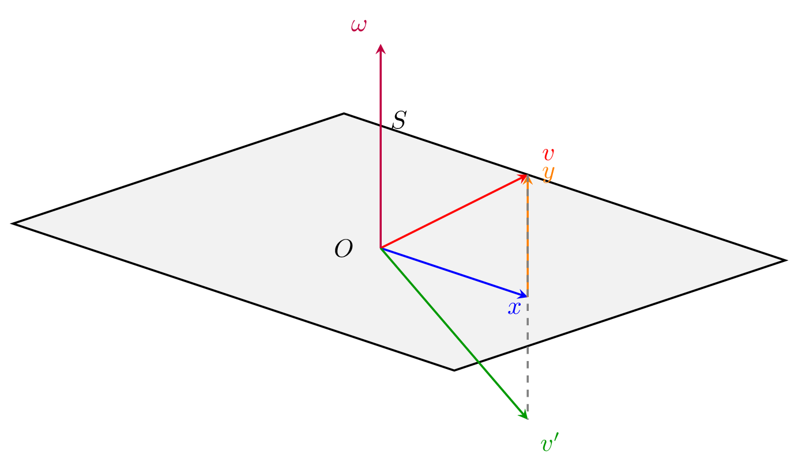

第 2 章 矩阵
本章若按照证明顺序则不可避免地需要将线性方程组的知识打散，无法统一叙述，经过思考最终还是决定将线性方程组的部分统一，请读者在阅读过程中自行决定该部分的阅读顺序。
2.1 矩阵空间
Definition 2.1. 由\(m\times n\)个数排成\(m\)行、\(n\)列的一张表称为一个\(m\times n\)矩阵（matrix），其中的每一个数称为这个矩阵的一个元素，第\(i\)行与第\(j\)列交叉位置的元素称为矩阵的\((i,j)\)元，记作\(A(i;j)\)。一个\(m\times n\)矩阵可以简单地记作\(A_{m\times n}\)。如果矩阵\(A\)的\((i,j)\)元是\(a_{ij}\)，那么可以记作\(A=(a_{ij})\)。如果一个矩阵的行数和列数相同，则称它为方阵（square matrix），\(n\)行\(n\)列的方阵也成为\(n\)阶矩阵。对于两个矩阵\(A\)和\(B\)，如果它们的行数都等于\(m\)且列数都等于\(n\)，同时还有\(A(i;j)=B(i;j),i=1,2,\dots,m,\;j=1,2,\dots,n\)，那么称\(A\)和\(B\)相等，记作\(A=B\)。
Definition 2.2. 称元素全为\(0\)的矩阵为零矩阵（zero matrix），记作\(\mathbf{0}\)。
Definition 2.3. 称主对角线元素都为\(1\)其他位置元素都为\(0\)的\(n\)阶方阵为\(n\)阶单位矩阵（identity matrix），记为\(I_n\)。
Definition 2.4. 若一个\(n\)阶方阵的主对角线下方的元素全为\(0\)，即\(a_{ij}=0(i>j)\)，称该矩阵为\(n\)阶上三角矩阵（upper triangular matrix）。对角线元素均为\(1\)的上三角矩阵被称为单位上三角矩阵。若一个\(n\)阶方阵的主对角线上方的元素全为\(0\)，即\(a_{ij}=0(i<j)\)，称该矩阵为\(n\)阶下三角矩阵（lower triangular matrix）。对角线元素均为\(1\)的下三角矩阵被称为单位下三角矩阵。
2.1.1 矩阵的运算
2.1.1.1 加减法与数量乘法
Definition 2.5. 将数域\(K\)上所有\(m\times n\)矩阵组成的集合记作\(M_{m\times n}(K)\)，当\(m=n\)时，\(M_{m\times m}(K)\)可以简记作\(M_m(K)\)。在\(M_{m\times n}(K)\)中定义如下运算：
加法：
\[\begin{equation*} \forall\;A=(a_{ij}),B=(b_{ij})\in M_{m\times n}(K),\;A+B=(a_{ij}+b_{ij}) \end{equation*}\]
纯量乘法：
\[\begin{equation*} \forall\;k\in K,\;\forall\;A=(a_{ij}),\;kA=(ka_{ij}) \end{equation*}\]
那么\(M_{m\times n}(K)\)构成一个线性空间。
证明. 由数域中加法和乘法的封闭性可知如上定义的加法和纯量乘法对\(M_{m\times n}(K)\)是封闭的。
接下来证明如上定义的加法和纯量乘法满足线性空间中的\(8\)条运算法则：
因为数域内的数满足加法交换律与加法结合律，所以\(M_{m\times n}(K)\)上的加法满足线性空间运算法则(1)(2)；
对任意的\(A\in M_{m\times n}(K)\)，有\(A+\mathbf{0}=A\)，因此\(M_{m\times n}(K)\)中存在零元且它就是\(\mathbf{0}\)，\(M_{m\times n}(K)\)上的加法满足线性空间运算法则(3)；
对任意的\(A\in M_{m\times n}(K)\)，取\(-A=(-a_{ij})\)，则有\(A+(-A)=(a_{ij}-a_{ij})=\mathbf{0}\)。由\(A\)的任意性，\(M_{m\times n}(K)\)中的每个元素都具有负元。因此，\(M_{m\times n}(K)\)上的加法满足线性空间运算法则(4)；
因为数域内的数满足乘法结合律和乘法分配律，同时它们乘\(1\)的积是自身，所以\(M_{m\times n}\)上的纯量乘法满足线性空间运算法则(5)(6)(7)(8)。
证明完毕。 ◻
Definition 2.6. 定义\(M_{m\times n}(K)\)上矩阵的减法如下：设\(A,B\in M_{m\times n}(K)\)，则：
\[\begin{equation*} A-B\coloneq A+(-B) \end{equation*}\]
2.1.1.2 乘法
Definition 2.7. 设\(A=(a_{ij})_{s\times n}\in M_{s\times n}(K),\;B=(b_{ij})_{n\times m}\in M_{n\times m}(K)\)，令\(C=(c_{ij})_{s\times m}\in M_{s\times m}(K)\)，其中：
\[\begin{equation*} c_{ij}=\sum_{k=1}^{n}a_{ik}b_{kj},\;i=1,2,\dots,s,\;j=1,2,\dots,m \end{equation*}\]
则称\(C\)为矩阵\(A\)与\(B\)的乘积，记作\(C=AB\)。
Property 2.1.1. 矩阵乘法具有如下性质：
设\(A=(a_{ij})\in M_{m\times n}(K),\;B=(b_{ij})\in M_{n\times p}(K)\)，则\(AB\)有如下四种理解：
\[\begin{gather*} A=(\alpha_1^{\top};\alpha_2^{\top};\dots;\alpha_m^{\top}),\;B=(\beta_1, \beta_2, \dots, \beta_{p})\longrightarrow AB=(\alpha_i^{\top}\beta_j) \\ A=(\alpha_1, \alpha_2, \dots, \alpha_{n})\longrightarrow AB=\left(\sum_{i=1}^{n}b_{i1}\alpha_i,\sum_{i=1}^{n}b_{i2}\alpha_i,\dots,\sum_{i=1}^{n}b_{ip}\alpha_i\right) \\ B=(\beta_1^{\top};\beta_2^{\top};\beta_n^{\top})\longrightarrow AB=\left(\sum_{j=1}^{n}a_{1i}\beta_i^{\top};\sum_{j=1}^{n}a_{2i}\beta_i^{\top};\dots;\sum_{j=1}^{n}a_{mi}\beta_i^{\top}\right) \\ A=(\alpha_1, \alpha_2, \dots, \alpha_{n}),\;B=(\beta_1^{\top};\beta_2^{\top};\beta_n^{\top})\longrightarrow AB=\sum_{i=1}^{n}\alpha_i\beta_i^{\top} \end{gather*}\]
结合律：设\(A\in M_{m\times n}(K),\;B\in M_{n\times p}(K),\;C\in M_{p\times q}(K)\)，则\((AB)C=A(BC)\)；
分配律：设\(A\in M_{m\times n}(K),\;B\in M_{n\times p}(K),\;C\in M_{n\times p}(K),\;D\in M_{p\times q}(K)\)，则\(A(B+C)=AB+AC,\;(B+C)D=BD+CD\)；
设\(A\in M_{m\times n}(K),\;B\in M_{n\times p}(K),\;k\in K\)，则\(k(AB)=(kA)B=A(kB)\)；
设\(A\in M_{m\times n}(K)\)，则\(AI_n=I_mA=A\)；
两个上三角矩阵的乘积还是上三角矩阵，两个下三角矩阵的乘积还是下三角矩阵。
证明. 证明过于机械，略去。 ◻
Definition 2.8. 根据性质 2.1.1(2)，定义\(m\)阶方阵的非负幂整数幂如下：
\[\begin{equation*} A^0=I_m,\quad A^n=\underbrace{A\cdot A \cdots A}_{n\text{个}A},\;n\in\mathbb{N}^+ \end{equation*}\]
2.1.1.3 转置
Definition 2.9. 设\(A\in M_{m\times n}(K)\)，定义\(A\)的转置（transpose）\(A^{\top}\in M_{n\times m}(K)\)，它的第\(i\)行是\(A\)的第\(i\)列，第\(j\)列是\(A\)的第\(j\)行。若\(K=\mathbb{C}^{}\)，称\(A^H=\overline{A}^{\top}\)为\(A\)的Hermitian转置或共轭转置（conjugate transpose），它是对\(A\)的每个元素先取复共轭再经过转置后得到的矩阵。
Property 2.1.2. 转置与共轭转置具有如下性质：
\(A^H=\overline{A}^{\top}=\overline{A^{\top}}\)；
\((A^H)^H=A\)，\((A^{\top})^{\top}=A\)；
\((A+B)^H=A^H+B^H\)，\((A+B)^{\top}=A^{\top}+B^{\top}\)；
\((AB)^H=B^HA^H\)，\((AB)^{\top}=B^{\top}A^{\top}\)。
证明. 证明过于机械，略去。 ◻
Definition 2.10. 若\(A^{\top}=A\)，则称\(A\)为对称矩阵（symmetric matrix）。若\(A^H=A\)，则称\(A\)为Hermitian矩阵（Hermitian matrix）。
2.1.1.4 初等变换
Definition 2.11. 称以下变换为矩阵的初等行变换（elementary row operation）：
把一行的倍数加到另一行上；
互换两行的位置；
用一个非零数乘某一行。
称以下变换为矩阵的初等列变换（elementary column operation）：
把一列的倍数加到另一列上；
互换两列的位置；
用一个非零数乘某一列。
Definition 2.12. 一个矩阵被称为行阶梯形矩阵（row echelon form），如果它满足以下条件：
所有零行（全为零的行）位于非零行的下方；
若某一行非零，则该行的首个非零元素（称为主元（pivot））位于该行之前所有行的主元右侧。
一个矩阵被称为简化行阶梯形矩阵（reduced row echelon form），如果满足以下条件：
它是阶梯形矩阵；
每个非零行的主元都是\(1\)；
每个主元所在列的其他元素均为\(0\)。
Theorem 2.1. 任意一个矩阵都可以经过一系列初等行变换化成行阶梯形矩阵，进而可以经过一系列初等行变换化成简化行阶梯形矩阵。
证明. 数学归纳法，化为行阶梯形矩阵只需经过前两种初等变换，由行阶梯形矩阵化为简化行阶梯形矩阵只需经过后两种初等变换。 ◻
Definition 2.13. 将由单位矩阵经过一次初等行（列）变换后得到的矩阵称为初等矩阵（elementary matrix）。
Property 2.1.3. \(n\)阶初等矩阵具有如下性质：
初等矩阵有且仅有三种类型，分别记为：
\[\begin{gather*} P[j,i(k)]:\text{将$I_n$的第$j$行加上第$i$行的$k$倍，或将$I_n$的第$i$列加上第$j$列的$k$倍} \\ P[i,j]:\text{交换$I_n$的第$i$行和第$j$行，或交换$I_n$的第$i$列和第$j$列} \\ P[i(c)]:\text{将$I_n$的第$i$行乘非零常数$c$，或将$I_n$的第$i$列乘非零常数$c$} \end{gather*}\]
用初等矩阵左乘一个矩阵，就相当于对矩阵作从单位矩阵得到该初等矩阵的初等行变换；用初等矩阵右乘一个矩阵，就相当于对矩阵作从单位矩阵得到该初等矩阵的初等列变换；
第二种初等矩阵\(P[i,j]\)可以由第一种和第三种表示，即矩阵的第二种初等变换可以由一系列其它两种初等变换得到。
证明. (1)(2)证明过于机械，略去。
(3)只需注意到\(P[i,j]=P[i(-1)]P[i,j(-1)]P[j,i(1)]P[i,j(-1)]\)。由(2)即可得到矩阵的第二种初等变换可以由一系列其它两种初等变换得到。 ◻
Definition 2.14. 若一个\(n\)阶方阵的每一行与每一列中恰有一个元素为\(1\)，其余元素均为\(0\)，称该矩阵为\(n\)阶置换矩阵（permutation matrix）。
Property 2.1.4. 用置换矩阵乘上一个矩阵表示对该矩阵作矩阵的第二类初等变换，即互换行、列的位置。
证明. 置换矩阵可由单位矩阵经矩阵的第二类初等变换得到，由性质 2.1.3(2)即可得出结论。 ◻
2.1.1.5 迹
Definition 2.15. \(A=(a_{ij})\in M_{n}(K)\)的主对角线上的元素之和称为\(A\)的迹（trace），记作\(\operatorname{tr}(A)\)，即：
\[\begin{equation*} \operatorname{tr}(A)=\sum_{i=1}^{n}a_{ii} \end{equation*}\]
Property 2.1.5. 设\(A,B\in M_{n}(K),\;k\in K\)，矩阵的迹具有如下性质：
\(\operatorname{tr}(A+B)=\operatorname{tr}(A)+\operatorname{tr}(B)\)；
\(\operatorname{tr}(kA)=k\operatorname{tr}(A)\)；
\(\operatorname{tr}(AB)=\operatorname{tr}(BA)\)。
证明. (1)(2)是显然的；
(3)显然：
\[\begin{gather*} \operatorname{tr}(AB)=\sum_{i=1}^{n}\sum_{j=1}^{n}a_{ij}b_{ji}=\sum_{j=1}^{n}\sum_{i=1}^{n}b_{ji}a_{ij}=\operatorname{tr}(BA) \end{gather*}\]
◻
2.1.2 矩阵的行列式
2.1.2.1 排列
Definition 2.16. \(n\)个不同的正整数的一个全排列称为一个n元排列（n-permutation）。
Definition 2.17. 在\(n\)元排列\(a_1a_2\cdots a_n\)中，从左到右任取一对数\(a_ia_j(i<j)\)，若\(a_i<a_j\)，则称这一对数构成一个顺序（natural order）；若\(a_i>a_j\)，则称这一对数构成一个逆序（inversion）。
Definition 2.18. 一个\(n\)元排列\(a_1a_2\cdots a_n\)中逆序的总数称为NumberOfInversion，记作\(\tau(a_1a_2\cdots a_n)\)。逆序数为奇数的排列称为奇排列（odd permutation），逆序数为偶数的排列称为偶排列（even permutation）。
Definition 2.19. 将一个排列\(a_1a_2\cdots a_n\)中第\(i\)个位置的元素\(a_i\)与第\(j\)个位置的元素\(a_j\)交换位置的运算称为对换（transposition），记作\((a_i,a_j)\)。
Property 2.1.6. \(n\)元排列的对换具有如下性质：
对换改变\(n\)元排列的奇偶性；
任一\(n\)元排列可以经过一系列对换变为逆序数为\(0\)的排列，且所作的对换的次数与这个\(n\)元排列具有相同的奇偶性；
在所有由正整数\(a_1, a_2, \dots, a_{n}(n>1)\)构成的\(n\)元排列中，偶排列数等于奇排列数；
设\(c_1c_2\cdots c_kd_1d_2\cdots d_{n-k}\)是由\(1,2,\dots,n\)构成的一个\(n\)元排列，则：
\[\begin{equation*} (-1)^{\tau(c_1c_2\cdots c_kd_1d_2\cdots d_{n-k})}=(-1)^{\tau(c_1c_2\cdots c_k)+\tau(d_1d_2\cdots d_{n-k})}\cdot(-1)^{c_1+c_2+\cdots+c_k}\cdot(-1)^{\frac{k(k+1)}{2}} \end{equation*}\]
证明. (1)任取一个\(n\)元排列\(a_1a_2\cdots a_n\)，若对换\((a_i,a_j)\)的两个数\(a_i,a_j\)相邻，即：
\[\begin{equation*} a_1a_2\cdots a_ia_j\cdots a_n\longrightarrow a_1a_2\cdots a_ja_i\cdots a_n \end{equation*}\]
这个对换只改变了\(a_i\)与\(a_j\)构成的数对的顺逆序关系，于是对换前后排列的奇偶性相反。
对于一般情况：
\[\begin{equation*} a_1a_2\cdots a_ik_1k_2\cdots k_sa_j\cdots a_n\longrightarrow a_1a_2\cdots a_jk_2\cdots k_sa_i\cdots a_n \end{equation*}\]
这个对换只需作\(2s+1\)次相邻数的对换即可达到：
\[\begin{equation*} (a_i,k_1),\;(a_i,k_2),\;\dots,(a_i,k_s),\;(a_i,a_j),\;(k_s,a_j),\;(k_{s-1},a_j)\;\dots,(k_1,a_j) \end{equation*}\]
所以对换前后排列的奇偶性相反。
综上，对换改变\(n\)元排列的奇偶性。
(2)满足逆序数为\(0\)的排列是一个偶排列，于是由(1)立即可得出结论。
(3)将所有奇排列构成的集合记作\(A_n\)，偶排列构成的集合记作\(B_n\)。由(1)可知\(f:(a_1,a_2)\)是一个\(A_n\)与\(B_n\)之间的双射，所以奇排列数等于偶排列数。
(4)设\(c_1c_2\cdots c_k\)经过\(s\)次对换得到\(a_1a_2\cdots a_k\)，其中\(\tau(a_1a_2\cdots a_k)=0\)，由(2)可得：
\[\begin{align*} &(-1)^{\tau(c_1c_2\cdots c_kd_1d_2\cdots d_{n-k})}=(-1)^s(-1)^{\tau(a_1a_2\cdots a_kd_1d_2\cdots d_{n-k})} \\ =&(-1)^{\tau(c_1c_2\cdots c_k)}(-1)^{\tau(d_1d_2\cdots d_{n-k})}(-1)^{(a_1-1)+(a_2-1)+\cdots+(a_k-1)} \\ =&(-1)^{\tau(c_1c_2\cdots c_k)+\tau(d_1d_2\cdots d_{n-k})}\cdot(-1)^{c_1+c_2+\cdots+c_k}\cdot(-1)^{\frac{k(k+1)}{2}} \end{align*}\]
◻
2.1.2.2 行列式的定义与性质
Definition 2.20. 定义\(A=(a_{ij})\in M_{n}(K)\)的行列式（determinant）\(\det A\)为：
\[\begin{equation*} \begin{vmatrix} a_{11} & a_{12} & \cdots & a_{1n} \\ a_{21} & a_{22} & \cdots & a_{2n} \\ \vdots & \vdots & \ddots & \vdots \\ a_{n1} & a_{n2} & \cdots & a_{nn} \end{vmatrix}= \sum_{j_1j_2\cdots j_n}^{}(-1)^{\tau(j_1j_2\cdots j_n)}a_{1j_1}a_{2j_2}\cdots a_{nj_n} \end{equation*}\]
其中\(j_1j_2\cdots j_n\)是由\(1\)到\(n\)构成的\(n\)元排列，\(\det A\)也记作\(|A|\)。
Definition 2.21. 设\(A\in M_{n}(K)\)。在\(A\)中任意取定\(k(1\leqslant k<n)\)行（\(i_1,i_2,\dots,i_k\)）、\(k\)列（\(j_1,j_2,\dots,j_k\)），位于这些行和列交叉处的\(k^2\)个元素按原来的次序组成的\(k\)阶矩阵的行列式称为\(A\)的一个k阶子式（k-minor），记作：
\[\begin{equation*} A\left\{ \begin{array}{*{4}{c}} i_1 & i_2 & \dots & i_k \\ j_1 & j_2 & \dots & j_k \end{array}\right\} \end{equation*}\]
其余元素按原来的次序组成的\(n-k\)阶矩阵的行列式称为上式的余子式（minor），称：
\[\begin{equation*} (-1)^{(i_1+i_2+\cdots+i_k)+(j_1+j_2+\cdots+j_k)}A\left\{ \begin{array}{*{4}{c}} i_1' & i_2' & \dots & i_{n-k}' \\ j_1' & j_2' & \dots & j_{n-k}' \end{array}\right\} \end{equation*}\]
为其代数余子式（cofactor），其中：
\[\begin{gather*} \{i_1',i_2',\dots,i_{n-k}'\}=\{1,2,\dots,n\}\setminus\{i_1,i_2,\dots,i_k\} \\ \{j_1',j_2',\dots,j_{n-k}'\}=\{1,2,\dots,n\}\setminus\{j_1,j_2,\dots,j_k\} \end{gather*}\]
特别的，\(A\)的\((i,j)\)元的余子式记作\(M_{ij}\)，代数余子式记作\(A_{ij}\)。若选取的行号和列号相同，则称这些行和列交叉处的\(k^2\)个元素按原来的次序组成的\(k\)阶矩阵为k阶主子阵（principal k-submatrix），其行列式为\(A\)的k阶主子式（principal k-minor）；若选取的行和列是前\(k\)行与前\(k\)列，则称这些行和列交叉处的\(k^2\)个元素按原来的次序组成的\(k\)阶矩阵为k阶顺序主子阵（leading principal k-submatrix），其行列式为\(A\)的k阶顺序主子式（leading principal k-minor）。对于非方阵的矩阵，可类似定义。
Property 2.1.7. 矩阵\(A=(a_{ij})\in M_{n}(K)\)的行列式\(\det A\)具有如下性质：
\(\det A\)有等价表达式：
\[\begin{gather*} \sum_{k_1k_2\cdots k_n}^{}(-1)^{\tau(i_1i_2\cdots i_n)+\tau(k_1k_2\cdots k_n)}a_{i_1k_1}a_{i_2k_2}\cdots a_{i_nk_n} \\ \sum_{i_1i_2\cdots i_n}^{}(-1)^{\tau(i_1i_2\cdots i_n)+\tau(k_1k_2\cdots k_n)}a_{i_1k_1}a_{i_2k_2}\cdots a_{i_nk_n} \\ \sum_{i_1i_2\cdots i_n}^{}(-1)^{\tau(i_1i_2\cdots i_n)}a_{i_11}a_{i_22}\cdots a_{i_nn} \end{gather*}\]
\(\det A^{\top}=\det A,\;|A^H|=\overline{|A|}\)；
行列式一行（列）的公因子可以提出去：
\[\begin{gather*} \begin{vmatrix} a_{11} & a_{12} & \cdots & a_{1n} \\ \vdots & \vdots & \ddots & \vdots \\ ka_{i1} & ka_{i2} & \cdots & ka_{in} \\ \vdots & \vdots & \ddots & \vdots \\ a_{n1} & a_{n2} & \cdots & a_{nn} \end{vmatrix}=k \begin{vmatrix} a_{11} & a_{12} & \cdots & a_{1n} \\ \vdots & \vdots & \ddots & \vdots \\ a_{i1} & a_{i2} & \cdots & a_{in} \\ \vdots & \vdots & \ddots & \vdots \\ a_{n1} & a_{n2} & \cdots & a_{nn} \end{vmatrix} \\ \begin{vmatrix} a_{11} & \cdots & ka_{1j} & \cdots & a_{1n} \\ a_{21} & \cdots & ka_{2j} & \cdots & a_{2n} \\ \vdots & \ddots & \vdots & \ddots & \vdots \\ a_{n1} & \cdots & ka_{nj} & \cdots & a_{nn} \end{vmatrix}=k \begin{vmatrix} a_{11} & \cdots & a_{1j} & \cdots & a_{1n} \\ a_{21} & \cdots & a_{2j} & \cdots & a_{2n} \\ \vdots & \ddots & \vdots & \ddots & \vdots \\ a_{n1} & \cdots & a_{nj} & \cdots & a_{nn} \end{vmatrix} \end{gather*}\]
行列式的行（列）可以作拆分：
\[\begin{gather*} \begin{vmatrix} a_{11} & a_{12} & \cdots & a_{1n} \\ \vdots & \vdots & \ddots & \vdots \\ a_{i1}+a_{i1}' & a_{i2}+a_{i2}' & \cdots & a_{in}+a_{in}' \\ \vdots & \vdots & \ddots & \vdots \\ a_{n1} & a_{n2} & \cdots & a_{nn} \end{vmatrix}= \begin{vmatrix} a_{11} & a_{12} & \cdots & a_{1n} \\ \vdots & \vdots & \ddots & \vdots \\ a_{i1} & a_{i2} & \cdots & a_{in} \\ \vdots & \vdots & \ddots & \vdots \\ a_{n1} & a_{n2} & \cdots & a_{nn} \end{vmatrix}+ \begin{vmatrix} a_{11} & a_{12} & \cdots & a_{1n} \\ \vdots & \vdots & \ddots & \vdots \\ a_{i1}' & a_{i2}' & \cdots & a_{in}' \\ \vdots & \vdots & \ddots & \vdots \\ a_{n1} & a_{n2} & \cdots & a_{nn} \end{vmatrix} \\ \begin{vmatrix} a_{11} & \cdots & a_{1j}+a_{1j}' & \cdots & a_{1n} \\ a_{21} & \cdots & a_{2j}+a_{2j}' & \cdots & a_{2n} \\ \vdots & \ddots & \vdots & \ddots & \vdots \\ a_{n1} & \cdots & a_{nj}+a_{nj}' & \cdots & a_{nn} \end{vmatrix}= \begin{vmatrix} a_{11} & \cdots & a_{1j} & \cdots & a_{1n} \\ a_{21} & \cdots & a_{2j} & \cdots & a_{2n} \\ \vdots & \ddots & \vdots & \ddots & \vdots \\ a_{n1} & \cdots & a_{nj} & \cdots & a_{nn} \end{vmatrix}+ \begin{vmatrix} a_{11} & \cdots & a_{1j}' & \cdots & a_{1n} \\ a_{21} & \cdots & a_{2j}' & \cdots & a_{2n} \\ \vdots & \ddots & \vdots & \ddots & \vdots \\ a_{n1} & \cdots & a_{nj}' & \cdots & a_{nn} \end{vmatrix} \end{gather*}\]
行列式两行（列）互换，行列式反号：
\[\begin{gather*} \begin{vmatrix} a_{11} & a_{12} & \cdots & a_{1n} \\ \vdots & \vdots & \ddots & \vdots \\ a_{i1} & a_{i2} & \cdots & a_{in} \\ \vdots & \vdots & \ddots & \vdots \\ a_{j1} & a_{j2} & \cdots & a_{jn} \\ \vdots & \vdots & \ddots & \vdots \\ a_{n1} & a_{n2} & \cdots & a_{nn} \end{vmatrix}=- \begin{vmatrix} a_{11} & a_{12} & \cdots & a_{1n} \\ \vdots & \vdots & \ddots & \vdots \\ a_{j1} & a_{j2} & \cdots & a_{jn} \\ \vdots & \vdots & \ddots & \vdots \\ a_{i1} & a_{i2} & \cdots & a_{in} \\ \vdots & \vdots & \ddots & \vdots \\ a_{n1} & a_{n2} & \cdots & a_{nn} \end{vmatrix} \\ \begin{vmatrix} a_{11} & \cdots & a_{1i} & \cdots & a_{1j} & \cdots & a_{1n} \\ a_{21} & \cdots & a_{2i} & \cdots & a_{2j} & \cdots & a_{2n} \\ \vdots & \ddots & \vdots & \ddots & \vdots & \ddots & \vdots \\ a_{n1} & \cdots & a_{ni} & \cdots & a_{nj} & \cdots & a_{nn} \end{vmatrix}=- \begin{vmatrix} a_{11} & \cdots & a_{1j} & \cdots & a_{1i} & \cdots & a_{1n} \\ a_{21} & \cdots & a_{2j} & \cdots & a_{2i} & \cdots & a_{2n} \\ \vdots & \ddots & \vdots & \ddots & \vdots & \ddots & \vdots \\ a_{n1} & \cdots & a_{nj} & \cdots & a_{ni} & \cdots & a_{nn} \end{vmatrix} \end{gather*}\]
行列式两行（列）成比例则值为\(0\)：
\[\begin{equation*} \begin{vmatrix} a_{11} & a_{12} & \cdots & a_{1n} \\ \vdots & \vdots & \ddots & \vdots \\ a_{i1} & a_{i2} & \cdots & a_{in} \\ \vdots & \vdots & \ddots & \vdots \\ ka_{i1} & ka_{i2} & \cdots & ka_{in} \\ \vdots & \vdots & \ddots & \vdots \\ a_{n1} & a_{n2} & \cdots & a_{nn} \end{vmatrix}= \begin{vmatrix} a_{11} & \cdots & a_{1j} & \cdots & ka_{1j} & \cdots & a_{1n} \\ a_{21} & \cdots & a_{2j} & \cdots & ka_{2j} & \cdots & a_{2n} \\ \vdots & \ddots & \vdots & \ddots & \vdots & \ddots & \vdots \\ a_{n1} & \cdots & a_{nj} & \cdots & ka_{nj} & \cdots & a_{nn} \end{vmatrix}=0 \end{equation*}\]
把一行（列）的倍数加到另一行（列）上行列式的值不变：
\[\begin{gather*} \begin{vmatrix} a_{11} & a_{12} & \cdots & a_{1n} \\ \vdots & \vdots & \ddots & \vdots \\ a_{i1} & a_{i2} & \cdots & a_{in} \\ \vdots & \vdots & \ddots & \vdots \\ a_{j1}+ka_{i1} & a_{j2}+ka_{i2} & \cdots & a_{jn}+ka_{in} \\ \vdots & \vdots & \ddots & \vdots \\ a_{n1} & a_{n2} & \cdots & a_{nn} \end{vmatrix}= \begin{vmatrix} a_{11} & a_{12} & \cdots & a_{1n} \\ \vdots & \vdots & \ddots & \vdots \\ a_{i1} & a_{i2} & \cdots & a_{in} \\ \vdots & \vdots & \ddots & \vdots \\ a_{j1} & a_{j2} & \cdots & a_{jn} \\ \vdots & \vdots & \ddots & \vdots \\ a_{n1} & a_{n2} & \cdots & a_{nn} \end{vmatrix} \\ \begin{vmatrix} a_{11} & \cdots & a_{1i} & \cdots & a_{1j}+ka_{1i} & \cdots & a_{1n} \\ a_{21} & \cdots & a_{2i} & \cdots & a_{2j}+ka_{2i} & \cdots & a_{2n} \\ \vdots & \ddots & \vdots & \ddots & \vdots & \ddots & \vdots \\ a_{n1} & \cdots & a_{ni} & \cdots & a_{nj}+ka_{ni} & \cdots & a_{nn} \end{vmatrix}= \begin{vmatrix} a_{11} & \cdots & a_{1i} & \cdots & a_{1j} & \cdots & a_{1n} \\ a_{21} & \cdots & a_{2i} & \cdots & a_{2j} & \cdots & a_{2n} \\ \vdots & \ddots & \vdots & \ddots & \vdots & \ddots & \vdots \\ a_{n1} & \cdots & a_{ni} & \cdots & a_{nj} & \cdots & a_{nn} \end{vmatrix} \end{gather*}\]
\(A\)的行列式等于它的第\(i\)行（第\(j\)列）元素与自己代数余子式的乘积之和，即：
\[\begin{equation*} \det A=\sum_{j=1}^{n}a_{ij}A_{ij}=\sum_{i=1}^{n}a_{ij}A_{ij} \end{equation*}\]
\(A\)的第\(i\)行（列）元素与第\(j(j\ne i)\)行（列）相应元素的代数余子式之和等于\(0\)，即：
\[\begin{equation*} \sum_{k=1}^{n}a_{ik}A_{jk}=\sum_{k=1}^{n}a_{ki}A_{kj}=0 \end{equation*}\]
(Laplace Theorem) 取定\(A\)的第\(i_1,i_2,\dots,i_k(i_1<i_2<\cdots<i_k)\)行，则这\(k\)行元素构成的所有\(k\)阶子式与它们自己的代数余子式的乘积之和等于\(\det A\)，即：
\[\begin{align*} \det A&=\sum_{1\leqslant j_1<j_2<\cdots<j_k\leqslant n}A\left\{ \begin{array}{*{4}{c}} i_1 & i_2,\dots & i_k \\ j_1 & j_2,\dots & j_k \end{array}\right\} \\ &\quad(-1)^{(i_1+i_2+\cdots+i_k)+(j_1+j_2+\cdots+j_k)}A\left\{ \begin{array}{*{4}{c}} i_1' & i_2' & \dots & i_{n-k}' \\ j_1' & j_2' & \dots & j_{n-k}' \end{array}\right\} \end{align*}\]
(Cauchy-Binet Formula) 设\(P=(p_{ij})\in M_{m\times n}(K),Q=(q_{ij})\in M_{n\times m}(K)\)，\(r\in\mathbb{N}^+\)且\(r\leqslant m\)。
若\(r>n\)，则\(PQ\)的任意一个\(r\)阶子式为\(0\)；
若\(r\leqslant n\)，则：
\[\begin{align*} (PQ)\left\{ \begin{array}{*{4}{c}} i_1 & i_2 & \dots & i_r \\ j_1 & j_2 & \dots & j_r \end{array}\right\}&=\sum_{1\leqslant k_1<k_2<\cdots<k_r\leqslant n}^{}P\left\{ \begin{array}{*{4}{c}} i_1 & i_2 & \dots & i_r \\ k_1 & k_2 & \dots & k_r \end{array}\right\} \\ &\quad Q\left\{ \begin{array}{*{4}{c}} k_1 & k_2 & \dots & k_r \\ j_1 & j_2 & \dots & j_r \end{array}\right\} \end{align*}\]
上述结论内含当\(m=n\)时，\(\det(PQ)=\det P\det Q\)；
若\(A\)是上三角矩阵或下三角矩阵，则\(\det A=\prod\limits_{i=1}^na_{ii}\)；
称下述行列式为Vandermonde行列式：
\[\begin{equation*} \begin{vmatrix} 1 & 1 & 1 & \cdots & 1 \\ x_1 & x_2 & x_3 & \cdots & x_n \\ x_1^2 & x_2^2 & x_3^2 & \cdots & x_n^2 \\ \vdots & \vdots & \vdots & \ddots & \vdots \\ x_1^{n-2} & x_2^{n-2} & x_3^{n-2} & \cdots & x_n^{n-2} \\ x_1^{n-1} & x_2^{n-1} & x_3^{n-1} & \cdots & x_n^{n-1} \end{vmatrix}=\prod_{1\leqslant i<j\leqslant n}(x_j-x_i) \end{equation*}\]
证明. (1)对排列\(a_{i_1k_1}a_{i_2k_2}\cdots a_{i_nk_n}\)进行考察，设其进行了\(s\)次对换得到\(a_{1j_1}a_{2j_2}\cdots a_{nj_n}\)。由性质 2.1.6(2)可知：
\[\begin{equation*} (-1)^{\tau(i_1i_2\cdots i_n)}(-1)^{s}=(-1)^{\tau(12\cdots n)}=1,\quad (-1)^{\tau(k_1k_2\cdots k_n)}(-1)^{s}=(-1)^{\tau(j_1j_2\cdots j_n)} \end{equation*}\]
所以：
\[\begin{equation*} (-1)^{\tau(i_1i_2\cdots i_n)}(-1)^{s}(-1)^{\tau(k_1k_2\cdots k_n)}(-1)^{s}=(-1)^{\tau(j_1j_2\cdots j_n)} \end{equation*}\]
即：
\[\begin{equation*} (-1)^{\tau(i_1i_2\cdots i_n)+\tau(k_1k_2\cdots k_n)}=(-1)^{\tau(j_1j_2\cdots j_n)} \end{equation*}\]
于是：
\[\begin{equation*} \sum_{j_1j_2\cdots j_n}^{}(-1)^{\tau(j_1j_2\cdots j_n)}a_{1j_1}a_{2j_2}\cdots a_{nj_n}=\sum_{k_1k_2\cdots k_n}^{}(-1)^{\tau(i_1i_2\cdots i_n)+\tau(k_1k_2\cdots k_n)}a_{i_1k_1}a_{i_2k_2}\cdots a_{nk_n} \end{equation*}\]
第二式同理可得，第三式可由第二式推出。
(2)利用(1)将行列式分别按行顺序与列顺序展开即可得到。共轭转置的情况由即可得出。
(3)由定义可得：
\[\begin{equation*} \sum_{j_1j_2\cdots j_n}^{}(-1)^{\tau(j_1j_2\cdots j_n)}a_{1j_1}a_{2j_2}\cdots ka_{ij_i}\cdots a_{nj_n}=k\sum_{j_1j_2\cdots j_n}^{}(-1)^{\tau(j_1j_2\cdots j_n)}a_{1j_1}a_{2j_2}\cdots a_{ij_i}\cdots a_{nj_n} \end{equation*}\]
列的结果由(2)和行的结果即可得到。
(4)由定义可得：
\[\begin{align*} &\sum_{j_1j_2\cdots j_n}^{}(-1)^{\tau(j_1j_2\cdots j_n)}a_{1j_1}a_{2j_2}\cdots (a_{ij_i}+a_{ij_i}')\cdots a_{nj_n} \\ =&\sum_{j_1j_2\cdots j_n}^{}(-1)^{\tau(j_1j_2\cdots j_n)}a_{1j_1}a_{2j_2}\cdots a_{ij_i}\cdots a_{nj_n} \\ &+\sum_{j_1j_2\cdots j_n}^{}(-1)^{\tau(j_1j_2\cdots j_n)}a_{1j_1}a_{2j_2}\cdots a_{ij_i}'\cdots a_{nj_n} \end{align*}\]
列的结果由(2)和行的结果即可得到。
(5)由定义和性质 2.1.6(1)可得：
\[\begin{align*} &\sum_{j_1j_2\cdots j_n}^{}(-1)^{\tau(j_1j_2\cdots j_i\cdots j_k\cdots j_n)}a_{1j_1}a_{2j_2}\cdots a_{ij_i}\cdots a_{kj_k}\cdots a_{nj_n} \\ =&\sum_{j_1j_2\cdots j_n}^{}(-1)^{\tau(j_1j_2\cdots j_k\cdots j_i\cdots j_n)}a_{1j_1}a_{2j_2}\cdots a_{kj_k}\cdots a_{ij_i}\cdots a_{nj_n} \\ =&(-1)\sum_{j_1j_2\cdots j_n}^{}(-1)^{\tau(j_1j_2\cdots j_i\cdots j_k\cdots j_n)}a_{1j_1}a_{2j_2}\cdots a_{ij_i}\cdots a_{kj_k}\cdots a_{nj_n} \end{align*}\]
(6)由(3)(5)可得。
(7)由(3)(6)可得。
(8)由(1)可得：
\[\begin{align*} \det A&=\sum_{k_1k_2\cdots k_{i-1}jk_{i+1}\cdots k_n}^{}(-1)^{\tau(k_1k_2\cdots k_{i-1}jk_{i+1}\cdots k_n)}a_{1k_1}a_{2k_2}\cdots a_{(i-1)k_{i-1}}a_{ij}a_{(i+1)k_{i+1}}\cdots a_{nk_n} \\ &=\sum_{jk_1k_2\cdots k_{i-1}k_{i+1}\cdots k_n}^{}(-1)^{\tau[i12\cdots(i-1)(i+1)\cdots n]+\tau(jk_1k_2\cdots k_{i-1}k_{i+1}\cdots k_n)} \\ &\quad a_{ij}a_{1k_1}a_{2k_2}\cdots a_{(i-1)k_{i-1}}a_{(i+1)k_{i+1}}\cdots a_{nk_n} \\ &=\sum_{jk_1k_2\cdots k_{i-1}k_{i+1}\cdots k_n}^{}(-1)^{i-1}(-1)^{j-1}(-1)^{\tau(k_1k_2\cdots k_{i-1}k_{i+1}\cdots k_n)} \\ &\quad a_{ij}a_{1k_1}a_{2k_2}\cdots a_{(i-1)k_{i-1}}a_{(i+1)k_{i+1}}\cdots a_{nk_n} \\ &=\sum_{j=1}^{n}(-1)^{i-1}(-1)^{j-1}a_{ij}\sum_{k_1k_2\cdots k_{i-1}k_{i+1}\cdots k_n}(-1)^{\tau(k_1k_2\cdots k_{i-1}k_{i+1}\cdots k_n)} \\ &\quad a_{1k_1}a_{2k_2}\cdots a_{(i-1)k_{i-1}}a_{(i+1)k_{i+1}}\cdots a_{nk_n} \\ &=\sum_{j=1}^{n}(-1)^{i+j}a_{ij}M_{ij}=\sum_{j=1}^{n}a_{ij}A_{ij} \end{align*}\]
列的结果由(2)和行的结果即可得到。
(9)由(8)(6)(2)即可得到。
(10)给定\(A\)的一个行指标\(i_1i_2\cdots i_ki_1'i_2'\cdots i_{n-k}'\)，由(1)可得：
\[\begin{align*} \det A&=\sum_{\mu_1\mu_2\cdots\mu_k\nu_1\nu_2\cdots\nu_{n-k}}(-1)^{\tau(i_1i_2\cdots i_ki_1'i_2'\cdots i_{n-k}')+\tau(\mu_1\mu_2\cdots\mu_k\nu_1\nu_2\cdots\nu_{n-k})} \\ &\quad a_{i_1\mu_1}a_{i_2\mu_2}\cdots a_{i_k\mu_k}a_{i_1'\nu_1}a_{i_2'\nu_2}\cdots a_{i_{n-k}'\nu_{n-k}} \end{align*}\]
将这\(n!\)项进行分组：任意取定\(j_1, j_2, \dots, j_{k}\)列，其中\(\tau(j_1j_2\cdots j_k)=0\)，对应于选定结果的\(n\)元排列形如：
\[\begin{equation*} \mu_1\mu_2\cdots\mu_k\nu_1\nu_2\cdots\nu_{n-k} \end{equation*}\]
其中\(\mu_1\mu_2\cdots\mu_k\)是\(j_1, j_2, \dots, j_{k}\)形成的排列，\(\nu_1\nu_2\cdots\nu_{n-k}\)是\(\{1,2,\dots,n\}\setminus\{j_1, j_2, \dots, j_{k}\}=\{j_1',j_2',\dots,j_{n-k}'\}\)形成的排列。根据性质 2.1.6(4)可得：
\[\begin{align*} \det A&=\sum_{1\leqslant j_1<\cdots<j_k\leqslant n}^{}\sum_{\mu_1\mu_2\cdots\mu_k}^{}\sum_{\nu_1\nu_2\cdots\nu_{n-k}}^{}(-1)^{\tau(i_1i_2\cdots i_ki_1'i_2'\cdots i_{n-k}')+\tau(\mu_1\mu_2\cdots\mu_k\nu_1\nu_2\cdots\nu_{n-k})} \\ &\quad a_{i_1\mu_1}a_{i_2\mu_2}\cdots a_{i_k\mu_k}a_{i_1'\nu_1}a_{i_2'\nu_2}\cdots a_{i_{n-k}'\nu_{n-k}} \\ &=\sum_{1\leqslant j_1<\cdots<j_k\leqslant n}^{}\sum_{\mu_1\mu_2\cdots\mu_k}^{}\sum_{\nu_1\nu_2\cdots\nu_{n-k}}^{}(-1)^{(i_1-1)+(i_2-1)+\cdots+(i_{k}-1)}(-1)^{\tau(\mu_1\mu_2\cdots\mu_k)+\tau(\nu_1\nu_2\cdots\nu_{n-k})} \\ &\quad(-1)^{j_1+j_2+\cdots+j_k}(-1)^{\frac{k(k+1)}{2}}a_{i_1\mu_1}a_{i_2\mu_2}\cdots a_{i_k\mu_k}a_{i_1'\nu_1}a_{i_2'\nu_2}\cdots a_{i_{n-k}'\nu_{n-k}} \\ &=\sum_{1\leqslant j_1<\cdots<j_k\leqslant n}^{}\sum_{\mu_1\mu_2\cdots\mu_k}^{}\sum_{\nu_1\nu_2\cdots\nu_{n-k}}^{}(-1)^{i_1+i_2+\cdots+i_k}(-1)^{\tau(\mu_1\mu_2\cdots\mu_k)+\tau(\nu_1\nu_2\cdots\nu_{n-k})} \\ &\quad(-1)^{j_1+j_2+\cdots+j_k}a_{i_1\mu_1}a_{i_2\mu_2}\cdots a_{i_k\mu_k}a_{i_1'\nu_1}a_{i_2'\nu_2}\cdots a_{i_{n-k}'\nu_{n-k}} \\ &=\sum_{1\leqslant j_1<\cdots<j_k\leqslant n}^{}(-1)^{(i_1+i_2+\cdots+i_k)+(j_1+j_2+\cdots+j_k)} \\ &\quad\sum_{\mu_1\mu_2\cdots\mu_k}^{}(-1)^{\tau(\mu_1\mu_2\cdots\mu_k)}a_{i_1\mu_1}a_{i_2\mu_2}\cdots a_{i_k\mu_k} \\ &\quad\sum_{\nu_1\nu_2\cdots\nu_{n-k}}^{}(-1)^{\tau(\nu_1\nu_2\cdots\nu_{n-k})}a_{i_1'\nu_1}a_{i_2'\nu_2}\cdots a_{i_{n-k}'\nu_{n-k}} \\ &=\sum_{1\leqslant j_1<j_2<\cdots<j_k\leqslant n}(-1)^{(i_1+i_2+\cdots+i_k)+(j_1+j_2+\cdots+j_k)} \\ &\quad A\left\{ \begin{array}{*{4}{c}} i_1 & i_2 & \dots & i_k \\ j_1 & j_2 & \dots & j_k \end{array}\right\}A\left\{ \begin{array}{*{4}{c}} i_1' & i_2' & \dots & i_{n-k}' \\ j_1' & j_2' & \dots & j_{n-k}' \end{array}\right\} \end{align*}\]
(11)先证明：
若\(m>n\)，则\(\det(PQ)=0\)；
若\(m\leqslant n\)，则：
\[\begin{equation*} \det(PQ)=\sum_{1\leqslant j_1<j_2<\cdots<j_m\leqslant n}^{}P \left\{\begin{array}{*{4}{c}} 1 & 2 & \dots & m \\ j_1 & j_2 & \dots & j_m \end{array} \right\}Q \left\{\begin{array}{*{4}{c}} j_1 & j_2 & \dots & j_m \\ 1 & 2 & \dots & m \end{array}\right\} \end{equation*}\]
令：
\[\begin{equation*} C= \begin{pmatrix} P & \mathbf{0} \\ -I_n & Q \end{pmatrix} \end{equation*}\]
由(7)、(10)和(3)可得：
\[\begin{align*} &\det C=\begin{vmatrix} P & \mathbf{0} \\ -I_n & Q \end{vmatrix}= \begin{vmatrix} \mathbf{0} & PQ \\ -I_n & Q \end{vmatrix} \\ =&\det(PQ)(-1)^{(1+2+\cdots+m)+[(n+1)+(n+2)+\cdots+(n+m)]}\det(-I_n) \\ =&\det(PQ)(-1)^{2(1+2+\cdots+m)+mn}(-1)^n=\det(PQ)(-1)^{mn+n}=\det(PQ)(-1)^{n(m+1)} \end{align*}\]
当\(m>n\)时，\(C\)的前\(m\)行中的所有\(m\)阶子式至少有一列全为\(0\)，由(10)可得\(\det C=0\)，于是\(\det(PQ)=0\)。
当\(m\leqslant n\)时，由(10)可得：
\[\begin{align*} \det C&=\sum_{1\leqslant j_1<j_2<\cdots<j_m\leqslant m+n}C\left\{ \begin{array}{*{4}{c}} 1 & 2 & \dots & m \\ j_1 & j_2 & \dots & j_m \end{array}\right\} \\ &\quad(-1)^{(1+2+\cdots+m)+(j_1+j_2+\cdots+j_m)}C\left\{ \begin{array}{*{4}{c}} m+1 & m+2 & \dots & m+n \\ j_1' & j_2' & \dots & j_{n}' \end{array}\right\} \\ &=\sum_{1\leqslant j_1<j_2<\cdots<j_m\leqslant n}P\left\{ \begin{array}{*{4}{c}} 1 & 2 & \dots & m \\ j_1 & j_2 & \dots & j_m \end{array}\right\} \\ &\quad(-1)^{(1+2+\cdots+m)+(j_1+j_2+\cdots+j_m)}C\left\{ \begin{array}{*{4}{c}} m+1 & m+2 & \dots & m+n \\ j_1' & j_2' & \dots & j_{n}' \end{array}\right\} \end{align*}\]
令\(\{i_1, i_2, \dots, i_{n-m}\}=\{1,2,\dots,n\}\setminus\{ j_1,j_2,\dots,j_m\}\)，\(e_{i_k}\)为第\(i_k\)维为\(1\)其余维度元素都为\(0\)的\(n\)维列向量，由(2)(10)可得：
\[\begin{align*} &C\left\{ \begin{array}{*{4}{c}} m+1 & m+2 & \dots & m+n \\ j_1' & j_2' & \dots & j_{n}' \end{array}\right\}= \begin{vmatrix} -e_{i_1} & -e_{i_2} & \cdots & -e_{i_{n-m}} & Q \end{vmatrix} \\ =&(-1)^{n-m}(-1)^{(1+2+\cdots+n-m)+(i_1+i_2+\cdots+i_{n-m})}Q\left\{ \begin{array}{*{4}{c}} j_1 & j_2 & \dots & j_m \\ 1 & 2 & \dots & m \end{array}\right\} \end{align*}\]
所以：
\[\begin{align*} \det C&=\sum_{1\leqslant j_1<j_2<\cdots<j_m\leqslant n}P\left\{ \begin{array}{*{4}{c}} 1 & 2 & \dots & m \\ j_1 & j_2 & \dots & j_m \end{array}\right\}Q\left\{ \begin{array}{*{4}{c}} j_1 & j_2 & \dots & j_m \\ 1 & 2 & \dots & m \end{array}\right\} \\ &\quad(-1)^{(1+2+\cdots+m)+(j_1+j_2+\cdots+j_m)}(-1)^{n-m}(-1)^{(1+2+\cdots+n-m)+(i_1+i_2+\cdots+i_{n-m})} \\ &=\sum_{1\leqslant j_1<j_2<\cdots<j_m\leqslant n}P\left\{ \begin{array}{*{4}{c}} 1 & 2 & \dots & m \\ j_1 & j_2 & \dots & j_m \end{array}\right\}Q\left\{\begin{array}{*{4}{c}} j_1 & j_2 & \dots & j_m \\ 1 & 2 & \dots & m \end{array}\right\} \\ &\quad(-1)^{(1+2+\cdots+m)+(1+2+\cdots+n)+(1+2+\cdots+n-m)+n-m} \end{align*}\]
于是：
\[\begin{align*} \det(PQ)&=\sum_{1\leqslant j_1<j_2<\cdots<j_m\leqslant n}P\left\{ \begin{array}{*{4}{c}} 1 & 2 & \dots & m \\ j_1 & j_2 & \dots & j_m \end{array}\right\}Q\left\{\begin{array}{*{4}{c}} j_1 & j_2 & \dots & j_m \\ 1 & 2 & \dots & m \end{array}\right\} \\ &\quad(-1)^{(1+2+\cdots+m)+(1+2+\cdots+n)+(1+2+\cdots+n-m)+n-m+n(m+1)} \end{align*}\]
因为：
\[\begin{align*} &(-1)^{(1+2+\cdots+m)+(1+2+\cdots+n)+(1+2+\cdots+n-m)+n-m+n(m+1)} \\ =&(-1)^{m^2+n^2+3n-m}=(-1)^{m(m-1)+n(n+3)}=1 \end{align*}\]
所以：
\[\begin{equation*} \det(PQ)=\sum_{1\leqslant j_1<j_2<\cdots<j_m\leqslant n}P\left\{ \begin{array}{*{4}{c}} 1 & 2 & \dots & m \\ j_1 & j_2 & \dots & j_m \end{array}\right\}Q\left\{\begin{array}{*{4}{c}} j_1 & j_2 & \dots & j_m \\ 1 & 2 & \dots & m \end{array}\right\} \end{equation*}\]
对于\(PQ\)的\(r\)阶子式，只需注意到：
\[\begin{equation*} (PQ)\left\{ \begin{array}{*{4}{c}} i_1 & i_2 & \dots & i_r \\ j_1 & j_2 & \dots & j_r \end{array}\right\} \end{equation*}\]
是由\(P\)的\(i_1,i_2,\dots,i_r\)行构成的矩阵和\(Q\)的\(j_1,j_2,\dots,j_r\)列构成的矩阵的乘积，直接由前面已经证明过的结论即可得出最终结论。
(13)由行列式的定义立即可得。
(14)当\(n=2\)时结论显然成立。
假设对\(n-1\)阶Vandermonde行列式结论成立，对于\(n\)阶Vandermonde行列式从最后一行到第二行将上一行的\(-x_1\)倍加到下一行上，由(7)(3)(8)和归纳假设可得：
\[\begin{align*} & \begin{vmatrix} 1 & 1 & 1 & \cdots & 1 \\ x_1 & x_2 & x_3 & \cdots & x_n \\ x_1^2 & x_2^2 & x_3^2 & \cdots & x_n^2 \\ \vdots & \vdots & \vdots & \ddots & \vdots \\ x_1^{n-2} & x_2^{n-2} & x_3^{n-2} & \cdots & x_n^{n-2} \\ x_1^{n-1} & x_2^{n-1} & x_3^{n-1} & \cdots & x_n^{n-1} \end{vmatrix} \\ =& \begin{vmatrix} 1 & 1 & 1 & \cdots & 1 \\ 0 & x_2-x_1 & x_3-x_1 & \cdots & x_n-x_1 \\ 0 & x_2^2-x_2x_1 & x_3^2-x_3x_1 & \cdots & x_n^2-x_nx_1 \\ \vdots & \vdots & \vdots & \ddots & \vdots \\ 0 & x_2^{n-2}-x_2^{n-3}x_1 & x_3^{n-2}-x_3^{n-3}x_1 & \cdots & x_n^{n-2}-x_n^{n-3}x_1 \\ 0 & x_2^{n-1}-x_2^{n-2}x_1 & x_3^{n-1}-x_3^{n-2}x_1 & \cdots & x_n^{n-1}-x_n^{n-2}x_1 \end{vmatrix} \\ =&\prod_{i=2}^{n}(x_i-x_1) \begin{vmatrix} 1 & \frac{1}{x_2-x_1} & \frac{1}{x_3-x_1} & \cdots & \frac{1}{x_n-x_1} \\ 0 & 1 & 1 & \cdots & 1 \\ 0 & x_2& x_3 & \cdots & x_n \\ \vdots & \vdots & \vdots & \ddots & \vdots \\ 0 & x_2^{n-3} & x_3^{n-3}& \cdots & x_n^{n-3}\\ 0 & x_2^{n-2} & x_3^{n-2} & \cdots & x_n^{n-2} \end{vmatrix} =\prod_{i=2}^{n}(x_i-x_1)\prod_{2\leqslant i<j\leqslant n}(x_j-x_i) \\ =&\prod_{1\leqslant i<j\leqslant n}^{}(x_j-x_i) \end{align*}\]
◻
2.1.3 矩阵的秩
Definition 2.22. 设\(K\)是一个数域，\(n\)是给定的正整数，令：
\[\begin{equation*} K^n=\{(a_1, a_2, \dots, a_{n}):a_i\in K,\;i=1,2,\dots,n\} \end{equation*}\]
称\(K^n\)为\(n\)维向量空间（n-dimensional vector space），其中的元素为\(n\)维向量（n-dimensional vector），将\((a_1, a_2, \dots, a_{n})\)写成一行称为行向量（row vector），写成一列称为列向量（column vector）。若\(n\)维向量\((a_1, a_2, \dots, a_{n})\)与\(b_1, b_2, \dots, b_{n}\)满足\(a_1=b_1,\;a_2=b_2,\dots\;a_n=b_n\)，则称二者相等。在\(K^n\)中定义如下运算：
加法：
\[\begin{equation*} (a_1, a_2, \dots, a_{n})+(b_1, b_2, \dots, b_{n})\coloneq(a_1+b_1,a_2+b_2,\dots,a_n+b_n) \end{equation*}\]
纯量乘法：
\[\begin{equation*} \forall\;k\in K,\; k(a_1, a_2, \dots, a_{n})=(ka_1, ka_2, \dots, ka_{n}) \end{equation*}\]
那么\(M_{m\times n}(K)\)构成一个线性空间1。
根据\(n\)维向量空间的定义，可以将矩阵\(A\in M_{m\times n}(K)\)的列向量组视为\(K^m\)中的元素，行向量组也可视为\(K^n\)中的元素。接下来我们来讨论矩阵的秩。
Definition 2.23. 矩阵\(A\)的列向量组的秩称为\(A\)的列秩，行向量组的秩称为\(A\)的行秩。
引理 3.1 Lemma 2.1. 阶梯形矩阵\(J\)的行秩与等于列秩且都等于非零行数，\(J\)的主元所在的行构成行向量组的一个极大线性无关组，主元所在列构成列向量组的一个极大线性无关组。
证明. 先证明后两句结论（这是显然的），即可得到第一句结论。 ◻
引理 3.2 Lemma 2.2. 矩阵的初等行变换不改变行秩，初等列变换不改变列秩。
证明. 证明三种变换前后的向量组是等价的，由性质 1.1.3(3)即可得出结论。列变换的情况可由转置与行变换的结论得到。 ◻
引理 3.3 Lemma 2.3. 矩阵的初等行变换不改变矩阵列向量组之间的线性相关性：
设矩阵\(A\)经过初等行变换变成矩阵\(B\)，则\(A\)的列向量组线性相关当且仅当\(B\)的列向量组线性相关；
设矩阵\(A\)经过初等行变换变成矩阵\(B\)，若\(B\)的第\(j_1, j_2, \dots, j_{r}\)列构成\(B\)的列向量组的一个极大线性无关组，则\(A\)的第\(j_1, j_2, \dots, j_{r}\)列也构成\(A\)的列向量组的一个极大线性无关组2。
证明. (1)将矩阵\(A,B\)看作齐次线性方程组的矩阵，因为\(Ax=\mathbf{0}\)和\(Bx=\mathbf{0}\)同解，于是\(Ax=\mathbf{0}\)有非零解当且仅当\(Bx=\mathbf{0}\)有非零解，即\(A\)的列向量组线性相关当且仅当\(B\)的列向量组线性相关。
(2)\(\;A\)的第\(j_1, j_2, \dots, j_{r}\)列经过初等行变换构成\(B\)的第\(j_1, j_2, \dots, j_{r}\)列，由(1)可知它们线性无关。任取其它列第\(l\)列，则\(A\)的第\(j_1, j_2, \dots, j_{r},l\)列经过初等行变换构成\(B\)的第\(j_1, j_2, \dots, j_{r},l\)列，因为\(B\)的第\(j_1, j_2, \dots, j_{r}\)列构成\(B\)的列向量组的一个极大线性无关组，所以\(B\)的第\(j_1, j_2, \dots, j_{r},l\)列线性相关，由(1)可知\(A\)的第\(j_1, j_2, \dots, j_{r},l\)列也线性相关，所以\(A\)的第\(j_1, j_2, \dots, j_{r},l\)列构成\(A\)的一个极大线性无关组。 ◻
Property 2.1.8. 矩阵的秩具有如下性质：
任意矩阵的行秩都等于列秩，所以将矩阵\(A\)的行秩和列秩统称为矩阵\(A\)的秩，记为\(\operatorname{rank}(A)\)；
矩阵的初等变换不改变矩阵的秩；
非零矩阵的秩等于它的不为\(0\)的子式的最高阶数；
矩阵\(A\)的不为\(0\)的\(\operatorname{rank}(A)\)阶子式所在的行（列）构成\(A\)的行（列）向量组的一个极大线性无关组；
\(\operatorname{rank}(A+B)\leqslant\operatorname{rank}(A)+\operatorname{rank}(B)\)；
若\(k\ne0\)，则\(\operatorname{rank}(kA)=\operatorname{rank}(A)\)；
转置与Hermitian转置不改变矩阵的秩；
设\(A\in M_{m\times n}(K)\)，则有：
\[\begin{equation*} \operatorname{rank}(AA^{\top})=\operatorname{rank}(A^{\top}A)=\operatorname{rank}(A) \end{equation*}\]
若\(K=\mathbb{C}\)，则有：
\[\begin{equation*} \operatorname{rank}(AA^H)=\operatorname{rank}(A^HA)=\operatorname{rank}(A) \end{equation*}\]
\(\operatorname{rank}(AB)\leqslant\min\{\operatorname{rank}(A),\operatorname{rank}(B)\}\)；
设\(A\in M_{m\times n}(K),\;B\in M_{s\times t}(K)\)，则：
\[\begin{equation*} \operatorname{rank}\left[ ´\begin{pmatrix} A & \mathbf{0} \\ \mathbf{0} & B \end{pmatrix} \right]=\operatorname{rank}(A)+\operatorname{rank}(B) \end{equation*}\]
设\(A\in M_{m\times n}(K),\;B\in M_{s\times t}(K),\;C\in M_{m\times t}(K)\)，则：
\[\begin{equation*} \operatorname{rank}\left[ ´\begin{pmatrix} A & C\\ \mathbf{0} & B \end{pmatrix} \right]\geqslant\operatorname{rank}(A)+\operatorname{rank}(B) \end{equation*}\]
当\(A\)和\(B\)都行满秩或列满秩时等号成立；
证明. (1)任取矩阵\(A\)，根据定理 2.1，记\(A\)的阶梯形矩阵为\(J\)。由引理 2.2可知则\(A\)的行秩等于\(J\)的行秩，由引理 2.1可知\(J\)的行秩等于\(J\)的列秩，由引理 2.3(2)可知\(J\)的列秩等于\(A\)的列秩，于是\(A\)的行秩等于\(A\)的列秩。由\(A\)的任意性，结论成立。
(2)由引理 2.2和(1)立即得到。
(3)设矩阵\(A\in M_{m\times n}(K),\;\operatorname{rank}(A)=r\)，由(1)可得\(A\)有\(r\)行、\(r\)列线性无关，将其对应的\(r^2\)个元素按原本的顺序排成的矩阵记为\(A_1\)，由(2)、引理 2.1可知\(|A_1|\ne0\)，所以\(A\)存在一个\(r\)阶子式。
设\(s>r\)且\(s\leqslant\min\{m,n\}\)，任取\(A\)的一个\(s\)阶子式：
\[\begin{equation*} A\left\{ \begin{array}{l} i_1,i_2,\dots,i_s \\ j_1,j_2,\ \dots,j_s \end{array}\right\} \end{equation*}\]
因为\(\operatorname{rank}(A)=r\)，所以\(A\)的列向量组的极大线性无关组由\(r\)个向量组成，而\(A\)的第\(j_1, j_2, \dots, j_{s}\)列可以由\(A\)的列向量组的极大线性无关组表出，且\(s>r\)，根据性质 1.1.2(7)可得\(A\)的第\(j_1, j_2, \dots, j_{s}\)列线性相关。由性质 2.1.7(7)可知该\(m\)阶子式为\(0\)。
综上，\(A\)的不为\(0\)的子式的最高阶数为\(\operatorname{rank}(A)\)。
(4)由性质 2.1.7(7)可知该子式对应的矩阵的行（列）向量组线性无关，从而其延伸组也线性无关，即对应于\(A\)的行（列）线性无关。因为该向量组的向量个数等于\(\operatorname{rank}(A)\)，由性质 1.1.3(5)可知它是\(A\)的行（列）向量组的一个极大线性无关组。
(5)因为\(A+B\)的列向量组可由\(A\)的列向量组与\(B\)的列向量组线性表出，所以\(A+B\)的极大线性无关组可以由\(A\)的极大线性无关组与\(B\)的极大线性无关组线性表出，由性质 1.1.2(8)即可得出结论。
(6)显然。
(7)转置由(1)可得，Hermitian转置只需注意到若虚部线性无关则乘上\(-1\)也线性无关。
(8)只需要证明Hermitian转置的情况，转置是Hermitian转置在实数域上的特例。
由性质 2.3.1(3)可知只需证明方程\(A^HAx=\mathbf{0}\)与\(Ax=\mathbf{0}\)同解。注意到\(Ax=\mathbf{0}\)则必然有\(A^HAx=\mathbf{0}\)，而若\(A^HAx=\mathbf{0}\)，则必有\(x^HA^HAx=||Ax||=0\)，所以\(Ax=\mathbf{0}\)。于是：
\[\begin{equation*} n-\operatorname{rank}(A^HA)=n-\operatorname{rank}(A) \end{equation*}\]
所以：
\[\begin{equation*} \operatorname{rank}(A^HA)=\operatorname{rank}(A) \end{equation*}\]
同理由(7)可得：
\[\begin{equation*} \operatorname{rank}(AA^H)=\operatorname{rank}(A^H)=\operatorname{rank}(A) \end{equation*}\]
于是有：
\[\begin{equation*} \operatorname{rank}(AA^H)=\operatorname{rank}(A^HA)=\operatorname{rank}(A) \end{equation*}\]
(9)由性质 2.1.1(1)的第二种理解方式，\(AB\)的列向量组可以由\(A\)的列向量组线性表出，由性质 1.1.3(2)可得\(\operatorname{rank}(AB)\leqslant\operatorname{rank}(A)\)。由(7)同理可得\(\operatorname{rank}(AB)=\operatorname{rank}(B^{\top}A^{\top})\leqslant\operatorname{rank}(B^{\top})=\operatorname{rank}(B)\)，所以结论成立。
(10)根据定理 2.1，将矩阵\(\begin{pmatrix} A & \mathbf{0} \\ \mathbf{0} & B \end{pmatrix}\)通过初等变换化作阶梯形矩阵，由(2)和引理 2.1即可得到结论。
(11)根据(3)可知\(A\)有一个\(\operatorname{rank}(A)\)阶非零子式，\(B\)有一个\(\operatorname{rank}(B)\)阶非零子式，将它们分别记为\(A_1,B_1\)。由性质 2.1.7(10)可知\(\begin{pmatrix} A & C \\ \mathbf{0} & B \end{pmatrix}\)有一个\(\operatorname{rank}(A)+\operatorname{rank}(B)\)阶子式：
\[\begin{equation*} \begin{vmatrix} A_1 & C_1 \\ \mathbf{0} & B_1 \end{vmatrix}=|A_1||B_1|\ne0 \end{equation*}\]
于是由(3)可得：
\[\begin{equation*} \operatorname{rank}\left[ \begin{pmatrix} A & C \\ \mathbf{0} & B \end{pmatrix} \right]\geqslant\operatorname{rank}(A)+\operatorname{rank}(B) \end{equation*}\]
类似(10)可得到当\(A\)和\(B\)都行满秩或列满秩时等号成立。 ◻
2.1.4 矩阵的逆
Definition 2.24. 对于数域\(K\)上的矩阵\(A\)，如果存在数域\(K\)上的矩阵\(B\)使得：
\[\begin{equation*} AB=BA=I \end{equation*}\]
则称\(A\)是可逆矩阵（Invertible matrix）或非奇异矩阵（non-singular matrix），\(B\)是\(A\)的逆矩阵，记为\(A^{-1}\)。不存在逆矩阵的方阵被称为奇异矩阵（singular matrix）。
Definition 2.25. 设\(A=(a_{ij})\in M_{n}(K)\)，称：
\[\begin{equation*} A^{\star}= \begin{pmatrix} A_{11} & A_{21} & \cdots & A_{n1} \\ A_{12} & A_{22} & \cdots & A_{n2} \\ \vdots & \vdots & \ddots &\vdots \\ A_{1n} & A_{n2} & \cdots & A_{nn} \end{pmatrix} \end{equation*}\]
为\(A\)的伴随矩阵（adjoint matrix），其中\(A_{ij}\)为\(a_{ij}\)的代数余子式。
Property 2.1.9. 设\(A=(a_{ij})\in M_{n}(K)\)，则\(AA^{\star}=|A|I_n\)。
证明. 由性质 2.1.7(8)(9)立即可得。 ◻
Property 2.1.10. 关于矩阵的逆有如下结论：
若矩阵\(A\)可逆，则逆矩阵是唯一的；
可逆矩阵是方阵；
设\(A\in M_{n}(K)\)，则\(A\)可逆的充要条件为：
\(\det A\ne0\)；
\(\operatorname{rank}(A)=n\)；
\(A\)的行（列）向量组线性无关；
\(A\)的行（列）向量组为\(K^n\)的一个基；
若\(A\)可逆，有：
\[\begin{equation*} A^{-1}=\frac{1}{|A|}A^{\star} \end{equation*}\]
可逆矩阵经过初等行变换化成的简化行阶梯形矩阵一定是单位矩阵；
设\(A\)是一个可逆矩阵，则线性方程组\(Ax=\mathbf{0}\)只有零解；
\(\det A^{-1}=(\det A)^{-1}\)；
若\(A,B\in M_{n}(K)\)且\(AB=I_n\)，则\(A,B\)都可逆，且\(A^{-1}=B,\;B^{-1}=A\)；
单位矩阵可逆；
初等矩阵可逆且逆矩阵仍为同类初等矩阵；
若\(A\)可逆，则\(A^{-1}\)可逆且\((A^{-1})^{-1}=A\)；
若\(A,B\in M_{n}(K)\)都可逆，则\(AB\)也可逆，且\((AB)^{-1}=B^{-1}A^{-1}\)；
若\(A\)可逆，则\(A^{\top}\)可逆且\((A^{\top})^{-1}=(A^{-1})^{\top}\)，\(A^H\)也可逆且\((A^H)^{-1}=(A^{-1})^H\)；
若对称矩阵\(A\)可逆，则\(A^{-1}\)仍是对称矩阵；若Hermitian矩阵\(A\)可逆，则\(A^{-1}\)仍是Hermitian矩阵；
设\(A\in M_{n}(K)\)，则\(A\)可逆的充要条件为它可以表示为一些初等矩阵的乘积；
求解逆矩阵的初等变换法：\((A, I)\overrightarrow{初等行变换}(I,A^{-1})\)；
设\(A\in M_{n}(K)\)可逆，\(B\in M_{m\times n}(K)\)，则\(\operatorname{rank}(B)=\operatorname{rank}(BA)=\operatorname{rank}(AB^{\top})\)，即用一个可逆矩阵左（右）乘一个矩阵不会改变该矩阵的秩；
设\(A= \begin{pmatrix} A_{11} & A_{12} \\ A_{21} & A_{22} \end{pmatrix}\)可逆。若\(A_{11}\)可逆，则：
\begin{equation*} A^{-1}= \begin{pmatrix} A_{11}^{-1}+A_{11}^{-1}A_{12}(A_{22}-A_{21}A_{11}^{-1}A_{12})^{-1}A_{21}A_{11}^{-1} & -A_{11}^{-1}A_{12}(A_{22}-A_{21}A_{11}^{-1}A_{12})^{-1} \\ -(A_{22}-A_{21}A_{11}^{-1}A_{12})^{-1}A_{21}A_{11}^{-1} & (A_{22}-A_{21}A_{11}^{-1}A_{12})^{-1} \end{pmatrix} \end{equation*} 若$A_{22}$可逆，则： \begin{equation*} A^{-1}= \begin{pmatrix} (A_{11}-A_{12}A_{22}^{-1}A_{21})^{-1} & -(A_{11}-A_{12}A_{22}^{-1}A_{21})^{-1}A_{12}A_{22}^{-1} \\ -A_{22}^{-1}A_{21}(A_{11}-A_{12}A_{22}^{-1}A_{21})^{-1} & A_{22}^{-1}+A_{22}^{-1}A_{21}(A_{11}-A_{12}A_{22}^{-1}A_{21})^{-1}A_{12}A_{22}^{-1} \end{pmatrix} \end{equation*}若下（上）三角矩阵\(L\)可逆，则\(L^{-1}\)仍为下（上）三角矩阵。特别的，单位下（上）三角矩阵的逆矩阵仍为单位下（上）三角矩阵，且有：
\[\begin{gather*} L= \begin{pmatrix} 1 & & & & \\ l_{21} & 1 & & & \\ l_{31} & l_{32} & 1 & & \\ \vdots & \vdots & \vdots & \ddots & \\ l_{n1} & l_{n2} & l_{n3} & \cdots & 1 \end{pmatrix},\quad L^{-1}= \begin{pmatrix} 1 & & & & \\ -l_{21} & 1 & & & \\ -l_{31} & -l_{32} & 1 & & \\ \vdots & \vdots & \vdots & \ddots & \\ -l_{n1} & -l_{n2} & -l_{n3} & \cdots & 1 \\ \end{pmatrix} \\ U= \begin{pmatrix} 1 & u_{12} & u_{13} & \cdots & u_{1n} \\ & 1 & u_{23} & \cdots & u_{2n} \\ & & 1 & \cdots & u_{3n} \\ & & & \ddots & \vdots \\ & & & & 1 \end{pmatrix},\quad U^{-1}= \begin{pmatrix} 1 & -u_{12} & -u_{13} & \cdots & -u_{1n} \\ & 1 & -u_{23} & \cdots & -u_{2n} \\ & & 1 & \cdots & -u_{3n} \\ & & & \ddots & \vdots \\ & & & & 1 \end{pmatrix} \end{gather*}\]
证明. (1)设\(A\)有逆矩阵\(B_1,B_2\)且\(B_1\ne B_2\)，由性质 2.1.1(5)(3)可得：
\[\begin{equation*} B_1=B_1I=B_1AB_2=(B_1A)B_2=IB_2=B_2 \end{equation*}\]
矛盾。
(2)由可逆矩阵的定义即可得到。
(3) a：当\(A\)可逆时有\(AA^{-1}=I_n\)，所以由性质 2.1.7(11)可得\(|AA^{-1}|=|A||A^{-1}|=1\)，于是\(\det A\ne0\)。当\(\det A\ne0\)时，由性质 2.1.7(8)(9)可知\(AA^{\star}=A^{\star}A=|A|E\)，所以\(A^{-1}=|A|^{-1}A^{\star}\)，\(A\)可逆。
b：由(a)和性质 2.1.8(3)立即可得。
c：由(b)和矩阵秩的定义立即可得。
d：由(c)、性质 1.1.4和\(\dim(K^n)=n\)立即可得。
(4)由(3.b)、引理 2.1和性质 2.1.8(2)立即可得。
(5)由(3.b)立即可得。
(6)当\(A\)可逆时有\(AA^{-1}=I_n\)，所以由性质 2.1.7(11)可得\(|AA^{-1}|=|A||A^{-1}|=1\)，即\(\det A^{-1}=(\det A)^{-1}\)。
(7)由性质 2.1.7(11)可得\(|AB|=|A||B|=|I_n|=1\)，所以\(|A|,|B|\ne0\)，由(3.a)可知\(A,B\)都可逆。注意到\(A^{-1}AB=B=A^{-1}\)，同理可得\(A=B^{-1}\)。
(8)显然。
(9)只需取相反的初等矩阵即可。
(10)由可逆矩阵的定义立即可得。
(11)代入定义验证即可得到。
(12)由性质 2.1.2(4)可得\((AA^{-1})^{\top}=(A^{-1})^{\top}A^{\top}=I,\;(AA^{-1})^H=(A^{-1})^HA^H=I\)，根据(7)结论成立。
(13)对称矩阵和Hermitian矩阵的结论由(12)立即可得。
(14)由(4)(7)(10)(9)(11)可得必要性，由(9)(7)可得充分性。
(15)由(4)可知存在一系列单位矩阵\(P_1, P_2, \dots, P_{n}\)使得\(P_nP_{n-1}\cdots P_1A=I\)，根据(7)可得\(P_nP_{n-1}\cdots P_1=A^{-1}\)，即\(P_nP_{n-1}\cdots P_1I=A^{-1}\)，由性质 2.1.3(2)可得即可得出结论。
(16)由(14)和性质 2.1.8(2)立即可得。
(17)若\(A_{11}\)可逆，则：
\[\begin{equation*} \begin{pmatrix} I & \mathbf{0} \\ -A_{21}A_{11}^{-1} & I \end{pmatrix} \begin{pmatrix} A_{11} & A_{12} \\ A_{21} & A_{22} \end{pmatrix} \begin{pmatrix} I & -A_{11}^{-1}A_{12} \\ \mathbf{0} & I \end{pmatrix}= \begin{pmatrix} A_{11} & \mathbf{0} \\ \mathbf{0} & A_{22}-A_{21}A_{11}^{-1}A_{12} \end{pmatrix} \end{equation*}\]
由性质 2.1.7(10)(11)和(3.a)可得\(A_{22}-A_{21}A_{11}^{-1}A_{12}\)和上式左边除了\(A\)以外的两个矩阵可逆。由(11)即可得到：
\[\begin{gather*} \begin{pmatrix} I & -A_{11}^{-1}A_{12} \\ \mathbf{0} & I \end{pmatrix}^{-1}A^{-1} \begin{pmatrix} I & \mathbf{0} \\ -A_{21}A_{11}^{-1} & I \end{pmatrix}^{-1}= \begin{pmatrix} A_{11}^{-1} & \mathbf{0} \\ \mathbf{0} & (A_{22}-A_{21}A_{11}^{-1}A_{12})^{-1} \end{pmatrix} \\ A^{-1}= \begin{pmatrix} I & -A_{11}^{-1}A_{12} \\ \mathbf{0} & I \end{pmatrix} \begin{pmatrix} A_{11}^{-1} & \mathbf{0} \\ \mathbf{0} & (A_{22}-A_{21}A_{11}^{-1}A_{12})^{-1} \end{pmatrix} \begin{pmatrix} I & \mathbf{0} \\ -A_{21}A_{11}^{-1} & I \end{pmatrix} \\ A^{-1}= \begin{pmatrix} A_{11}^{-1}+A_{11}^{-1}A_{12}(A_{22}-A_{21}A_{11}^{-1}A_{12})^{-1}A_{21}A_{11}^{-1} & -A_{11}^{-1}A_{12}(A_{22}-A_{21}A_{11}^{-1}A_{12})^{-1} \\ -(A_{22}-A_{21}A_{11}^{-1}A_{12})^{-1}A_{21}A_{11}^{-1} & (A_{22}-A_{21}A_{11}^{-1}A_{12})^{-1} \end{pmatrix} \end{gather*}\]
\(A_{22}\)可逆的情况类似可得。
(18)设下三角矩阵\(L\in M_{n}(K)\)可逆，由(3.a)和性质 2.1.7(12)可知\(L\)的对角线元素均不为\(0\)。对\(L\)的阶数作归纳假设。当\(n=1\)时结论显然成立，假设矩阵阶数为\(n-1\)时结论成立，下面证明矩阵阶数为\(n\)时结论也成立。将\(L\)分块为：
\[\begin{equation*} L= \begin{pmatrix} A & b \\ \mathbf{0} & \alpha \end{pmatrix} \end{equation*}\]
其中\(A\)为\(n-1\)阶上三角矩阵矩阵，由(3.a)和性质 2.1.7(12)可知\(A\)可逆。根据(17)可得：
\[\begin{equation*} L^{-1}= \begin{pmatrix} A^{-1} & -A^{-1}b\alpha^{-1} \\ \mathbf{0} & \alpha^{-1} \end{pmatrix} \end{equation*}\]
由归纳假设可知\(A^{-1}\)是下三角矩阵，于是\(L^{-1}\)是下三角矩阵。类似可得上三角矩阵时的情况。 ◻
2.1.5 正交矩阵与Euclid空间
Definition 2.26. 在\(\mathbb{R}^{n}\)中，对任意的\(\alpha=(a_1, a_2, \dots, a_{n}),\;\beta=(b_1, b_2, \dots, b_{n})\)定义：
\[\begin{equation*} (\alpha,\beta)\coloneq\sum_{i=1}^{n}a_ib_i \end{equation*}\]
则\((\alpha,\beta)\)是一个内积，称之为标准内积。将有了标准内积后的\(\mathbb{R}^{n}\)称为Euclid空间（Euclid space）。
证明. 需要证明上述定义满足内积的定义，由于过于简单所以略去。 ◻
Definition 2.27. 在Euclid空间\(\mathbb{R}^{n}\)中，定义向量\(\alpha\)的长度\(|\alpha|\)为：
\[\begin{equation*} |\alpha|=\coloneq\sqrt{(\alpha,\alpha)} \end{equation*}\]
长度为\(1\)的向量被称为单位向量（unit vector）。把非零向量\(\alpha\)乘以\(\frac{1}{|\alpha|}\)的操作称为将\(\alpha\)单位化（normalization）。
Definition 2.28. 若\(A\in M_{n}(\mathbb{R}^{})\)满足\(A^{\top}A=I_n\)，则称\(A\)是正交矩阵（orthogonal matrix）。若\(A\in M_{n}(\mathbb{C}^{})\)满足\(A^HA=I_n\)，则称\(A\)是酉矩阵（unitary matrix）。
Property 2.1.11. 正交矩阵与酉矩阵具有如下性质：
若\(A\)是一个正交（酉）矩阵，则\(A\)可逆且\(A^{\top}=A^{-1}\)（\(A^H=A^{-1}\)）；
若\(A\)是一个正交（酉）矩阵，则\(\det A=\pm1\)（\(|\det A|=1\)）；
单位矩阵是正交（酉）矩阵；
若\(A,B\)是正交（酉）矩阵，则\(AB\)也是正交（酉）矩阵；
若\(A\)是正交（酉）矩阵，则\(A^{-1}\)也是正交（酉）矩阵；
若\(A\)是正交（酉）矩阵且为上（下）三角矩阵，则\(A\)是对角矩阵且主对角线元素模为\(1\)；
证明. (1)由定义立即可得。
(2)由性质 2.1.7(2)(11)可得：
\[\begin{equation*} |AA^{\top}|=|A|^2=1,\quad|AA^H|=|A||A^H|=|A|\overline{|A|}=1 \end{equation*}\]
(3)显然。
(4)根据性质 2.1.2(4)代入验证即可。
(5)由性质 2.1.2(2)和正交矩阵、酉矩阵的定义即可得到。
(6)设\(A\in M_{n}(K)\)为上三角矩阵且\(A\)是酉矩阵。当\(n=1\)时，由\(A^HA=|a_{11}|^2=1\)可知\(|a_{11}|=1\)，命题成立。假设当矩阵阶数为\(n\)时结论成立，即若\(A\in M_{n-1}(K)\)为上三角且\(A^HA=I_{n-1}\)，则\(A\)为对角矩阵且\(|a_{ii}|=1\)，下证明矩阵阶数为\(n\)时结论也成立。
由于\(A\)是上三角矩阵，其第\(n\)行只有一个可能非零的元素\(a_{nn}\)，因此：
\[\begin{equation*} AA^H(n;n)=\sum_{j=1}^{n} |a_{nj}|^2=|a_{nn}|^2=1 \end{equation*}\]
从而\(|a_{nn}|=1\)。
当\(n>k\)时有：
\[\begin{equation*} 0=AA^H(n;k)=\sum_{j=1}^{n}a_{nj}\overline{a_{kj}}=a_{nn}\overline{a_{kn}} \end{equation*}\]
由于\(|a_{nn}|=1\)，所以\(a_{kn}=0,\;\forall k<n\)。因此，第\(n\)列除\(a_{nn}\)外全为零，所以：
\[\begin{equation*} A= \begin{pmatrix} B & 0 \\ 0 & a_{nn} \end{pmatrix} \end{equation*}\]
其中\(B\in M_{n-1}(K)\)为上三角矩阵。因为\(A\)是酉矩阵，所以\(B\)也是酉矩阵，由归纳假设可知\(B\)是对角矩阵且主对角线模为\(1\)，从而\(A\)也是对角矩阵且主对角线模为\(1\)。
当\(A\)是下三角矩阵时可知\(A^{\top}\)是对角矩阵且主对角线元素模为\(1\)，也即\(A\)是对角矩阵且主对角线元素模为\(1\)。 ◻
2.2 矩阵的向量空间
Definition 2.29. 设\(A=(\alpha_1, \alpha_2, \dots, \alpha_{n})\in M_{m\times n}(K)\)，将：
\[\begin{equation*} \left\{\sum_{i=1}^{n}k_i\alpha_i:k_i\in K\right\}\overset{def}{=}\mathcal{M}(A) \end{equation*}\]
Theorem 2.2. 设\(A\in M_{m\times n}(K)\)，则：
\[\begin{equation*} \mathcal{M}(A)=\mathcal{M}(AA^{\top}) \end{equation*}\]
证明. 由定义，显然\(\mathcal{M}(AA^{\top})\subset\mathcal{M}(A)\)。对于任意的\(x\perp\mathcal{M}(AA^{\top})\)，有\(x^{\top}AA^{\top}=\mathbf{0}\)，于是\(||A^{\top}x||^2=x^{\top}AA^{\top}x=0\)，即\(A^{\top}x=\mathbf{0}\)，于是\(x\perp\mathcal{M}(A)\)。 ◻
2.3 线性方程组
Definition 2.30. 设 \(x_1, x_2, \dots, x_n\) 为 \(n\) 个未知数，若一个方程具有如下形式：
\[ a_1 x_1 + a_2 x_2 + \dots + a_n x_n = b \]
其中，\(a_1, a_2, \dots, a_n\) 为系数，\(b\)为常数项，则称该方程为线性方程（linear equation）。 由\(m\)个形如上式的方程组成的方程组：
\[\begin{cases} a_{11} x_1 + a_{12} x_2 + \dots + a_{1n} x_n = b_1 \\ a_{21} x_1 + a_{22} x_2 + \dots + a_{2n} x_n = b_2 \\ \quad \vdots \\ a_{m1} x_1 + a_{m2} x_2 + \dots + a_{mn} x_n = b_m \end{cases}\]被称为\(n\)元线性方程组（system of linear equations）。由矩阵乘法的定义，该方程组也可以写作矩阵形式：
\[ Ax=b \]
其中：
\[ A = \begin{pmatrix} a_{11} & a_{12} & \dots & a_{1n} \\ a_{21} & a_{22} & \dots & a_{2n} \\ \vdots & \vdots & \ddots & \vdots \\ a_{m1} & a_{m2} & \dots & a_{mn} \end{pmatrix}, \quad x = \begin{pmatrix} x_1 \\ x_2 \\ \vdots \\ x_n \end{pmatrix}, \quad b = \begin{pmatrix} b_1 \\ b_2 \\ \vdots \\ b_m \end{pmatrix} \]
Definition 2.31. 给定线性方程组\(Ax=b\)，称如下矩阵：
\[ \begin{pmatrix} a_{11} & a_{12} & \dots & a_{1n} & b_1 \\ a_{21} & a_{22} & \dots & a_{2n} & b_2 \\ \vdots & \vdots & \ddots & \vdots & \vdots \\ a_{m1} & a_{m2} & \dots & a_{mn} & b_m \end{pmatrix}. \]
为该线性方程组的增广矩阵（augmented matrix），记为\([A|b]\)。
Definition 2.32. 设增广矩阵化简后变为阶梯形矩阵，称每一行主元所在列所对应的未知数为主变量（pivot variable），同时称非主元所在列对应的未知数为自由未知量（free variable）。
Theorem 2.3. 数域\(K\)上的\(n\)元线性方程组的解的情况只有三种可能：
无解：增广矩阵化成的阶梯形方程出现\(0=d\)且\(d\ne0\)；
有解：
唯一解：阶梯形矩阵的非零行数\(r\)等于未知量个数\(n\)；
无穷多解：阶梯形矩阵的非零行数\(r\)小于未知量个数\(n\)；
这导致：
数域\(K\)上\(n\)元齐次线性方程组有非零解的充分必要条件为：系数矩阵经过初等行变换化成的阶梯形矩阵中非零行数\(r<n\)；
数域\(K\)上\(n\)元齐次线性方程组的方程数\(m\)若小于未知量数\(n\)，则一定有非零解。
证明. 证明较为简单，略去 ◻
Theorem 2.4. 数域\(K\)上\(n\)元线性方程组\(Ax=b\)（即\(\sum\limits_{i=1}^{n}\alpha_ix_i=b\)，其中\(\alpha_i\)为\(A\)的列向量）有解的充分必要条件为：
\(b\in<\alpha_1, \alpha_2, \dots, \alpha_{n}>\)；
\(\operatorname{rank}(A)=\operatorname{rank}([A|b])\)；
进一步可得唯一解与无穷多解的判别方法：
唯一解：\(\operatorname{rank}(A)=n\)；
无穷多解：\(\operatorname{rank}(A)<n\)。
这导致齐次线性方程组有非零解的充分必要条件为\(\operatorname{rank}(A)<n\)。
证明. (1)显然。
(2)由性质 1.1.5(5)(3)可得\(Ax=b\)有解\(\iff b\in<\alpha_1, \alpha_2, \dots, \alpha_{n}>\iff<\alpha_1, \alpha_2, \dots, \alpha_{n},b>=<\alpha_1, \alpha_2, \dots, \alpha_{n}>\iff\dim<\alpha_1, \alpha_2, \dots, \alpha_{n},b>=\dim<\alpha_1, \alpha_2, \dots, \alpha_{n}>\iff\operatorname{rank}(A)=\operatorname{rank}([A|b])\)。
(3)若\(\operatorname{rank}(A)=n\)，由引理 2.2和引理 2.1可知阶梯形矩阵的非零行数\(r=n\)，由定理 2.3可得此时有唯一解。
(4)与(3)类似。 ◻
2.3.0.1 齐次线性方程组解的解构
Property 2.3.1. 数域\(K\)上\(n\)元齐次线性方程组\(Ax=\mathbf{0}\)的解具有如下性质：
若\(\alpha,\beta\)是解，对任意的\(c_1,c_2\in K\)，\(k_1\alpha+k_2\beta\)也是解；
解空间\(W\)构成\(K^n\)的一个子空间；
解空间\(W\)满足\(\dim(W)=n-\operatorname{rank}(A)\)。
证明. (1)\(A(k_1\alpha+k_2\beta)=k_1A\alpha+k_2A\beta=\mathbf{0}\)。
(2)由(1)立即可得。
(3)设\(A\)的列向量组为\(\alpha_1, \alpha_2, \dots, \alpha_{n}\)，\(A\)的行数为\(m\)。定义线性映射\(\mathcal{T}:\alpha\longrightarrow A\alpha\)，则\(\mathcal{T}\)是\(K^n\)到\(K^{m}\)的一个线性映射。于是有：
\[\begin{gather*} \operatorname{Ker}(\mathcal{T})=\{\alpha\in K^n:\mathcal{T}\alpha=\mathbf{0}\}=\{\alpha\in K^n:A\alpha=\mathbf{0}\}=W \\ \operatorname{Im}(\mathcal{T})=\{A\alpha:\alpha\in K^n\}=<\alpha_1, \alpha_2, \dots, \alpha_{n}> \end{gather*}\]
所以由性质 1.1.5(3)可得：
\[\begin{gather*} \dim(\operatorname{Ker}\mathcal{T})=\dim(W) \\ \operatorname{rank}(A)=\operatorname{rank}\{\alpha_1, \alpha_2, \dots, \alpha_{n}\}=\dim<\alpha_1, \alpha_2, \dots, \alpha_{n}>=\dim(\operatorname{Im}\mathcal{T}) \end{gather*}\]
由性质 1.3.1(10)即可得到：
\[\begin{equation*} \dim(K^n)=\dim(\operatorname{Ker}\mathcal{T})+\dim(\operatorname{Im}\mathcal{T})=\dim(W)+\operatorname{rank}(A) \end{equation*}\]
即\(n=\dim(W)+\operatorname{rank}(A)\)。 ◻
Definition 2.33. 设数域\(K\)上\(n\)元齐次线性方程组\(Ax=\mathbf{0}\)有非零解，称它的解空间\(W\)的一组基为基础解系（fundamental solution set）。
2.3.0.2 非齐次线性方程组解的结构
Property 2.3.2. 数域\(K\)上\(n\)数域\(K\)上\(n\)元非齐次线性方程组\(Ax=b\)的解具有如下性质：
若\(\alpha,\beta\)是解，则\(\alpha-\beta\)为\(Ax=\mathbf{0}\)的解；
设\(W\)为\(Ax=\mathbf{0}\)的解空间，若\(\alpha\)是\(Ax=b\)的解，则对任意的\(\beta\in W\)，\(\alpha+\beta\)也是\(Ax=b\)的解；
设\(W\)为\(Ax=\mathbf{0}\)的解空间，则\(Ax=b\)的解集\(U\)可以表示为：
\[\begin{equation*} U=\{\alpha+\beta:\beta\in W\} \end{equation*}\]
其中\(\alpha\)为\(Ax=b\)的任意一个解；
\(Ax=b\)的解唯一当且仅当\(Ax=\mathbf{0}\)的解空间为零空间。
证明. (1)\(A(\alpha-\beta)=A\alpha-A\beta=b-b=\mathbf{0}\)。
(2)\(A(\alpha+\beta)=A\alpha+A\beta=b+\mathbf{0}=b\)。
(3)由(1)(2)可得。
(4)由(3)立即可得。 ◻
算法 2.1 Gaussian Elimination
输入： Augmented matrix \([A|\mathbf{b}] \in \mathbb{R}^{m \times (n+1)}\)
输出： Solution status and expression
Step 1: Forward Elimination
for \(j = 1\) to \(n\) do
Find \(p\) such that \(|a_{pj}|\) is maximum for \(j \leq p \leq m\) （Pivoting）
if \(|a_{pj}| < \varepsilon\) then
continue （Skip zero column）
end if
Swap row \(p\) and row \(j\)
for \(i = j+1\) to \(m\) do
for \(k = j\) to \(n+1\) do
\(a_{ik} \gets a_{ik} - a_{ij} / a_{jj} \cdot a_{jk}\)
end for
\(a_{ij} \gets 0\) （Explicitly zero to avoid error）
end for
end for
Step 2: Inconsistency Check
for \(i = 1\) to \(m\) do
if All \(a_{ij} = 0\) for \(j = 1\) to \(n\) and \(a_{i(n+1)} \neq 0\) then
return “No solution (inconsistent row)”
end if
end for
Step 3: Identify Pivot and Free Variables
\(\mathcal{P} \gets\) set of index of pivot columns in row echelon form, \(\mathcal{F} \gets \{1,\dots,n\}\setminus\mathcal{P}\), \(r \gets |\mathcal{P}|\)
if \(r = n\) then
Back substitution: unique solution
Initialize \(\mathbf{x} \gets (0,\dots,0)^{\top}\)
for \(i = n\) downto \(1\) do
\(x_i \gets \left(a_{i(n+1)} - \sum\limits_{k=i+1}^{n} a_{ik} x_k\right) / a_{ii}\)
end for
return \(\mathbf{x} = (x_1,\dots,x_n)^{\top}\)
end if
算法 2.2 Gaussian Elimination (Part 2): General Solution via RREF
输入： Row echelon form (REF) matrix \([A|\mathbf{b}]\) with \(r < n\)
输出： General solution \(\mathbf{x} = \mathbf{x}_p + \sum t_j \mathbf{v}_j\)
Construct general solution: infinite solutions
Step 4: Transform to Reduced Row Echelon Form (RREF)
for \(j = r\) downto \(1\) do
Let \(i\) be the row where pivot in column \(\mathcal{P}[j]\) appears
Divide entire row \(i\) by \(a_{i\mathcal{P}[j]}\) to make pivot = 1
for \(k = 1\) to \(i-1\) do
for \(l = \mathcal{P}[j]\) to \(n+1\) do
\(a_{kl} \gets a_{kl} - a_{k\mathcal{P}[j]} \cdot a_{il}\)
end for
end for
end for
Step 5: Compute Particular Solution \(\mathbf{x}_p\)
Initialize \(\mathbf{x}_p = (0, 0, \dots, 0)^{\top}\)
for \(j = 1\) to \(r\) do
Let \(i\) be the row where pivot in column \(\mathcal{P}[j]\) appears
\(\mathbf{x}_{p\mathcal{P}[j]}\gets a_{i(n+1)}\)
end for
Step 6: Compute Basis Vectors \(\{\mathbf{v}_j\}\)
for \(j = 1\) to \(n-r\) do
Initialize \(\mathbf{v}_j = (0, 0, \dots, 0)^{\top}\)
\(\mathbf{v}_{j\mathcal{F}[j]}\gets1\)
Let \(i\) be the first row such that the pivot column index is greater than \(\mathcal{F}[j]\)
for \(k=1\) to \(i-1\) do
\(\mathbf{v}_{jk}\gets-a_{k\mathcal{F}[j]}\)
end for
Store \(\mathbf{v}_j\)
end for
return General solution: \(\mathbf{x} = \mathbf{x}_p + \sum\limits_{j=1}^{n-r} c_j \mathbf{v}_j\), where \(c_j\in\mathbb{R}^{}\)
2.4 矩阵的等价关系
2.4.1 相抵
Definition 2.34. \(A,B\in M_{m\times n}(K)\)，如果满足下述条件中的任意一个：
\(A\)能够通过初等行变换和初等列变换变成\(B\)；
存在数域\(K\)上的\(m\)阶初等矩阵\(P_1,P_2,\dots,P_t\)与\(n\)阶初等矩阵\(Q_1,Q_2,\dots,Q_s\)使得：
\[\begin{equation*} P_t\cdots P_2P_1AQ_1Q_2\cdots Q_s=B \end{equation*}\]
存在数域\(K\)上的\(s\)阶可逆矩阵\(P\)与\(m\)阶可逆矩阵\(Q\)使得：
\[\begin{equation*} PAQ=B \end{equation*}\]
则称\(A\)与\(B\)相抵（equivalent）。
上述三个条件由性质 2.1.3(2)和性质 2.1.10(14)可知是等价的。
Property 2.4.1. 矩阵的相抵具有如下性质：
相抵是\(M_{s\times m}(K)\)上的一个等价关系。在相抵关系下，矩阵\(A\)的等价类称为\(A\)的相抵类；
设\(A\in M_{s\times m}(K)\)，且\(\operatorname{rank}(A)=r\)。如果\(r>0\)，那么\(A\)相抵于如下形式的矩阵：
\[\begin{equation*} \begin{pmatrix} I_r & \mathbf{0} \\ \mathbf{0} & \mathbf{0} \end{pmatrix} \end{equation*}\]
称该矩阵为\(A\)的相抵标准形。如果\(r=0\)，则\(A\)相抵于零矩阵，此时称零矩阵为\(A\)的相抵标准形；
设\(A,B\in M_{s\times m}(K)\)，\(A\)与\(B\)相抵当且仅当它们的秩相同；
2.4.2 相似
Property 2.4.2. 矩阵的相似具有如下性质：
相似是\(M_{n}(K)\)上的一个等价关系。在相似关系下，矩阵\(A\)的等价类称为\(A\)的相似类；
相似的矩阵具有相同的行列式值、秩、迹、特征多项式、特征值（包括重数相同）。
证明. (1)证明是显然的。
(2)设\(A,B\in M_{n}(K)\)且\(A\)与\(B\)相似，于是存在可逆矩阵\(P\in M_{n}(K)\)使得\(P^{-1}AP=B\)。
(2.1)由性质 2.1.7(11)和性质 2.1.10(6)可知\(|A|=|P^{-1}AP|=|P^{-1}||B||P|=|P^{-1}||P||B|=|B|\)。
(2.2)由性质 2.1.10(14)和性质 2.1.8(2)即可得到。
(2.3)由性质 2.1.5(3)可得\(\operatorname{tr}(A)=\operatorname{tr}(P^{-1}BP)=\operatorname{tr}(BPP^{-1})=\operatorname{tr}(B)\)。
(2.4)(2.5)参考定理 1.21(3)。 ◻
2.4.3 合同
Definition 2.35. \(A,B\in M_{n}(K)\)。如果存在可逆矩阵\(C\in M_{n}(K)\)，使得：
\[\begin{equation*} C^{\top}AC=B \end{equation*}\]
则称\(A\)与\(B\)合同（congruent），记作\(A\cong B\)。如果对称矩阵\(A\)合同于一个对角矩阵，那么称这个对角矩阵为\(A\)的一个合同标准形。
Definition 2.36. 对\(n\)阶矩阵的行作初等行变换，再对该矩阵的同样标号的列作相同的初等列变换，这种变换被称为成对初等行、列变换。
Property 2.4.3. 矩阵的合同具有如下性质：
合同是\(M_{n}(K)\)上的一个等价关系。在合同关系下，矩阵\(A\)的等价类称为\(A\)的合同类；
设\(A,B\in M_{n}(K)\)，则\(A\)合同于\(B\)当且仅当\(A\)经过一系列成对初等行、列变换可以变成\(B\)，此时对\(I\)作其中的初等列变换即可得到可逆矩阵\(C\)，使得\(C^{\top}AC=B\)；
数域\(K\)上的任一对称矩阵都合同于一个对角矩阵，即任一对称矩阵都存在合同标准形；
设对角矩阵\(B\)是对称矩阵\(A\)的合同标准形，则\(B\)对角线上不为\(0\)的元素的个数等于\(A\)的秩；
对于任意的对称矩阵\(A\in M_{n}(\mathbb{R})\)，\(A\)都合同于对角矩阵
\(\operatorname{diag}\{1,1,\dots,1,-1,-1,\dots,-1,0,0,\dots,0\}\)，其中\(1\)与\(-1\)的总个数为\(\operatorname{rank}(A)\)。对角矩阵中\(1\)的个数称为\(A\)的正惯性指数（positive inertia index），\(-1\)的个数称为\(A\)的负惯性指数（negative inertia index），正惯性指数减去负惯性指数所得的差\(2p-r\)称为\(A\)的符号差（signature），这个对角矩阵被称为\(A\)的合同规范形；对于任意的对称矩阵\(A\in M_{n}(\mathbb{C})\)，\(A\)都合同于对角矩阵\(\operatorname{diag}\{1,1,\dots,1,0,0,\dots,0\}\)，其中\(1\)的个数为\(\operatorname{rank}(A)\)，这个对角矩阵被称为\(A\)的合同规范形。
证明. (1)证明是显然的。
(2)由性质 2.1.10(14)可得：
\[\begin{gather*} \begin{aligned} A\cong B &\iff\text{存在数域$K$上的可逆矩阵$C$，使得}C^{\top}AC=B \\ &\iff\text{存在数域$K$上的初等矩阵$P_1,P_2,\dots,P_t$使得} \end{aligned}\\ C=P_1P_2\cdots P_t \\ P_t^{\top}\cdots P_2^{\top}P_1^{\top}AP_1P_2\cdots P_t=B \end{gather*}\]
(3)对数域\(K\)上对称矩阵的阶数\(n\)作数学归纳法。
当\(n=1\)时，因为矩阵合同于自身，同时一阶矩阵都是对角矩阵，所以结论成立。
假设\(n-1\)阶对称矩阵都合同于对角矩阵，考虑\(n\)阶矩阵\(A=(a_{ij})\)。
情形一：\(a_{11}\ne 0\)
把\(A\)写成分块矩阵的形式，然后对\(A\)作初等行变换与初等列变换可得：
\[\begin{equation*} \begin{pmatrix} a_{11} & A_1 \\ A_1^{\top} & A_2 \end{pmatrix} \longrightarrow \begin{pmatrix} a_{11} & A_1 \\ \mathbf{0} & A_2-a_{11}^{-1}A_1^{\top}A_1 \end{pmatrix} \longrightarrow \begin{pmatrix} a_{11} & \mathbf{0} \\ \mathbf{0} & A_2-a_{11}^{-1}A_1^{\top}A_1 \end{pmatrix} \end{equation*}\]
于是有：
\[\begin{equation*} \begin{pmatrix} 1 & \mathbf{0} \\ -a_{11}^{-1}A_1^{\top} & I_{n-1} \end{pmatrix} \begin{pmatrix} a_{11} & A_1 \\ A_1^{\top} & A_2 \end{pmatrix} \begin{pmatrix} 1 & -a_{11}^{-1}A_1 \\ \mathbf{0} & I_{n-1} \end{pmatrix} = \begin{pmatrix} a_{11} & \mathbf{0} \\ \mathbf{0} & A_2-a_{11}^{-1}A_1^{\top}A_1 \end{pmatrix} \end{equation*}\]
因为\(A\)是一个对称矩阵，所以\(A_2\)是一个对称矩阵，于是由性质 2.1.2(4)(2)可得：
\[\begin{equation*} (A_2-a_{11}^{-1}A_1^{\top}A_1)^{\top}=A_2^{\top}-a_{11}^{-1}A_1^{\top}(A_1^{\top})^{\top}=A_2-a_{11}^{-1}A_1^{\top}A_1 \end{equation*}\]
所以\(A_2-a_{11}^{-1}A_1'A_1\)是\(n-1\)阶对称矩阵。由归纳假设可知存在可逆矩阵\(C\in M_{n-1}(K)\)使得\(C^{\top}(A_2-a_{11}^{-1}A_1'A_1)C=D\)，其中\(D\)是一个对角矩阵，即：
\[\begin{equation*} \begin{pmatrix} 1 & \mathbf{0} \\ \mathbf{0} & C^{\top} \end{pmatrix} \begin{pmatrix} a_{11} & \mathbf{0} \\ \mathbf{0} & A_2-a_{11}^{-1}A_1^{\top}A_1 \end{pmatrix} \begin{pmatrix} 1 & \mathbf{0} \\ \mathbf{0} & C \end{pmatrix} = \begin{pmatrix} a_{11} & \mathbf{0} \\ \mathbf{0} & D \end{pmatrix} \end{equation*}\]
于是有：
\[\begin{equation*} \begin{pmatrix} 1 & \mathbf{0} \\ \mathbf{0} & C^{\top} \end{pmatrix} \begin{pmatrix} 1 & \mathbf{0} \\ -a_{11}^{-1}A_1^{\top} & I_{n-1} \end{pmatrix} \begin{pmatrix} a_{11} & A_1 \\ A_1^{\top} & A_2 \end{pmatrix} \begin{pmatrix} 1 & -a_{11}^{-1}A_1 \\ \mathbf{0} & I_{n-1} \end{pmatrix} \begin{pmatrix} 1 & \mathbf{0} \\ \mathbf{0} & C \end{pmatrix} = \begin{pmatrix} a_{11} & \mathbf{0} \\ \mathbf{0} & D \end{pmatrix} \end{equation*}\]
由性质 2.1.2(4)可得：
\[\begin{equation*} \left[ \begin{pmatrix} 1 & -a_{11}^{-1}A_1 \\ \mathbf{0} & I_{n-1} \end{pmatrix} \begin{pmatrix} 1 & \mathbf{0} \\ \mathbf{0} & C \end{pmatrix} \right]^{\top} = \begin{pmatrix} 1 & \mathbf{0} \\ \mathbf{0} & C \end{pmatrix}^{\top} \begin{pmatrix} 1 & -a_{11}^{-1}A_1 \\ \mathbf{0} & I_{n-1} \end{pmatrix}^{\top} = \begin{pmatrix} 1 & \mathbf{0} \\ \mathbf{0} & C^{\top} \end{pmatrix} \begin{pmatrix} 1 & \mathbf{0} \\ -a_{11}^{-1}A_1^{\top} & I_{n-1} \end{pmatrix} \end{equation*}\]
并且由性质 2.1.7(11)(10)和性质 2.1.10(3)可知：
\[\begin{equation*} \begin{pmatrix} 1 & -a_{11}^{-1}A_1 \\ \mathbf{0} & I_{n-1} \end{pmatrix} \begin{pmatrix} 1 & \mathbf{0} \\ \mathbf{0} & C \end{pmatrix} \end{equation*}\]
是一个可逆矩阵，所以\(A\)合同于对角矩阵：
\[\begin{equation*} \begin{pmatrix} a_{11} & \mathbf{0} \\ \mathbf{0} & D \end{pmatrix} \end{equation*}\]
情形二：\(a_{11}=0,\;\text{存在$i\ne 1$使得$a_{ii}\ne0$}\)
把\(A\)的第\(1,i\)行呼唤，再把所得矩阵的第\(1,i\)列呼唤，得到的矩阵\(B\)的\((1,1)\)元即为\(a_{ii}\ne0\)。根据情形一的讨论，\(B\)合同于一个对角矩阵。因为\(B\)是由\(A\)作成对初等行、列变换得到的，由(2)可得\(A\cong B\)。由合同的传递性，\(A\)也合同于一个对角矩阵。
情形三：\(a_{ii}=0,\;\forall\;i=1,2,\dots,n,\;\text{存在$a_{ij}\ne 0,\;i\ne j$}\)
把\(A\)的第\(j\)行加到第\(i\)行上，再把所得矩阵的第\(j\)列加到第\(i\)列上，得到的矩阵\(E\)的\((i,i)\)元即为\(2a_{ij}\ne0\)。由情形二的讨论，\(E\)合同于一个对角矩阵。因为\(E\)是由\(A\)作成对初等行、列变换得到的，由(2)可得\(A\cong E\)。由合同的传递性，\(A\)也合同于一个对角矩阵。
情形四：\(A=\mathbf{0}\)
因为\(\mathbf{0}\)是一个对角矩阵，所以结论显然成立。
(4)因为\(A\cong B\)，所以存在可逆矩阵\(C\)使得\(C^{\top}AC=B\)，于是由性质 2.1.10(14)和性质 2.1.8(2)可知\(\operatorname{rank}(A)=\operatorname{rank}(B)\)，而对角矩阵的秩就等于对角线上非零元素的个数，所以结论成立。
(5)任取矩阵\(A\in M_{n}(\mathbb{R})\)，由(3)可得\(A\)合同一个对角矩阵\(B\)。对\(B\)作成对初等行、列变换可将\(B\)对角线上的元素重新排列，使得正值在前，负值在中间，零值在最后，如此得到对角矩阵\(C\)，\(C\)可写作：
\[\begin{equation*} C= \left( \begin{array}{*{11}c} c_1 & 0 & \cdots & 0 & 0 & 0 & \cdots & 0 & 0 & \cdots & 0 \\ 0 & c_2 & \cdots & 0 & 0 & 0 & \cdots & 0 & 0 & \cdots & 0 \\ \vdots & \vdots & \ddots & \vdots & \vdots & \vdots & \ddots & \vdots & \vdots & \ddots & \vdots \\ 0 & 0 & \cdots & c_p & 0 & 0 & \cdots & 0 & 0 & \cdots & 0 \\ 0 & 0 & \cdots & 0 & -c_{p+1} & 0 & \cdots & 0 & 0 & \cdots & 0 \\ 0 & 0 & \cdots & 0 & 0 & -c_{p+2} & \cdots & 0 & 0 & \cdots & 0 \\ \vdots & \vdots & \ddots & \vdots & \vdots & \vdots & \ddots & \vdots & \vdots & \ddots & \vdots \\ 0 & 0 & \cdots & 0 & 0 & 0 & \cdots & -c_r & 0 & \cdots & 0 \\ 0 & 0 & \cdots & 0 & 0 & 0 & \cdots & 0 & 0 & \cdots & 0 \\ \vdots & \vdots & \ddots & \vdots & \vdots & \vdots & \ddots & \vdots & \vdots & \ddots & \vdots \\ 0 & 0 & \cdots & 0 & 0 & 0 & \cdots & 0 & 0 & \cdots & 0 \\ \end{array} \right) \end{equation*}\]
其中\(c_1,c_2,\dots,c_r>0\)，由(4)和性质 2.1.8(2)可知\(r=\operatorname{rank}(B)=\operatorname{rank}(A)\)。再对\(C\)作成对初等行、列变换，即先对第\(i\)行除\(\sqrt{c_i}\)，再对第\(i\)列除\(\sqrt{c_i},\;i=1,2,\dots,n\)，即可得到对角矩阵\(D\)：
\[\begin{equation*} D= \left( \begin{array}{*{11}c} 1 & 0 & \cdots & 0 & 0 & 0 & \cdots & 0 & 0 & \cdots & 0 \\ 0 & 1 & \cdots & 0 & 0 & 0 & \cdots & 0 & 0 & \cdots & 0 \\ \vdots & \vdots & \ddots & \vdots & \vdots & \vdots & \ddots & \vdots & \vdots & \ddots & \vdots \\ 0 & 0 & \cdots & 1 & 0 & 0 & \cdots & 0 & 0 & \cdots & 0 \\ 0 & 0 & \cdots & 0 & -1 & 0 & \cdots & 0 & 0 & \cdots & 0 \\ 0 & 0 & \cdots & 0 & 0 & -1 & \cdots & 0 & 0 & \cdots & 0 \\ \vdots & \vdots & \ddots & \vdots & \vdots & \vdots & \ddots & \vdots & \vdots & \ddots & \vdots \\ 0 & 0 & \cdots & 0 & 0 & 0 & \cdots & -1 & 0 & \cdots & 0 \\ 0 & 0 & \cdots & 0 & 0 & 0 & \cdots & 0 & 0 & \cdots & 0 \\ \vdots & \vdots & \ddots & \vdots & \vdots & \vdots & \ddots & \vdots & \vdots & \ddots & \vdots \\ 0 & 0 & \cdots & 0 & 0 & 0 & \cdots & 0 & 0 & \cdots & 0 \\ \end{array} \right) \end{equation*}\]
由(2)可得，\(D\cong C\)，\(C\cong B\)，又因为\(A\cong B\)，由合同的传递性与对称性即可得\(A\cong D\)。由\(A\)的任意性结论得证。
(6)任取矩阵\(A\in M_{n}(\mathbb{C})\)，由(3)可得\(A\cong B=\operatorname{diag}\{b_1,b_2,\dots,b_r,0,0,\dots,0\}\)，\(b_1,b_2,\dots,b_r\ne0\)，根据性质 2.1.8(2)可知\(r=\operatorname{rank}(B)=\operatorname{rank}(A)\)。设\(b_j=r_j\cos\theta_j+ir_j\sin\theta_j,\;\theta_j\in[0,2\pi),\;j=1,2,\dots,r\)。因为：
\[\begin{equation*} \left[\sqrt{r_j}\left(\cos\frac{\theta_j}{2}+i\sin\frac{\theta_j}{2}\right)\right]^2=b_j \end{equation*}\]
将\(\sqrt{r_j}\left(\cos\dfrac{\theta_j}{2}+i\sin\dfrac{\theta_j}{2}\right)\)记作\(\sqrt{b_j}\)，作成对初等行、列变换，即先对第\(j\)行除\(\sqrt{b_j}\)，再对第\(j\)列除\(\sqrt{b_j}\)，则可得到矩阵\(C=\operatorname{diag}\{1,1,\dots,1,0,0\dots,0\}\)，其中\(1\)的个数为\(r\)。由(2)可得，\(B\cong C\)。因为\(A\cong B\)，由合同的传递性，\(A\cong C\)。由\(A\)的任意性，结论成立。 ◻
2.5 相抵的应用
2.5.1 广义逆
Definition 2.37. 设\(A\in M_{m\times n}(K)\)，一切满足方程组：
\[\begin{equation*} AXA=A \end{equation*}\]
的矩阵\(X\)都被称为是\(A\)的广义逆（generalized inverse），记为\(A^-\)。
Theorem 2.5. 设非零矩阵\(A\in M_{m\times n}(K)\)，\(\operatorname{rank}(A)=r\)且：
\[\begin{equation*} A=P \begin{pmatrix} I_r & \mathbf{0} \\ \mathbf{0} & \mathbf{0} \end{pmatrix} Q \end{equation*}\]
其中\(P,Q\)分别为数域\(K\)上的\(m\)阶可逆矩阵和\(n\)阶可逆矩阵，则矩阵方程：
\[\begin{equation*} AXA=A \end{equation*}\]
一定有解，且其通解可表示为：
\[\begin{equation*} X=Q^{-1} \begin{pmatrix} I_r & B \\ C & D \end{pmatrix} P^{-1} \end{equation*}\]
其中\(B,C,D\)分别为数域\(K\)上任意的\(r\times (m-r),\;(n-r)\times r,\;(n-r)\times(m-r)\)矩阵。
证明. 若\(X\)是上述矩阵方程的一个解，则：
\[\begin{gather*} P \begin{pmatrix} I_r & \mathbf{0} \\ \mathbf{0} & \mathbf{0} \end{pmatrix} Q X P \begin{pmatrix} I_r & \mathbf{0} \\ \mathbf{0} & \mathbf{0} \end{pmatrix} Q = P \begin{pmatrix} I_r & \mathbf{0} \\ \mathbf{0} & \mathbf{0} \end{pmatrix} Q \\ \begin{pmatrix} I_r & \mathbf{0} \\ \mathbf{0} & \mathbf{0} \end{pmatrix} Q X P \begin{pmatrix} I_r & \mathbf{0} \\ \mathbf{0} & \mathbf{0} \end{pmatrix} = \begin{pmatrix} I_r & \mathbf{0} \\ \mathbf{0} & \mathbf{0} \end{pmatrix} \end{gather*}\]
将\(QXP\)写作如下分块矩阵的形式：
\[\begin{equation*} QXP= \begin{pmatrix} H & B \\ C & D \end{pmatrix} \end{equation*}\]
其中\(H,B,C,D\)分别为数域\(K\)上任意的\(r\times r,\;r\times (m-r),\;(n-r)\times r,\;(n-r)\times(m-r)\)矩阵。于是：
\[\begin{gather*} \begin{pmatrix} I_r & \mathbf{0} \\ \mathbf{0} & \mathbf{0} \end{pmatrix} \begin{pmatrix} H & B \\ C & D \end{pmatrix} \begin{pmatrix} I_r & \mathbf{0} \\ \mathbf{0} & \mathbf{0} \end{pmatrix} = \begin{pmatrix} I_r & \mathbf{0} \\ \mathbf{0} & \mathbf{0} \end{pmatrix} \\ \begin{pmatrix} H & \mathbf{0} \\ \mathbf{0} & \mathbf{0} \end{pmatrix} = \begin{pmatrix} I_r & \mathbf{0} \\ \mathbf{0} & \mathbf{0} \end{pmatrix} \end{gather*}\]
所以\(H=I_r\)，因此：
\[\begin{equation*} X=Q^{-1} \begin{pmatrix} I_r & B \\ C & D \end{pmatrix} P^{-1} \end{equation*}\]
◻
Property 2.5.1. 设\(A\in M_{m\times n}(K),\;B\in M_{m\times q}(K),\;C\in M_{p\times n}(K)\)，则广义逆\(A^-\)具有如下性质：
\(A^-\)唯一的充分必要条件为\(A\)可逆，此时\(A^-=A^{-1}\)；
\(\operatorname{rank}(A^-)\geqslant\operatorname{rank}(A)=\operatorname{rank}(AA^-)=\operatorname{rank}(A^-A)\)；
若\(\mathcal{M}(B)\subseteq\mathcal{M}(A),\mathcal{M}(C)\subseteq\mathcal{M}(A^{\top})\)，则\(C^{\top}A^-B\)是唯一的；
\(A(A^{\top}A)^-A^{\top}\)是唯一的；
若\(A\)对称，则\((A^-)^{\top}=A^-\)；
\(A(A^{\top}A)^-A^{\top}A=A,\;A^{\top}A(A^{\top}A)^-A^{\top}=A^{\top}\)；
若存在\(\alpha\)使得\(c=A^{\top}\alpha\)，则\(c^{\top}(A^{\top}A)^-A^{\top}A=c^{\top}\)。
证明. (1)充分性：若\(A\)可逆，由性质 2.1.10(3)可知\(r=n\)，由定理 2.5中\(A^-\)的通解公式，显然此时\(A^-\)唯一。
必要性：若\(A^-\)唯一，则\(r=n\)，由性质 2.1.10(3)可知此时\(A\)可逆。
(2)由\(A^-\)的通解公式，\(\operatorname{rank}(A^-)\geqslant r=\operatorname{rank}(A)\)。因为：
\[\begin{gather*} AA^-=P \begin{pmatrix} I_r & \mathbf{0} \\ \mathbf{0} & \mathbf{0} \end{pmatrix} QQ^{-1} \begin{pmatrix} I_r & B \\ C & D \end{pmatrix} P^{-1} =P \begin{pmatrix} I_r & B \\ \mathbf{0} & \mathbf{0} \end{pmatrix} p^{-1} \\ A^-A=Q^{-1} \begin{pmatrix} I_r & B \\ C & D \end{pmatrix} P^{-1}P \begin{pmatrix} I_r & \mathbf{0} \\ \mathbf{0} & \mathbf{0} \end{pmatrix} Q =Q^{-1} \begin{pmatrix} I_r & \mathbf{0} \\ C & \mathbf{0} \end{pmatrix} Q \end{gather*}\]
显然，\(\operatorname{rank}(AA^-)=\operatorname{rank}(A^-A)=\operatorname{rank}(A)=r\)。
(3)由已知条件，存在矩阵\(D_1,D_2\)使得\(B=AD_1,\;C=A^{\top}D_2\)，于是：
\[\begin{equation*} C^{\top}A^-B=D_2^{\top}AA^-AD_1=D_2^{\top}AD_1 \end{equation*}\]
(4)由性质 2.8.2(2)可知\(A(A^{\top}A)^-A^{\top}\)是向\(\mathcal{M}(A)\)的正交投影阵，由性质 1.4.5(5)和定理 1.14可得\(A(A^{\top}A)^-A\)是唯一的，与\((A^{\top}A)^-\)的选择无关。
(5)此时有：
\[\begin{equation*} AXA=A\iff A^{\top}X^{\top}A^{\top}=A^{\top}\iff AX^{\top}A=A \end{equation*}\]
(6)设\(B=A(A^{\top}A)^-A^{\top}A-A\)，则：
\[\begin{align*} B^{\top}B &=\{A^{\top}A[(A^{\top}A)^-]^{\top}A^{\top}-A^{\top}\}[A(A^{\top}A)^-A^{\top}A-A] \\ &=A^{\top}A[(A^{\top}A)^-]^{\top}A^{\top}A(A^{\top}A)^-A^{\top}A-A^{\top}A[(A^{\top}A)^-]^{\top}A^{\top}A \\ &\quad-A^{\top}A(A^{\top}A)^-A^{\top}A+A^{\top}A \\ &=A^{\top}A[(A^{\top}A)^-]^{\top}A^{\top}A-A^{\top}A[(A^{\top}A)^-]^{\top}A^{\top}A-A^{\top}A+A^{\top}A=\mathbf{0} \end{align*}\]
所以\(B=\mathbf{0}\)（考虑\(B^{\top}B\)主对角线上的元素），于是\(A(A^{\top}A)^-A^{\top}A=A\)。第二个等式由性质 2.1.2(4)和第一个等式即可得到。
(7)由(6)和性质 2.1.2(4)可得：
\[\begin{equation*} c^{\top}(A^{\top}A)^-A^{\top}A=\alpha^{\top}A(A^{\top}A)^-A^{\top}A=\alpha^{\top}A=c^{\top} \end{equation*}\]
◻
2.5.2 Moore-Penrose广义逆
Definition 2.38. 设\(A\in M_{m\times n}(\mathbb{C})\)。若\(X\in M_{n\times m}(\mathbb{C})\)满足：
\[\begin{equation*} \begin{cases} AXA=A \\ XAX=X \\ (AX)^H=AX \\ (XA)^H=XA \end{cases} \end{equation*}\]
则称\(X\)为\(A\)的Moore-Penrose广义逆，记作\(A^+\)，上述方程组被称为\(A\)的Penrose方程组。
2.5.2.1 满秩分解导出的广义逆
Theorem 2.6. 设\(A\in M_{m\times n}(\mathbb{C})\)，则\(A\)的Penrose方程组一定有唯一解。对\(A\)进行满秩分解，设\(A=BC\)，其中\(B,C\)分别为列满秩矩阵与行满秩矩阵，则\(A\)的Penrose方程组的解可表示为：
\[\begin{equation*} X=C^H(CC^H)^{-1}(B^HB)^{-1}B^H \end{equation*}\]
证明. 由性质 2.1.8(8)可知\((B^HB)^{-1},(CC^H)^{-1}\)存在，将上述\(X\)代入\(A\)的Penrose方程组可得：
\[\begin{align*} &\begin{aligned} XAX &=C^H(CC^H)^{-1}(B^HB)^{-1}B^HBCC^H(CC^H)^{-1}(B^HB)^{-1}B^H \\ &=C^H(CC^H)^{-1}(B^HB)^{-1}B^H=X \end{aligned} \\ &AXA=BCC^H(CC^H)^{-1}(B^HB)^{-1}B^HBC=BC=A \\ &\begin{aligned} (AX)^H &=X^HA^H=B[(B^HB)^{-1}]^H[(CC^H)^{-1}]^HCC^HB^H \\ &=B[(B^HB)^{-1}]^H[(CC^H)^{-1}]^HCC^HB^H \\ &=B[(B^HB)^H]^{-1}[(CC^H)^H]^{-1}CC^HB^H \\ &=B(B^HB)^{-1}(CC^H)^{-1}CC^HB^H \\ &=B(B^HB)^{-1}B^H \\ &=B(CC^H)(CC^H)^{-1}(B^HB)^{-1}B^H=AX \end{aligned} \\ &\begin{aligned} (XA)^H &=A^HX^H=C^HB^HB[(B^HB)^{-1}]^H[(CC^H)^{-1}]^HC \\ &=C^H(CC^H)^{-1}C=C^H(CC^H)^{-1}(B^HB)^{-1}(B^HB)C=XA \end{aligned} \end{align*}\]
于是\(X\)与\(A\)的Penrose方程组相容，所以\(X\)是解。 ◻
2.5.2.2 奇异值分解导出的广义逆
Theorem 2.7. 设\(A\in M_{m\times n}(\mathbb{C})\)，则有：
\[\begin{equation*} A^+=Q \begin{pmatrix} \varLambda^{-1} & \mathbf{0} \\ \mathbf{0} & \mathbf{0} \end{pmatrix} P^H \end{equation*}\]
其中\(P,Q,\varLambda\)为\(A\)的奇异值分解中相关矩阵。
证明. 将之代入到\(A\)的Penrose方程组中可得：
\[\begin{gather*} \begin{aligned} AQ \begin{pmatrix} \varLambda^{-1} & \mathbf{0} \\ \mathbf{0} & \mathbf{0} \end{pmatrix} P^HA &=P \begin{pmatrix} \varLambda & \mathbf{0} \\ \mathbf{0} & \mathbf{0} \end{pmatrix}Q^HQ \begin{pmatrix} \varLambda^{-1} & \mathbf{0} \\ \mathbf{0} & \mathbf{0} \end{pmatrix} P^HP \begin{pmatrix} \varLambda & \mathbf{0} \\ \mathbf{0} & \mathbf{0} \end{pmatrix}Q^H \\ &=P\begin{pmatrix} \varLambda & \mathbf{0} \\ \mathbf{0} & \mathbf{0} \end{pmatrix}Q^H =A \end{aligned} \\ \begin{aligned} Q \begin{pmatrix} \varLambda^{-1} & \mathbf{0} \\ \mathbf{0} & \mathbf{0} \end{pmatrix} P^HA Q \begin{pmatrix} \varLambda^{-1} & \mathbf{0} \\ \mathbf{0} & \mathbf{0} \end{pmatrix} P^H &=Q \begin{pmatrix} \varLambda^{-1} & \mathbf{0} \\ \mathbf{0} & \mathbf{0} \end{pmatrix} P^HP \begin{pmatrix} \varLambda & \mathbf{0} \\ \mathbf{0} & \mathbf{0} \end{pmatrix} Q^HQ \begin{pmatrix} \varLambda^{-1} & \mathbf{0} \\ \mathbf{0} & \mathbf{0} \end{pmatrix} P^H \\ &=Q \begin{pmatrix} \varLambda^{-1} & \mathbf{0} \\ \mathbf{0} & \mathbf{0} \end{pmatrix} P^H \end{aligned} \\ AQ \begin{pmatrix} \varLambda^{-1} & \mathbf{0} \\ \mathbf{0} & \mathbf{0} \end{pmatrix} P^H=Q \begin{pmatrix} \varLambda^{-1} & \mathbf{0} \\ \mathbf{0} & \mathbf{0} \end{pmatrix} P^HA=I \end{gather*}\]
因为\(I\)是Hermitian矩阵，于是\(Q \begin{pmatrix} \varLambda^{-1} & \mathbf{0} \\ \mathbf{0} & \mathbf{0} \end{pmatrix} P^H\)与\(A\)的Penrose方程组相容，所以它是解。 ◻
2.5.2.3 Moore-Penrose广义逆的性质
Property 2.5.2. 设\(A\in M_{m\times n}(\mathbb{C})\)，则\(A\)的Moore-Penrose广义逆\(A^+\)具有如下性质：
\(A^+\)是唯一的；
\((A^+)^+=A\)；
\((A^+)^H=(A^H)^+\)；
\(\operatorname{rank}(A^+)=\operatorname{rank}(A)\)；
若\(A\)是一个Hermitian矩阵，则：
\[\begin{equation*} A^+=Q \begin{pmatrix} \varLambda^{-1} & \mathbf{0} \\ \mathbf{0} & \mathbf{0} \end{pmatrix}Q^H \end{equation*}\]
其中\(\varLambda\)为\(A\)的非零特征值构成的对角矩阵，\(Q\)是一个正交矩阵；
若\(\alpha\)是一个非零向量，则\(\alpha^+=\frac{\alpha^H}{||\alpha||^2}\)；
\(I-A^+A\geqslant \mathbf{0}\)；
\((A^HA)^+=A^+(A^H)^+\)；
\(A^+=(A^HA)^+A^H=A^H(AA^H)^+\)。
证明. (1)设\(X_1,X_2\)都是\(A\)的Penrose方程组的解，则：
\[\begin{align*} X_1 &=X_1AX_1=X_1(AX_2A)X_1=X_1(AX_2)(AX_1) \\ &=X_1(AX_2)^H(AX_1)^H=X_1(AX_1AX_2)^H=X_1X_2^H(AX_1A)^H \\ &=X_1X_2^HA^H=X_1(AX_2)^H=X_1AX_2=X_1(AX_2A)X_2 \\ &=(X_1A)(X_2A)X_2=(X_1A)^H(X_2A)^HX_2=(X_2AX_1A)^HX_2 \\ &=(X_2A)^HX_2=X_2AX_2=X_2 \end{align*}\]
所以Penrose方程组的解是唯一的。
(2)由Penrose方程的对称性可直接得到。
(3)由\(A^+\)的奇异值分解表示（定理 2.7）和性质 2.1.2(4)可得：
\[\begin{align*} (A^+)^H&=\left[Q \begin{pmatrix} \varLambda^{-1} & \mathbf{0} \\ \mathbf{0} & \mathbf{0} \end{pmatrix}P^H\right]^H =P \begin{pmatrix} \varLambda^{-1} & \mathbf{0} \\ \mathbf{0} & \mathbf{0} \end{pmatrix}^HQ^H \\ &=P \begin{pmatrix} (\varLambda^{-1})^H & \mathbf{0} \\ \mathbf{0} & \mathbf{0} \end{pmatrix}Q^H =P \begin{pmatrix} (\varLambda^H)^{-1} & \mathbf{0} \\ \mathbf{0} & \mathbf{0} \end{pmatrix}Q^H \end{align*}\]
将其代入\(A^H\)的Penrose方程组可得：
\[\begin{gather*} \begin{aligned} A^H(A^+)^HA^H &=Q \begin{pmatrix} \varLambda^H & \mathbf{0} \\ \mathbf{0} & \mathbf{0} \end{pmatrix} P^HP \begin{pmatrix} (\varLambda^H)^{-1} & \mathbf{0} \\ \mathbf{0} & \mathbf{0} \end{pmatrix} Q^HQ \begin{pmatrix} \varLambda^H & \mathbf{0} \\ \mathbf{0} & \mathbf{0} \end{pmatrix} P^H \\ &=Q \begin{pmatrix} \varLambda^H & \mathbf{0} \\ \mathbf{0} & \mathbf{0} \end{pmatrix} P^H =A^H \end{aligned} \\ \begin{aligned} (A^+)^HA^H(A^+)^H &=P \begin{pmatrix} (\varLambda^H)^{-1} & \mathbf{0} \\ \mathbf{0} & \mathbf{0} \end{pmatrix} Q^H\begin{pmatrix} \varLambda^H & \mathbf{0} \\ \mathbf{0} & \mathbf{0} \end{pmatrix} P^HP \begin{pmatrix} (\varLambda^H)^{-1} & \mathbf{0} \\ \mathbf{0} & \mathbf{0} \end{pmatrix}Q^H \\ &=P \begin{pmatrix} (\varLambda^H)^{-1} & \mathbf{0} \\ \mathbf{0} & \mathbf{0} \end{pmatrix}Q^H =(A^+)^H \end{aligned} \\ [A^H(A^+)^H]^H=[(A^+)^HA^H]^H=A^+A=I \end{gather*}\]
因为\(I\)是Hermitian矩阵，于是\((A^+)^H\)与\(A^H\)的Penrose方程组相容，所以\((A^+)^H=(A^H)^+\)。
(4)由\(A^+\)的奇异值分解表示（定理 2.7）和性质 2.1.10(16)可得\(\operatorname{rank}(A^+)=\operatorname{rank}(\varLambda)\)，而\(\operatorname{rank}(\varLambda)=\operatorname{rank}(A)\)，所以有\(\operatorname{rank}(A^+)=\operatorname{rank}(A)\)。
(5)因为\(A\)是一个Hermitian矩阵，由性质 2.6.3(3)可知存在酉矩阵\(Q\)使得：
\[\begin{equation*} A=Q \begin{pmatrix} \varLambda & \mathbf{0} \\ \mathbf{0} & \mathbf{0} \end{pmatrix}Q^H \end{equation*}\]
由性质 2.1.2(4)，将\(Q \begin{pmatrix} \varLambda^{-1} & \mathbf{0} \\ \mathbf{0} & \mathbf{0} \end{pmatrix}Q^H\)代入\(A\)的Penrose方程组可得：
\[\begin{gather*} \begin{aligned} AQ \begin{pmatrix} \varLambda^{-1} & \mathbf{0} \\ \mathbf{0} & \mathbf{0} \end{pmatrix}Q^HA &=Q \begin{pmatrix} \varLambda & \mathbf{0} \\ \mathbf{0} & \mathbf{0} \end{pmatrix} Q^HQ \begin{pmatrix} \varLambda^{-1} & \mathbf{0} \\ \mathbf{0} & \mathbf{0} \end{pmatrix} Q^HQ \begin{pmatrix} \varLambda & \mathbf{0} \\ \mathbf{0} & \mathbf{0} \end{pmatrix} Q^H \\ &=Q \begin{pmatrix} \varLambda & \mathbf{0} \\ \mathbf{0} & \mathbf{0} \end{pmatrix} Q^H =A \end{aligned} \\ \begin{aligned} Q \begin{pmatrix} \varLambda^{-1} & \mathbf{0} \\ \mathbf{0} & \mathbf{0} \end{pmatrix} Q^HAQ \begin{pmatrix} \varLambda^{-1} & \mathbf{0} \\ \mathbf{0} & \mathbf{0} \end{pmatrix} Q^H &=Q \begin{pmatrix} \varLambda^{-1} & \mathbf{0} \\ \mathbf{0} & \mathbf{0} \end{pmatrix} Q^HQ \begin{pmatrix} \varLambda & \mathbf{0} \\ \mathbf{0} & \mathbf{0} \end{pmatrix} Q^HQ \begin{pmatrix} \varLambda^{-1} & \mathbf{0} \\ \mathbf{0} & \mathbf{0} \end{pmatrix} Q^H \\ &=Q \begin{pmatrix} \varLambda^{-1} & \mathbf{0} \\ \mathbf{0} & \mathbf{0} \end{pmatrix} Q^H \end{aligned} \\ \left[AQ \begin{pmatrix} \varLambda^{-1} & \mathbf{0} \\ \mathbf{0} & \mathbf{0} \end{pmatrix} Q^H\right]^H = \left[Q \begin{pmatrix} \varLambda^{-1} & \mathbf{0} \\ \mathbf{0} & \mathbf{0} \end{pmatrix} Q^HA\right]^H =Q \begin{pmatrix} I & \mathbf{0} \\ \mathbf{0} & \mathbf{0} \end{pmatrix} Q^H \end{gather*}\]
因为\(Q \begin{pmatrix} I & \mathbf{0} \\ \mathbf{0} & \mathbf{0} \end{pmatrix} Q^H\)是Hermitian矩阵，于是\(Q \begin{pmatrix} \varLambda^{-1} & \mathbf{0} \\ \mathbf{0} & \mathbf{0} \end{pmatrix}Q^H\)与\(A\)的Penrose方程组相容，所以\(Q \begin{pmatrix} \varLambda^{-1} & \mathbf{0} \\ \mathbf{0} & \mathbf{0} \end{pmatrix}Q^H=A^+\)。
(6)将\(\frac{\alpha^H}{||\alpha||^2}\)代入\(\alpha\)的Penrose方程组可得：
\[\begin{gather*} \alpha\frac{\alpha^H}{||\alpha||^2}\alpha=\alpha \\ \frac{\alpha^H}{||\alpha||^2}\alpha\frac{\alpha^H}{||\alpha||^2}=\frac{\alpha^H}{||\alpha||^2} \\ \left(\alpha\frac{\alpha^H}{||\alpha||^2}\right)^H=\left(\frac{\alpha^H}{||\alpha||^2}\alpha\right)^H=1 \end{gather*}\]
显然\(\dfrac{\alpha^H}{||\alpha||^2}=\alpha^+\)。
(7)由\(A^+\)的奇异值分解表示（定理 2.7）可得：
\[\begin{align*} I-A^+A&=I-Q \begin{pmatrix} \varLambda^{-1} & \mathbf{0} \\ \mathbf{0} & \mathbf{0} \end{pmatrix} P^HP \begin{pmatrix} \varLambda & \mathbf{0} \\ \mathbf{0} & \mathbf{0} \end{pmatrix}Q^H =I-Q \begin{pmatrix} I & \mathbf{0} \\ \mathbf{0} & \mathbf{0} \end{pmatrix}Q^H \\ &=I-\begin{pmatrix} I & \mathbf{0} \\ \mathbf{0} & \mathbf{0} \end{pmatrix} =\begin{pmatrix} \mathbf{0} & \mathbf{0} \\ \mathbf{0} & I \end{pmatrix}\cong \begin{pmatrix} I & \mathbf{0} \\ \mathbf{0} & \mathbf{0} \end{pmatrix} \end{align*}\]
由定理 2.18(3.3)可知\(I-A^+A\geqslant\mathbf{0}\)。
(8)由(3)可得：
\[\begin{align*} A^+(A^H)^+&=A^+(A^+)^H=Q \begin{pmatrix} \varLambda^{-1} & \mathbf{0} \\ \mathbf{0} & \mathbf{0} \end{pmatrix} P^HP \begin{pmatrix} (\varLambda^H)^{-1} & \mathbf{0} \\ \mathbf{0} & \mathbf{0} \end{pmatrix}Q^HQ^H \\ &=Q\begin{pmatrix} \varLambda^{-1}(\varLambda^H)^{-1} & \mathbf{0} \\ \mathbf{0} & \mathbf{0} \end{pmatrix}Q^H =\begin{pmatrix} \varLambda^{-1}(\varLambda^{H})^{-1} & \mathbf{0} \\ \mathbf{0} & \mathbf{0} \end{pmatrix} \end{align*}\]
由\(A\)的奇异值分解（定理 22.26）可得：
\[\begin{align*} A^HA&=\left[P \begin{pmatrix} \varLambda & \mathbf{0} \\ \mathbf{0} & \mathbf{0} \end{pmatrix}Q^H\right]^HP \begin{pmatrix} \varLambda & \mathbf{0} \\ \mathbf{0} & \mathbf{0} \end{pmatrix}Q^H \\ =&Q \begin{pmatrix} \varLambda^H & \mathbf{0} \\ \mathbf{0} & \mathbf{0} \end{pmatrix} P^HP \begin{pmatrix} \varLambda & \mathbf{0} \\ \mathbf{0} & \mathbf{0} \end{pmatrix}Q^H =\begin{pmatrix} \varLambda^H\varLambda & \mathbf{0} \\ \mathbf{0} & \mathbf{0} \end{pmatrix} \end{align*}\]
将\(A^+(A^H)^+\)代入\(A^HA\)的Penrose方程组中即可验证得到\((A^HA)^+=A^+(A^H)^+\)。
(9)由(8)、(3)和\(A^+\)的奇异值分解表示（定理 2.7）可得：
\[\begin{gather*} \begin{aligned} (A^HA)^+A^H &=A^+(A^H)^+A^H =A^+(A^+)^HA^H \\ &=Q \begin{pmatrix} \varLambda^{-1} & \mathbf{0} \\ \mathbf{0} & \mathbf{0} \end{pmatrix} P^HP \begin{pmatrix} (\varLambda^H)^{-1} & \mathbf{0} \\ \mathbf{0} & \mathbf{0} \end{pmatrix} Q^HQ \begin{pmatrix} \varLambda^H & \mathbf{0} \\ \mathbf{0} & \mathbf{0} \end{pmatrix} P^H \\ &=Q \begin{pmatrix} \varLambda^{-1} & \mathbf{0} \\ \mathbf{0} & \mathbf{0} \end{pmatrix} P^H=A^+ \end{aligned} \\ \begin{aligned} A^H(AA^H)^+ &=A^H(A^H)^+A^+ =A^H(A^+)^HA^+ \\ &=Q \begin{pmatrix} \varLambda^H & \mathbf{0} \\ \mathbf{0} & \mathbf{0} \end{pmatrix} P^HP \begin{pmatrix} (\varLambda^H)^{-1} & \mathbf{0} \\ \mathbf{0} & \mathbf{0} \end{pmatrix} Q^HQ \begin{pmatrix} \varLambda^{-1} & \mathbf{0} \\ \mathbf{0} & \mathbf{0} \end{pmatrix} P^H \\ &=Q \begin{pmatrix} \varLambda^{-1} & \mathbf{0} \\ \mathbf{0} & \mathbf{0} \end{pmatrix} P^H=A^+ \end{aligned} \end{gather*}\]
◻
2.5.3 线性方程组的解
Theorem 2.8. 数域\(K\)上\(n\)元非齐次线性方程组\(Ax=\beta\)有解的充分必要条件为对\(A\)的任一广义逆\(A^-\)都有：
\[\begin{equation*} \beta=AA^-\beta \end{equation*}\]
证明. (1)必要性：若\(Ax=\beta\)有解，取其一个解\(\alpha\)，于是对\(A\)的任一广义逆有：
\[\begin{equation*} \beta=A\alpha=AA^-A\alpha=AA^-\beta \end{equation*}\]
(2)充分性：若此时对\(A\)的任一广义逆\(A^-\)有\(\beta=AA^-\beta\)，则方程组可化为：
\[\begin{equation*} Ax=AA^-\beta \end{equation*}\]
容易看出\(A^-\beta\)就是\(Ax=\beta\)的一个解。 ◻
2.5.3.1 齐次方程组解的结构
Theorem 2.9. 若数域\(K\)上\(n\)元齐次线性方程组\(Ax=\mathbf{0}\)有解，则它的通解为：
\[\begin{equation*} x=(I_n-A^-A)y \end{equation*}\]
其中\(A^-\)是\(A\)的任意一个给定的广义逆，\(y\)取遍\(K^n\)中的列向量。
证明. 任取\(y\in K^n\)，有：
\[\begin{equation*} A(I_n-A^-A)y=Ay-AA^-Ay=Ay-Ay=\mathbf{0} \end{equation*}\]
所以对任意的\(y\in K^n\)，\((I_n-A^-A)y\)都是\(Ax=\mathbf{0}\)的解。
若\(\eta\)是\(Ax=\mathbf{0}\)的一个解，则：
\[\begin{equation*} (I_n-A^-A)\eta=\eta-A^-A\eta=\eta-A^-\mathbf{0}=\eta \end{equation*}\]
所以\(Ax=\mathbf{0}\)的任意一个解\(x\)都可以表示为\((I_n-A^-A)x\)的形式。
综上，\(Ax=\mathbf{0}\)的通解为\(x=(I_n-A^-A)y\)。 ◻
2.5.3.2 非齐次方程组解的结构
Theorem 2.10. （结构1）
若数域\(K\)上\(n\)元非齐次线性方程组\(Ax=\beta\)有解，则它的通解为：
\[\begin{equation*} x=A^-\beta+(I_n-A^-A)y \end{equation*}\]
其中\(A^-\)是\(A\)的任意一个给定的广义逆，\(y\)取遍\(K^n\)中的列向量。
证明. 由定理 2.8的充分性可知对于给定的这一\(A^-\)，\(A^-\beta\)为\(Ax=\beta\)的一个特解，而由定理 2.9可知齐次线性方程组\(Ax=\mathbf{0}\)的通解为\((I_n-A^-A)y\)，由性质 2.3.2(3)可得\(Ax=\beta\)的通解为\(x=A^-\beta+(I_n-A^-A)y\)。 ◻
Theorem 2.11. （结构2）
若数域\(K\)上\(n\)元非齐次线性方程组\(Ax=\beta\)有解，则它的通解为：
\[\begin{equation*} x=A^-\beta \end{equation*}\]
\(A^-\)取遍\(A\)的所有广义逆。
证明. 由定理 2.8的充分性可知对于任意的\(A^-\)，\(A^-\beta\)都是\(Ax=\beta\)的解。
对于\(Ax=\beta\)的任意一个解\(y\)，由定理 2.10可知存在\(A\)的一个广义逆\(G\)和\(K^n\)上的一个列向量\(z\)，使得：
\[\begin{equation*} y=G\beta+(I_n-GA)z \end{equation*}\]
因为\(\beta\ne\mathbf{0}\)，所以\(\beta^H\beta\ne0\)，于是存在数域\(K\)上的矩阵\(B=z(\beta^H\beta)^{-1}\beta^H\)使得\(B\beta=z\)，于是：
\[\begin{equation*} y=G\beta+(I_n-GA)B\beta=[G+(I_n-GA)B]\beta \end{equation*}\]
因为：
\[\begin{align*} A[G+(I_n-GA)B]A &=AGA+A(I_n-GA)BA \\ &=A+ABA-AGABA \\ &=A+ABA-ABA=A \end{align*}\]
所以\(G+(I_n-GA)B\)是\(A\)的一个广义逆，即\(Ax=\beta\)的任一解可以表示为\(A^-\beta\)。 ◻
Theorem 2.12. 在数域\(K\)上相容线性方程组\(Ax=\beta\)的解集中，\(x_0=A^+\beta\)为长度最小者。
证明. 由定理 2.10可知，\(Ax=\beta\)的通解可以表示为：
\[\begin{equation*} x=A^+\beta+(I-A^+A)y \end{equation*}\]
于是：
\[\begin{align*} ||x|| &=[A^+\beta+(I-A^+A)y]^H[A^+\beta+(I-A^+A)y] \\ &=||x_0||+\beta^H(A^+)^H(I-A^+A)y \\ &\quad+y^H(I-A^+A)^HA^+\beta+y^H(I-A^+A)^H(I-A^+A)y \\ &=||x_0||+2\beta^H(A^+)^H(I-A^+A)y+||(I-A^+A)y|| \end{align*}\]
由性质 2.5.2(9)可得：
\[\begin{align*} (A^+)^H(I-A^+A) &=(A^+)^H-(A^+)^HA^+A=(A^H)^+-(A^H)^+A^+A \\ &=(A^H)^+-[A(A^H)]^+A=\mathbf{0} \end{align*}\]
于是有\(2\beta^H(A^+)^H(I-A^+A)y=0\)。因为\(||(I-A^+A)y||\geqslant0\)，等号成立当且仅当\((I-A^+A)y=\mathbf{0}\)，所以\(x=A^+\beta=x_0\)时长度最小。 ◻
2.6 相似的应用
2.6.1 特征值与特征向量
2.6.1.1 特征向量的性质
Property 2.6.1. 特征向量具有如下性质：
设\(\lambda\)是\(A\in M_{n}(K)\)的一个特征值，则\(A\)属于\(\lambda\)的所有特征向量构成\(K^n\)的一个子空间。因此，把齐次线性方程组\((\lambda I-A)x=\mathbf{0}\)的解空间称为\(A\)属于\(\lambda\)的特征子空间（eigenspace），记为\(W_{\lambda}\)；
\(A\in M_{n}(K)\)的属于不同特征值的特征向量是线性无关的；
设\(A\in M_{m\times n}(K),\;B\in M_{n\times m}(K)\)，则\(AB\)和\(BA\)具有相同的非零特征值；
证明. (1)任取\(k_1,k_2\in K\)和\(A\)属于特征值\(\lambda\)的两个特征向量\(\alpha,\beta\)，则
\[\begin{equation*} A(k_1\alpha+k_2\beta)=k_1A\alpha+k_2A\beta=k_1\lambda\alpha+k_2\lambda\beta=\lambda(k_1\alpha+k_2\beta) \end{equation*}\]
于是\(k_1\alpha+k_2\beta\)也是\(A\)属于特征值\(\lambda\)的特征向量。由定理 1.5可知\(A\)属于\(\lambda\)的所有特征向量构成\(K^n\)的一个子空间。
(2)
(3)设\(\lambda\)是\(AB\)的一个非零特征值，\(\alpha\)是其对应的特征向量，则有\(AB\alpha=\lambda\alpha\)，\(B\alpha\ne0\)，否则\(\alpha=\mathbf{0}\)。注意到\(BA(B\alpha)=B\lambda\alpha=\lambda(B\alpha)\)，所以\(\lambda\)是\(BA\)的一个非零特征值。反之可得\(BA\)的特征值也是\(AB\)的特征值，于是结论成立。 ◻
2.6.1.2 几何重数与代数重数
Definition 2.39. \(A\in M_{n}(K)\)，\(\lambda\)是\(A\)的一个特征值。把\(A\)属于\(\lambda\)的特征子空间的维数叫作\(\lambda\)的几何重数（geometric multiplicity），把\(\lambda\)作为\(A\)的特征多项式的根的重数叫作\(\lambda\)的代数重数（algebraic multiplicity）。
Theorem 2.13. \(A\in M_{n}(K)\)，\(\lambda_1\)是\(A\)的一个特征值，则\(\lambda_1\)的几何重数不超过它的代数重数。
证明. 设\(A\)属于特征值\(\lambda_1\)的特征子空间\(W_1\)的维数为\(r\)。在\(W_1\)中取一组基\(\alpha_1,\alpha_2,\dots,\alpha_r\)，把它扩充为\(K^n\)的一组基\(\alpha_1,\alpha_2,\dots,\alpha_r,\beta_1,\beta_2,\dots,\beta_{n-r}\)。令：
\[\begin{equation*} P=(\alpha_1,\alpha_2,\dots,\alpha_r,\beta_1,\beta_2,\dots,\beta_{n-r}) \end{equation*}\]
则\(P\)是数域\(K\)上的\(n\)阶可逆矩阵，并且有：
\[\begin{align*} P^{-1}AP &=P^{-1}(A\alpha_1,A\alpha_2,\dots,A\alpha_r,A\beta_1,A\beta_2,\dots,A\beta_{n-r}) \\ &=P^{-1}(\lambda_1\alpha_1,\lambda_1\alpha_2,\dots,\lambda_1\alpha_r,A\beta_1,A\beta_2,\dots,A\beta_{n-r}) \\ &=(\lambda_1\varepsilon_1,\lambda_1\varepsilon_2,\dots,\lambda_1\varepsilon_r,P^{-1}A\beta_1,P^{-1}A\beta_2,\dots,P^{-1}A\beta_{n-r}) \\ &= \begin{pmatrix} \lambda_1I_r & B \\ \mathbf{0} & C \end{pmatrix} \end{align*}\]
\[\begin{align*} |\lambda I-A|&= \begin{vmatrix} \lambda I_r-\lambda_1I_r & -B \\ \mathbf{0} & \lambda I_{n-r}-C \end{vmatrix} \\ &=|\lambda I_r-\lambda_1I_r|\;|\lambda I_{n-r}-C| \\ &=(\lambda-\lambda_1)^r|\lambda I_{n-r}-C| \end{align*}\]
即\(\lambda_1\)的几何重数小于或等于\(r\)，也即\(\lambda_1\)的几何重数小于或等于它的代数重数。 ◻
2.6.2 矩阵的对角化
Theorem 2.14. \(A\in M_{n}(K)\)可对角化的充分必要条件为
\(A\)有\(n\)个线性无关的特征向量\(\alpha_1, \alpha_2, \dots, \alpha_{n}\)；
\(A\)的属于不同特征值的特征子空间的维数之和等于\(n\)；
\(A\)的特征多项式的全部复根都属于\(K\)，且\(A\)的每个特征值的几何重数等于它的代数重数；
设\(\lambda_1, \lambda_2, \dots, \lambda_{m}\)是\(A\)全部的不同的特征值，则：
\[\begin{equation*} K^n=W_{\lambda_1}\oplus W_{\lambda_2}\oplus\cdots\oplus W_{\lambda_m} \end{equation*}\]
此时令\(P=(\alpha_1, \alpha_2, \dots, \alpha_{n})\)，则：
\[\begin{equation*} P^{-1}AP=\operatorname{diag}\{\lambda_1, \lambda_2, \dots, \lambda_{n}\} \end{equation*}\]
其中\(\lambda_i\)是\(\alpha_i\)所属的特征值，\(i=1,2,\dots,n\)。上述对角矩阵称为\(A\)的相似标准形，除了主对角线上元素的排列次序外，\(A\)的相似标准形是唯一的；
证明. (1)显然：
\[\begin{align*} &A\text{与}\text{对角矩阵}D=\operatorname{diag}\{\lambda_1, \lambda_2, \dots, \lambda_{n}\}\text{相似},\;\text{其中}\lambda_i\in K,\;i=1,2,\dots,n \\ \iff&\text{存在可逆矩阵$P\in M_{n}(K)$，使得}P^{-1}AP=D \\ &\text{即}AP=PD \\ &\text{即}A(\alpha_1, \alpha_2, \dots, \alpha_{n})=(\alpha_1, \alpha_2, \dots, \alpha_{n})D \\ &\text{即}(A\alpha_1,A\alpha_2,\dots,A\alpha_n)=(\lambda_1\alpha_1,\lambda_2\alpha_2,\dots,\lambda_n\alpha_n) \\ \iff&K^{n}\text{中有$n$个线性无关的列向量}\alpha_1, \alpha_2, \dots, \alpha_{n}\text{使得}A\alpha_i=\lambda_i\alpha_i,\;i=1,2,\dots,n \end{align*}\]
(2)充分性：由性质 2.6.1(2)和(1)的充分性可直接得出。
必要性：设\(A\)的所有不同的特征值是\(\lambda_1, \lambda_2, \dots, \lambda_{m}\)，它们的几何重数分别为\(r_1,r_2,\dots,r_m\)。若此时\(A\)的属于不同特征值的特征子空间的维数之和不等于\(n\)，由定理 2.13可知此时\(r_1+r_2+\cdots+r_m<n\)，那么\(A\)没有\(n\)个线性无关的特征向量，由(1)的必要性可得\(A\)不可以对角化。
(3)充分性：由(2)的充分性可直接得到。
必要性：因为\(A\)可对角化，由可对角化的定义可知\(A\)相似于：
\[\begin{equation*} \operatorname{diag}(\lambda_1,\cdots,\lambda_1,\dots,\lambda_m,\dots,\lambda_m)\in M_{n}(K) \end{equation*}\]
其中\(\lambda_1, \lambda_2, \dots, \lambda_{m}\)是\(A\)的全部不同的特征值，每个特征值重复的次数为对应特征子空间的维数，\(\lambda_i\)对应特征子空间的维数记为\(r_i,\;i=1,2,\dots,m\)。因为相似的矩阵具有相同的特征多项式，所以：
\[\begin{equation*} |\lambda I-A|=(\lambda-\lambda_1)^{r_1}(\lambda-\lambda_2)^{r_2}\cdots(\lambda-\lambda_m)^{r_m} \end{equation*}\]
于是\(A\)的特征多项式的根为\(\lambda_1, \lambda_2, \dots, \lambda_{m}\)。因为\(\operatorname{diag}(\lambda_1,\cdots,\lambda_1,\dots,\lambda_m,\dots,\lambda_m)\in M_{n}(K)\)，所以\(\lambda_1, \lambda_2, \dots, \lambda_{m}\in K\)，于是\(A\)的特征多项式的全部根都属于\(K\)且每一个特征值的代数重数等于它的几何重数。
(4)由(2)、性质 2.6.1(2)、性质 1.1.4和定理 1.6(5)可得：
\[\begin{align*} A\text{可对角化} \iff&\sum_{i=1}^{m}\dim(W_{\lambda_i})=n \\ \iff&W_{\lambda_i},i=1,2,\dots,m\text{的基合起来是$n$个线性无关的向量} \\ \iff&W_{\lambda_i},i=1,2,\dots,m\text{的基合起来是$K^n$的一组基} \\ \iff&K^n=W_{\lambda_1}\oplus W_{\lambda_2}\oplus\cdots\oplus W_{\lambda_m} \end{align*}\]
◻
2.6.3 Hermitian矩阵的对角化
Definition 2.40. 若对于\(A,B\in M_{n}(\mathbb{C})\)，存在一个\(n\)阶正交（酉）矩阵\(Q\)，使得\(Q^{-1}AQ=B\)，则称\(A\)正交（酉）相似于\(B\)。
Property 2.6.2. 正交相似与酉相似具有如下性质：
正交（酉）相似是\(M_{n}(\mathbb{C})\)上的一个等价关系；
\(A\in\ M_n(\mathbb{R})\)（\(\mathbb{C}^{}\)）。若\(A\)正交（酉）相似于一个对角矩阵\(D\)，则\(A\)一定是对称（Hermitian）矩阵；
正交(酉)相似一定相似，相似不一定正交（酉）相似。
证明. (1)由性质 2.1.11(4)(5)可得。
(2)仅证明酉相似时的情况，正交相似可看作酉相似的特例。因为\(A\)酉相似于\(D\)，所以存在酉矩阵\(Q\)使得\(Q^{-1}AQ=D\)，即\(A=QDQ^{-1}\)，于是由性质 2.1.11(4)和性质 2.1.2(2)可得：
\[\begin{equation*} A^H=(QDQ^{-1})^H=(Q^{-1})^HD^HQ^H=(Q^H)^HDQ^{-1}=QDQ^{-1}=A \end{equation*}\]
所以\(A\)是一个Hermitian矩阵。
(3)可举例论证。 ◻
Property 2.6.3. 设Hermitian矩阵\(A,B\in M_{n}(\mathbb{C})\)（对称矩阵\(A,B\in M_{n}(\mathbb{R})\)），则：
\(A\)的特征多项式的每一个根都是实数，从而都是\(A\)的特征值；
\(A\)属于不同特征值的特征向量是正交的；
\(A\)一定酉（正交）相似于由它的特征值构成的对角矩阵；
\(A\)与\(B\)酉（正交）相似的充分必要条件为\(A\)与\(B\)相似。
证明. (1)设\(\lambda\)是\(A\)的特征多项式的任意一个根，将\(A\)看作是复数域\(\mathbb{C}\)上的矩阵，取\(A\)属于特征值\(\lambda\)的一个特征向量\(\alpha\)，考虑\(\mathbb{C}^{n}\)中的内积，由性质 2.1.2(4)可得：
\[\begin{gather*} (A\alpha,\alpha)=(\lambda\alpha,\alpha)=\lambda(\alpha,\alpha) \\ (\alpha,A\alpha)=(\alpha,\lambda\alpha)=\overline{\lambda}(\alpha,\alpha) \\ (A\alpha,\alpha)=(A\alpha)^H\alpha=\alpha^HA^H\alpha=\alpha^H A\alpha=(\alpha,A\alpha) \end{gather*}\]
所以\(\lambda(\alpha,\alpha)=\overline{\lambda}(\alpha,\alpha)\)。因为\(\alpha\)是特征向量，所以\(\alpha\ne\mathbf{0}\)，于是\(\lambda=\overline{\lambda}\)，因此\(\lambda\)是一个实数。由\(\lambda\)的任意性，结论成立。
(2)设\(\lambda_1,\lambda_2\)是\(A\)的不同的特征值（由(1)得它们都是实数），\(\alpha_1,\alpha_2\)分别是\(A\)属于\(\lambda_1,\lambda_2\)的一个特征向量，考虑\(\mathbb{C}^{n}\)上的标准内积：
\[\begin{align*} &\quad\lambda_1(\alpha_1,\alpha_2) =(\lambda_1\alpha_1,\alpha_2)=(A\alpha_1,\alpha_2)=(\alpha_1,A^H\alpha_2) \\ &=(\alpha_1,A\alpha_2)=(\alpha_1,\lambda_2\alpha_2)=\overline{\lambda_2}(\alpha_1,\alpha_2)=\lambda_2(\alpha_1,\alpha_2) \end{align*}\]
于是有\((\lambda_1-\lambda_2)(\alpha_1,\alpha_2)=0\)。因为\(\lambda_1\ne\lambda_2\)，所以\((\alpha_1,\alpha_2)=0\)。
(3)对\(n\)作数学归纳法。
当\(n=1\)时，\((1)^{-1}A(1)=A\)，结论成立。
假设对于\(n-1\)阶的实对称矩阵都成立，考虑\(n\)阶实对称矩阵\(A\)。
由(2)可知\(A\)必有特征值，取\(A\)的一个特征值\(\lambda_1\)和\(A\)属于\(\lambda_1\)的一个特征向量\(\eta_1\)，满足\(||\eta_1||=1\)。把\(\eta_1\)扩充为\(\mathbb{C}^{n}\)的一组基并进行Schimidt正交化和单位化，可得到\(\mathbb{C}^{n}\)的一个标准正交基\(\eta_1,\eta_2,\dots,\eta_n\)。令：
\[\begin{equation*} Q_1=(\eta_1,\eta_2,\dots,\eta_n) \end{equation*}\]
显然\(Q_1\)是一个正交矩阵，于是有\(Q_1^{-1}Q_1=(Q_1^{-1}\eta_1,Q_1^{-1}\eta_2,\dots,Q_1^{-1}\eta_n)=(e_1,e_2,\dots,e_n)\)。注意到：
\[\begin{equation*} Q_1^{-1}AQ_1=Q_1^{-1}(A\eta_1,A\eta_2,\dots,A\eta_n)=(Q_1^{-1}\lambda\eta_1,Q_1^{-1}A\eta_2,\dots,Q_1^{-1}A\eta_n) = \begin{pmatrix} \lambda_1 & \alpha \\ \mathbf{0} & B \end{pmatrix} \end{equation*}\]
因为\((Q_1^{-1}AQ_1)^H=Q_1^HA^H(Q_1^{-1})^H=Q_1^{-1}A(Q_1^H)^H=Q_1^{-1}AQ_1\)，所以\(Q_1^{-1}AQ_1\)是一个对称阵，于是\(\alpha=\mathbf{0}\)，\(B\)是一个\(n-1\)阶Hermitian矩阵。由归纳假设，存在\(n-1\)阶正交矩阵\(Q_2\)使得\(Q_2^{-1}BQ_2=\operatorname{diag}\{\lambda_2,\lambda_3,\dots,\lambda_n\}\)。令：
\[\begin{equation*} Q=Q_1 \begin{pmatrix} 1 & \mathbf{0} \\ \mathbf{0} & Q_2 \end{pmatrix} \end{equation*}\]
则：
\[\begin{equation*} Q^HQ= \begin{pmatrix} 1 & \mathbf{0} \\ \mathbf{0} & Q_2^H \end{pmatrix} Q_1^HQ_1 \begin{pmatrix} 1 & \mathbf{0} \\ \mathbf{0} & Q_2 \end{pmatrix} =I \end{equation*}\]
即\(Q\)是一个正交矩阵。同时：
\[\begin{align*} Q^{-1}AQ &= \begin{pmatrix} 1 & \mathbf{0} \\ \mathbf{0} & Q_2^H \end{pmatrix} Q_1^HAQ_1 \begin{pmatrix} 1 & \mathbf{0} \\ \mathbf{0} & Q_2 \end{pmatrix} = \begin{pmatrix} 1 & \mathbf{0} \\ \mathbf{0} & Q_2^H \end{pmatrix} \begin{pmatrix} \lambda_1 & \mathbf{0} \\ \mathbf{0} & B \end{pmatrix} \begin{pmatrix} 1 & \mathbf{0} \\ \mathbf{0} & Q_2 \end{pmatrix} \\ &= \begin{pmatrix} \lambda_1 & \mathbf{0} \\ \mathbf{0} & Q_2^HBQ_2 \end{pmatrix} = \begin{pmatrix} \lambda_1 & \mathbf{0} \\ \mathbf{0} & \operatorname{diag}\{\lambda_2,\lambda_3,\dots,\lambda_n\} \end{pmatrix} =\operatorname{diag}\{\lambda_1, \lambda_2, \dots, \lambda_{n}\} \end{align*}\]
所以\(A\)正交相似于对角矩阵\(\operatorname{diag}\{\lambda_1, \lambda_2, \dots, \lambda_{n}\}\)。由\(AQ=Q\operatorname{diag}\{\lambda_1, \lambda_2, \dots, \lambda_{n}\}\)可以得到\(\lambda_2,\lambda_3,\dots,\lambda_n\)是\(A\)的特征值。
综上，结论成立。
(4)必要性：正交相似也是相似。
充分性：因为\(A\)与\(B\)相似，由定理 1.21(3)可知\(A\)与\(B\)有相同的特征值（包括重数）\(\lambda_1, \lambda_2, \dots, \lambda_{n}\)。由(3)可得\(A\)与\(B\)都正交相似于\(\operatorname{diag}\{\lambda_1, \lambda_2, \dots, \lambda_{n}\}\)（考虑\(\lambda_i\)的顺序的话只需要更改\(Q\)中列向量的顺序）。根据性质 2.6.2)(1)可得\(A\)正交相似于\(B\)。 ◻
2.6.3.1 求解正交矩阵\(Q\)
Theorem 2.15. 对于Hermitian矩阵\(A\in M_{n}(\mathbb{C})\)，求正交矩阵\(Q\)使得\(Q^{-1}AQ\)为对角阵的步骤如下：
求出\(A\)的所有特征值\(\lambda_1, \lambda_2, \dots, \lambda_{m}\)；
对于每一个特征值\(\lambda_i\)，求得其特征子空间的一组基\(\alpha_{1i},\alpha_{2i},\dots,\alpha_{r_ii}\)，并对它们进行Schimidt正交化与单位化，得到\(\eta_{1i},\eta_{2i},\dots,\eta_{r_ii}\)；
令\(Q=(\eta_{11},\eta_{21},\dots,\eta_{r_11},\dots,\eta_{r_mm})\)，\(Q\)即为所求。
证明. 由可知\(\eta_{ij},\;i=1,2,\dots,r_j,\;j=1,2,\dots,m\)是\(A\)属于\(\lambda_j\)的特征值。根据性质 2.6.3(2)可知：
\[\begin{align*} Q^{-1}AQ &=Q^H(A\eta_{11},A\eta_{21},\dots,A\eta_{r_11},\dots,A\eta_{r_mm}) \\ &= \begin{pmatrix} \eta_{11}^H \\ \eta_{21}^H \\ \vdots \\ \eta_{r_11}^H \\ \vdots \\ \eta_{r_mm}^H \end{pmatrix} (\lambda_1\eta_{11},\lambda_1\eta_{21},\dots,\lambda_1\eta_{r_11},\dots,\lambda_m\eta_{r_mm}) \\ &=\operatorname{diag}\{\lambda_1\eta_{11}^H\eta_{11},\lambda_1\eta_{21}^H\eta_{21},\dots,\lambda_1\eta_{r_11}^H\eta_{r_11},\dots,\lambda_m\eta_{r_mm}^H\eta_{r_mm}\} \\ &=\operatorname{diag}\{\lambda_1,\dots,\lambda_1,\dots,\lambda_m,\dots,\lambda_m\} \end{align*}\]
◻
2.6.3.2 实对称矩阵特征值的极值性质
Theorem 2.16. 设对称矩阵\(A\in M_{n}(\mathbb{R})\)，\(A\)的特征值从大到小记作\(\lambda_1, \lambda_2, \dots, \lambda_{n}\)，\(\varphi_1, \varphi_2, \dots, \varphi_{n}\)为对应的标准正交化特征向量，则：
\[\begin{gather*} \max_{x\ne\mathbf{0}}\frac{x^{\top}Ax}{x^{\top}x}=\lambda_1=\varphi_1^{\top}A\varphi_1\quad \min_{x\ne\mathbf{0}}\frac{x^{\top}Ax}{x^{\top}x}=\lambda_n=\varphi_n^{\top}A\varphi_n \\ \max_{x\ne\mathbf{0},\;x\perp\varphi_1,\varphi_2,\varphi_k}\frac{x^{\top}Ax}{x^{\top}x}=\lambda_{k+1}=\varphi_{k+1}^{\top}A\varphi_{k+1} \end{gather*}\]
证明. 由性质 2.6.3(3)可知存在一个正交矩阵\(Q\)使得\(Q^{-1}AQ=\operatorname{diag}\{\lambda_1, \lambda_2, \dots, \lambda_{n}\}=\varLambda\)，其中\(Q=(\varphi_1^{\top};\varphi_2^{\top};\dots;\varphi_n^{\top})\)。根据性质 2.1.11(1)可得：
\[\begin{equation*} \frac{x^{\top}Ax}{x^{\top}x}=\frac{x^{\top}Q^{\top}\varLambda Qx}{x^{\top}Q^{\top}Qx}=\frac{y^{\top}\varLambda y}{y^{\top}y}=\frac{\sum\limits_{i=1}^{n}\lambda_iy_i^2}{\sum\limits_{i=1}^ny_i^2}\leqslant\lambda_1\frac{\sum\limits_{i=1}^{n}y_i^2}{\sum\limits_{i=1}^ny_i^2}=\lambda_1 \end{equation*}\]
当\(y\)为\((1,0,0,\dots,0)^{\top}\)时第一式取等号，由定理 2.4(2.1)可知关于\(x\)的非齐次线性方程组\(Qx=y\)有唯一解，解为\(x=Q^{-1}y=\varphi_1\)。同理可得第二式。由性质 2.6.2(2)可得当\(x\perp\varphi_1,\varphi_2,\dots,\varphi_k\)时，有：
\[\begin{equation*} \frac{x^{\top}Ax}{x^{\top}x}=\frac{x^{\top}Q^{\top}\varLambda Qx}{x^{\top}Q^{\top}Qx}=\frac{y^{\top}\varLambda y}{y^{\top}y}=\frac{\sum\limits_{i=k+1}^{n}\lambda_iy_i^2}{\sum\limits_{i=k+1}^ny_i^2}\leqslant\lambda_1\frac{\sum\limits_{i=k+1}^{n}y_i^2}{\sum\limits_{i=k+1}^ny_i^2}=\lambda_1 \end{equation*}\]
当\(y\)第\(k+1\)个分量取\(1\)其余分量取\(0\)时等号成立，由定理 2.4(2.1)可知关于\(x\)的非齐次线性方程组\(Qx=y\)有唯一解，解为\(x=Q^{-1}y=\varphi_{k+1}\)。 ◻
2.7 合同的应用
2.7.1 二次型
Definition 2.41. 数域\(K\)上的一个\(n\)元二次型（quadratic form）是系数在\(K\)中的\(n\)个变量的二元齐次多项式，它的一般形式为：
\[\begin{equation*} f(x_1,x_2,\dots,x_n)=\sum_{i=1}^{n}\sum_{j=1}^{n}a_{ij}x_ix_j \end{equation*}\]
其中\(a_{ij}=a_{ji},\;1\leqslant i,j\leqslant n\)。矩阵：
\[\begin{equation*} A= \begin{pmatrix} a_{11} & a_{12} & \cdots & a_{1n} \\ a_{12} & a_{22} & \cdots & a_{2n} \\ \vdots & \vdots & \ddots & \vdots \\ a_{1n} & a_{2n} & \cdots & a_{nn} \end{pmatrix} \end{equation*}\]
被称为二次型\(f(x_1,x_2,\dots,x_n)\)的矩阵，它是一个对称矩阵，主对角元依次是\(x_1^2,x_2^2,\dots,x_n^2\)的系数，\((i,j)\)元是\(x_ix_j\)系数的一半，其中\(i\ne j\)。令：
\[\begin{equation*} x=(x_1,x_2,\dots,x_n)^{\top} \end{equation*}\]
则二次型\(f(x_1,x_2,\dots,x_n)\)可写作\(x^{\top}Ax\)3。
Definition 2.42. 称二次型\(x^{\top}Ax\)（\(\overline{x}^{\,T}Ax\)）的矩阵\(A\)的秩为二次型\(x^{\top}Ax\)的秩。
Definition 2.43. 令\(x=(x_1,x_2,\dots,x_n)^{\top},\;y=(y_1,y_2,\dots,y_n)^{\top}\)，可逆矩阵\(C\in M_{n}(K)\)，则关系式\(x=Cy\)称为变量\(x_1,x_2,\dots,x_n\)到变量\(y_1,y_2,\dots,y_n\)的一个非退化线性变换（invertible linear transformation）。如果\(C\)是一个正交矩阵，则称变量变换\(x=Cy\)为一个正交变换（orthogonal transformation）。
Definition 2.44. 对于数域\(K\)上的两个\(n\)元二次型\(x^{\top}Ax\)与\(y^{\top}Ay\)，如果存在一个非退化线性变换\(x=Cy\)，把\(x^{\top}Ax\)变成\(y^{\top}By\)，那么称二次型\(x^{\top}Ax\)与\(y^{\top}By\)等价，记作\(x^{\top}Ax\cong y^{\top}By\)。如果二次型\(x^{\top}Ax\)等价于一个只含平方项的二次型，那么称这个只含平方项的二次型是\(x^{\top}Ax\)的一个标准形。
Definition 2.45. 实数域上的二次型称为实二次型。如果经过一个适当的非退化线性变换可以将\(x^{\top}Ax\)化作：
\[\begin{equation*} z_1^2+z_2^2+\cdots+z_p^2-z_{p+1}^2-z_{p+2}^2-z_r^2 \end{equation*}\]
称此形式为二次型\(x^{\top}Ax\)的规范形，其特征为：只含平方项且平方项系数为\(1,-1,0\)，系数为\(1\)的平方项在最前面，系数为\(-1\)的平方项在中间，系数为\(0\)的平方项在最后。实二次型\(x^{\top}Ax\)的规范形被两个自然数\(p\)和\(r\)决定。
Definition 2.46. 在实二次型\(x^{\top}Ax\)的规范形中，系数为\(1\)的平方项个数\(p\)称为\(x^{\top}Ax\)的正惯性指数，系数为\(-1\)的平方项个数\(r-p\)称为\(x^{\top}Ax\)的负惯性指数，正惯性指数减去负惯性指数所得的差\(2p-r\)称为\(x^{\top}Ax\)的符号差。
Definition 2.47. 复数域上的二次型称为复二次型。如果经过一个适当的非退化线性变换可以将\(x^{\top}Ax\)化作：
\[\begin{equation*} z_1^2+z_2^2+\cdots+z_r^2 \end{equation*}\]
称此形式为二次型\(x^{\top}Ax\)的规范形，其特征为：只含平方项且平方项系数为\(1,0\)，系数为\(1\)的平方项在前面，系数为\(0\)的平方项在后面。
Property 2.7.1. 二次型具有如下性质：
数域\(K\)上两个\(n\)元二次型\(x^{\top}Ax\)与\(y^{\top}By\)等价当且仅当\(n\)阶对称矩阵\(A\)与\(B\)合同，于是二次型的等价也是一个等价关系；
数域\(K\)上任一\(n\)元二次型都等价于一个只含平方项的二次型，即任一\(n\)元二次型都存在标准形。设\(n\)元二次型\(x^{\top}Ax\)的矩阵\(A\)合同于对角矩阵\(D=\operatorname{diag}\{d_1,d_2,\dots,d_n\}\)，即存在可逆矩阵\(C\)使得\(C^{\top}AC=D\)。令\(x=Cy\)，则可以得到\(x^{\top}Ax\)的一个标准形：
\[\begin{equation*} d_1y_1^2+d_2y_2^2+\cdots+d_ny_n^2 \end{equation*}\]
数域\(K\)上\(n\)元二次型\(x^{\top}Ax\)的任一标准形中，系数不为\(0\)的平方项个数等于它的矩阵\(A\)的秩；
(Sylvester’s Law of Inertia)\(\;n\)元实二次型\(x^{\top}Ax\)的规范形是唯一的，\(A\)合同规范形是唯一的；
实二次型\(x^{\top}Ax\)的正惯性指数与负惯性指数等于\(A\)的正惯性指数与负惯性指数；
两个\(n\)元实二次型等价\(\iff\)它们的规范形相同\(\iff\)它们的秩相等，并且正惯性指数也相等，两个\(n\)阶实对称矩阵合同\(\iff\)它们的合同规范形相同\(\iff\)它们的秩相等，并且正惯性指数也相等；
\(n\)元复二次型\(x^{\top}Ax\)的规范形是唯一的，\(A\)合同规范形是唯一的；
两个\(n\)元复二次型等价\(\iff\)它们的规范形相同\(\iff\)它们的秩相等，两个\(n\)阶复对称矩阵合同\(\iff\)它们的合同规范形相同\(\iff\)它们的秩相等。
证明. (1)充分性：因为\(A\cong B\)，所以存在可逆矩阵\(C\)使得\(C^{\top}AC=B\)。作非退化线性变换\(x=Cy\)，可得到\((Cy)^{\top}A(Cy)=y^{\top}C^{\top}ACy=y^{\top}By\)，所以\(x^{\top}Ax\cong y^{\top}By\)。
必要性：因为\(x^{\top}Ax\cong y^{\top}By\)，所以存在非退化线性变换\(x=Cy\)，\(C\)是一个可逆矩阵，把\(x^{\top}Ax\)变为\(y^{\top}By\)，即\((Cy)^{\top}A(Cy)=y^{\top}C^{\top}ACy=y^{\top}By\)，所以\(C^{\top}AC=B\)，即\(A\cong B\)。
由性质 2.4.3(1)可得二次型的等价也是一个等价关系。
(2)当二次型的矩阵是对角矩阵时该二次型只含平方项，由性质 2.4.3(3)与性质 2.7.1(1)可立即得出结论。将\(x=Cy\)代入可得：
\[\begin{equation*} x^{\top}Ax=(Cy)^{\top}A(Cy)=y^{\top}C^{\top}ACy=y^{\top}Dy=\sum_{i=1}^{n}d_iy_i^2 \end{equation*}\]
(3)根据(2)，设\(n\)元二次型\(x^{\top}Ax\)经过非退化线性变换\(x=Cy\)化成标准形\(d_1y_1^2+d_2y_2^2+\cdots+d_ry_r^2\)，其中\(d_1,d_2,\dots,d_r\)都不为\(0\)，则：
\[\begin{equation*} C^{\top}AC=\operatorname{diag}\{d_1,d_2,\dots,d_r,0,\dots,0\} \end{equation*}\]
于是\(\operatorname{diag}\{d_1,d_2,\dots,d_r,0,\dots,0\}\)是\(A\)的一个合同标准形。由性质 2.4.3(4)可得\(\operatorname{rank}(A)=r\)。
(4)设\(n\)元实二次型\(x^{\top}Ax\)的秩为\(r\)，假设\(x^{\top}Ax\)分别经过非退化线性变换\(x=Cy\)和\(x=Bz\)变成两个规范形：
\[\begin{gather*} x^{\top}Ax=y_1^2+y_2^2+\cdots+y_p^2-y_{p+1}^2-y_{p+2}^2-\cdots-y_r^2 \\ x^{\top}Ax=z_1^2+z_2^2+\cdots+z_q^2-z_{q+1}^2-z_{q+2}^2-\cdots-z_r^2 \end{gather*}\]
要证规范形唯一，即证\(p=q\)。
由\(x=Cy\)和\(x=Bz\)可知，经过非退化线性变换\(z=(B^{-1}C)y\)后有：
\[\begin{equation*} z_1^2+z_2^2+\cdots+z_q^2-z_{q+1}^2-z_{q+2}^2-\cdots-z_r^2 =y_1^2+y_2^2+\cdots+y_p^2-y_{p+1}^2-y_{p+2}^2-\cdots-y_r^2 \end{equation*}\]
记\(D=B^{-1}C=(d_{ij})\)。假设\(p>q\)，我们想找到变量\(y_1,y_2,\dots,y_n\)的一组取值，使得上式右端大于\(0\)，而左端小于或等于\(0\)，从而产生矛盾。令：
\[\begin{equation*} y=(y_1,y_2,\dots,y_p,0,0,\dots,0)^{\top} \end{equation*}\]
其中\(y_1,y_2,\dots,y_p\)是待定的实数，使得变量\(z_1,z_2,\dots,z_q\)的值全为\(0\)。因为\(z=Dy\)，所以：
\[\begin{equation*} \begin{pmatrix} d_{11} & d_{12} & \cdots & d_{1p} \\ d_{21} & d_{22} & \cdots & d_{2p} \\ \vdots & \vdots & \ddots & \vdots \\ d_{q1} & d_{q2} & \cdots & d_{qp} \\ \end{pmatrix} \begin{pmatrix} y_1 \\ y_2 \\ \vdots \\ y_p \end{pmatrix} = \begin{pmatrix} z_1 \\ z_2 \\ \vdots \\ z_q \end{pmatrix} = \begin{pmatrix} 0 \\ 0 \\ \vdots \\ 0 \end{pmatrix} \end{equation*}\]
因为\(p>q\)，由定理 2.3可知上述齐次线性方程组有非零解，即存在非零向量\(y=(y_1,y_2,\dots,y_p,0,0,\dots,0)^{\top}\)使得\(z_1=z_2=\cdots=z_q=0\)。此时有：
\[\begin{gather*} z_1^2+z_2^2+\cdots+z_q^2-z_{q+1}^2-z_{q+2}^2-\cdots-z_r^2\leqslant0 \\ y_1^2+y_2^2+\cdots+y_p^2-y_{p+1}^2-y_{p+2}^2-\cdots-y_r^2>0 \end{gather*}\]
矛盾。因此\(p\leqslant q\)。同理可得\(q\leqslant p\)，于是\(p=q\)，规范形唯一。
由(1)和上述结论可得\(A\)合同规范形的唯一性。
(5)由(1)(4)立即可得。
(6)对于二次型，第一条规范形的结论由(4)(1)直接得到，第二条秩的结论由规范形的结论立即可得。矩阵的结论由(5)和二次型的结论立即可得。
(7)由(1)和性质 2.4.3(6)可知复二次型\(x^{\top}Ax\)的规范形完全由它的秩\(r\)所决定。由(1)和上述结论可得\(A\)合同规范形的唯一性。
(8)类似(6)。 ◻
2.7.2 正定二次型与正定矩阵
Definition 2.48. 如果对\(\mathbb{R}^{n}\)中任意非零列向量\(\alpha\)，都有\(\alpha^{\top}A\alpha>0\)（\(\alpha^{\top}A\alpha<0\)），则称\(n\)元实二次型\(x^{\top}Ax\)是正定（positive definite）（负定（negative definite））的。
Definition 2.49. 若实二次型\(x^{\top}Ax\)是正（负）定的，则称实对称矩阵\(A\)是正（负）定的，并称\(A\)为正定矩阵（positive definite matrix）（负定矩阵（negative definite matrix）），记为\(A>0\)（\(A<0\)）。
Theorem 2.17. 正（负）定二次型有如下性质：
对于\(n\)元实二次型\(x^{\top}Ax\)，下述说法等价：
\(x^{\top}Ax\)是正（负）定的；
\(x^{\top}Ax\)的规范形为\(y_1^2+y_2^2+\cdots+y_n^2\)（\(-y_1^2-y_2^2-\cdots-y_n^2\)）；
\(x^{\top}Ax\)的标准形中的\(n\)个系数都大（小）于\(0\)；
与正（负）定二次型等价的实二次型也是正（负）定的；
对于\(n\)阶实对称矩阵\(A\)，下述说法等价：
\(A\)是正（负）定的；
\(A\)的正（负）惯性指数为\(n\)；
\(A\cong I_n\)（\(A\cong -I_n\)）；
\(A\)的合同标准形中主对角元都大（小）于\(0\)；
\(A\)的特征值都大（小）于\(0\)；
与正（负）定矩阵合同的实对称矩阵也是正（负）定矩阵；
正（负）定矩阵的行列式大于\(0\)（当\(n\)为偶数时行列式大于\(0\)，\(n\)为奇数时行列式小于\(0\)）；
正（负）定矩阵可逆；
\(n\)阶实对称矩阵\(A\)是正（负）定矩阵当且仅当\(A\)的顺序主子式都大于\(0\)（\(A\)的奇数阶顺序主子式都小于\(0\)，偶数阶顺序主子式都大于\(0\)）。
证明. (1)\(\;1\iff2\)：
必要性：设\(x^{\top}Ax\)是正定的，作非退化线性变换\(x=Cy\)化成规范形：
\[\begin{equation*} y_1^2+y_2^2+\cdots+y_p^2-y_{p+1}^2-y_{p+2}^2-\cdots-y_r^2 \end{equation*}\]
如果\(p<n\)，则\(y_n^2\)的系数为\(0\)或\(-1\)，取\(y=(0,0,\dots,1)^{\top}\)，则有\(y^{\top}C^{\top}ACy=-y_n^2\)为\(0\)或\(-1\)，取\(\alpha=Cy\)即有\(\alpha^{\top}A\alpha\)为\(0\)或\(-1\)，与二次型\(x^{\top}Ax\)的正定性矛盾，所以\(p=n\)。
充分性：设\(x^{\top}Ax\)的正惯性指数等于\(n\)，则可以作一个非退化线性变换\(x=Cy\)将该二次型化作规范形：
\[\begin{equation*} y^{\top}C^{\top}ACy=y_1^2+y_2^2+\cdots+y_n^2 \end{equation*}\]
因为矩阵\(C\)可逆，由性质 2.1.10(10)(3.c)可知任取非零向量\(\alpha\in\mathbb{R}^{n}\)，则\(C^{-1}\alpha\)不是零向量，令\(y=C^{-1}\alpha\)，于是\(\alpha^{\top}(C^{-1})^{\top}C^{\top}ACC^{-1}\alpha>0\)，即\(\alpha^{\top}A\alpha>0\)。由\(\alpha\)的任意性，\(x^{\top}Ax\)是正定的。
\(2\iff3\)：由性质 2.7.1(1)和性质 2.4.3(5)中标准形化规范形的步骤即可得出结论。
(2)由性质 2.7.1(6)和(1.2)立即可得。
(3)\(\;1\Rightarrow2\)：由性质 2.7.1(5)和(1.2)立即可得。
\(2\Rightarrow3\)：立即可得。
\(3\Rightarrow4\)：由性质 2.4.3(5)中标准形化规范形的步骤即可得出结论。
\(4\Rightarrow5\)：由性质 2.6.3(3)可知\(A\cong\operatorname{diag}\{\lambda_1, \lambda_2, \dots, \lambda_{n}\}\)，其中\(\lambda_i,\;i=1,2,\dots,n\)是\(A\)的特征值。因为\(\operatorname{diag}\{\lambda_1, \lambda_2, \dots, \lambda_{n}\}\)是\(A\)的一个合同标准型，所以\(A\)的特征值都大于\(0\)。
\(5\Rightarrow1\)：用定义和性质 2.1.10(3.c)即可得到。
(4)由性质 2.7.1(1)和(2)立即可得。
(5)设\(A\)是一个正定矩阵，由(3.3)可得\(A\cong I_n\)，即存在可逆矩阵\(C\)，使得\(C^{\top}AC=I_n\)，于是根据性质 2.1.7(2)可得：
\[\begin{equation*} |C^{\top}AC|=|C^{\top}|\;|A|\;|C|=|A|\;|C|^2=1 \end{equation*}\]
由性质 2.1.10(3.a)可知\(|C|^2>0\)，所以\(|A|>0\)。
(6)由(5)和性质 2.1.10(3.a)立即得到。
(7)必要性：：设\(n\)阶实对称矩阵\(A\)是正定的，则对于\(k=1,2,\dots,n-1\)，把\(A\)写成分块矩阵：
\[\begin{equation*} A= \begin{pmatrix} A_k & B_1 \\ B_1^{\top} & B_2 \end{pmatrix} \end{equation*}\]
其中\(|A_k|\)是\(A\)的\(k\)阶顺序主子式。在\(\mathbb{R}^{k}\)中任取一个非零向量\(\delta\)，因为\(A\)是正定矩阵，所以：
\[\begin{equation*} \begin{pmatrix} \delta \\ \mathbf{0} \end{pmatrix}^{\top} A \begin{pmatrix} \delta \\ \mathbf{0} \end{pmatrix} = \begin{pmatrix} \delta^{\top} & \mathbf{0} \end{pmatrix} \begin{pmatrix} A_k & B_1 \\ B_1^{\top} & B_2 \end{pmatrix} \begin{pmatrix} \delta \\ \mathbf{0} \end{pmatrix} =\delta^{\top}A_k\delta>0 \end{equation*}\]
由\(\delta\)的任意性，\(A_k\)是正定矩阵。由(5)，\(|A_k|>0,\;k=1,2,\dots,n-1,\;|A|>0\)。
充分性：对实对称矩阵\(A\)的阶数\(n\)作数学归纳法。
当\(n=1\)时，因为\(A\)的顺序主子式都大于\(0\)，所以\(A\)的唯一一个元素大于\(0\)，显然此时\(A\)是正定矩阵。
假设对于\(n-1\)阶实对称矩阵命题为真，考虑\(n\)阶实对称矩阵\(A=(a_{ij})\)，将其写作分块矩阵的形式：
\[\begin{equation*} A= \begin{pmatrix} A_{n-1} & \alpha \\ \alpha^{\top} & a_{nn} \end{pmatrix} \end{equation*}\]
其中\(A_{n-1}\)是\(n-1\)阶实对称矩阵，因为\(A_{n-1}\)的所有顺序主子式是\(A\)的\(1\)到\(n-1\)阶顺序主子式，它们都大于\(0\)，由归纳假设可得\(A_{n-1}\)是正定的。根据(6)可知\(A_{n-1}\)可逆。由第三条可知存在可逆矩阵\(C\in M_{n-1}(\mathbb{R})\)使得\(C^{\top}A_{n-1}C=I_{n-1}\)。因为：
\[\begin{equation*} \begin{pmatrix} I_{n-1} & \mathbf{0} \\ -\alpha^{\top}A_{n-1}^{-1} & 1 \end{pmatrix} \begin{pmatrix} A_{n-1} & \alpha \\ \alpha^{\top} & a_{nn} \end{pmatrix} \begin{pmatrix} I_{n-1} & -A_{n-1}^{-1}\alpha \\ \mathbf{0} & 1 \end{pmatrix} = \begin{pmatrix} A_{n-1} & \mathbf{0} \\ \mathbf{0} & a_{nn}-\alpha^{\top}A_{n-1}^{-1}\alpha \end{pmatrix} \end{equation*}\]
\[\begin{equation*} \begin{pmatrix} I_{n-1} & \mathbf{0} \\ -\alpha^{\top}A_{n-1}^{-1} & 1 \end{pmatrix}^{\top} = \begin{pmatrix} I_{n-1} & (-\alpha^{\top}A_{n-1}^{-1})^{\top} \\ \mathbf{0} & 1 \end{pmatrix} = \begin{pmatrix} I_{n-1} & -A_{n-1}^{-1}\alpha \\ \mathbf{0} & 1 \end{pmatrix} \end{equation*}\]
根据性质 2.1.7(12)和性质 2.1.10(3.a)可得：
\[\begin{equation*} \begin{pmatrix} I_{n-1} & \mathbf{0} \\ -\alpha^{\top}A_{n-1}^{-1} & 1 \end{pmatrix} \end{equation*}\]
可逆，所以\(A\)合同于矩阵：
\[\begin{equation*} \begin{pmatrix} A_{n-1} & \mathbf{0} \\ \mathbf{0} & a_{nn}-\alpha^{\top}A_{n-1}^{-1}\alpha \end{pmatrix} \end{equation*}\]
因为：
\[\begin{align*} \begin{vmatrix} A_{n-1} & \mathbf{0} \\ \mathbf{0} & a_{nn}-\alpha^{\top}A_{n-1}^{-1}\alpha \end{vmatrix} &= \begin{vmatrix} I_{n-1} & \mathbf{0} \\ -\alpha^{\top}A_{n-1}^{-1} & 1 \end{vmatrix}\; \begin{vmatrix} A_{n-1} & \alpha \\ \alpha^{\top} & a_{nn} \end{vmatrix}\; \begin{vmatrix} I_{n-1} & -A_{n-1}^{-1}\alpha \\ \mathbf{0} & 1 \end{vmatrix} \\ &= \begin{vmatrix} A_{n-1} & \alpha \\ \alpha^{\top} & a_{nn} \end{vmatrix} =|A| \end{align*}\]
所以\(|A_{n-1}|(a_{nn}-\alpha^{\top}A_{n-1}^{-1}\alpha)=|A|>0\)，而\(|A_{n-1}|>0\)，所以\(a_{nn}-\alpha^{\top}A_{n-1}^{-1}\alpha>0\)。因为：
\[\begin{align*} & \begin{pmatrix} C & \mathbf{0} \\ \mathbf{0} & 1 \end{pmatrix}^{\top} \begin{pmatrix} A_{n-1} & \mathbf{0} \\ \mathbf{0} & a_{nn}-\alpha^{\top}A_{n-1}^{-1}\alpha \end{pmatrix} \begin{pmatrix} C & \mathbf{0} \\ \mathbf{0} & 1 \end{pmatrix} \\ =& \begin{pmatrix} C^{\top}A_{n-1}C & \mathbf{0} \\ \mathbf{0} & a_{nn}-\alpha^{\top}A_{n-1}^{-1}\alpha \end{pmatrix} = \begin{pmatrix} I_{n-1} & \mathbf{0} \\ \mathbf{0} & a_{nn}-\alpha^{\top}A_{n-1}^{-1}\alpha \end{pmatrix} \end{align*}\]
而：
\[\begin{equation*} B= \begin{pmatrix} I & \mathbf{0} \\ \mathbf{0} & a_{nn}-\alpha^{\top}A_{n-1}^{-1}\alpha \end{pmatrix} \end{equation*}\]
主对角线上的元素都大于\(0\)，由(3.4)可知\(B\)是一个正定矩阵。根据性质 2.1.10(3.a)可得：
\[\begin{equation*} \begin{pmatrix} C & \mathbf{0} \\ \mathbf{0} & 1 \end{pmatrix} \end{equation*}\]
可逆。于是：
\[\begin{equation*} \begin{pmatrix} A_{n-1} & \mathbf{0} \\ \mathbf{0} & a_{nn}-\alpha^{\top}A_{n-1}^{-1}\alpha \end{pmatrix} \end{equation*}\]
合同于\(B\)。根据合同的传递性，\(A\)合同于正定矩阵\(B\)。由(4)，\(A\)是一个正定矩阵。 ◻
2.7.2.1 半正定二次型与半正定矩阵
Definition 2.50. 如果对\(\mathbb{R}^{n}\)中任意非零列向量\(\alpha\)，都有\(\alpha^{\top}A\alpha\geqslant0\)（\(\alpha^{\top}A\alpha\leqslant0\)），则称\(n\)元实二次型\(x^{\top}Ax\)是半正定（positive semidefinite）（半负定（negative semidefinite））的。
Definition 2.51. 若实二次型\(x^{\top}Ax\)是半正（负）定的，则称实对称矩阵\(A\)是半正（负）定的，并称\(A\)为半正定矩阵（positive semidefinite matrix）（半负定矩阵（negative semidefinite matrix）），记为\(A\geqslant0\)（\(A\leqslant0\)）。
Theorem 2.18. 半正（负）定二次型有如下性质：
对于\(n\)元实二次型\(x^{\top}Ax\)，\(\operatorname{rank}(A)=r\)，下述说法等价：
\(x^{\top}Ax\)是半正（负）定的；
\(x^{\top}Ax\)的规范形为\(y_1^2+y_2^2+\cdots+y_r^2\)（\(-y_1^2-y_2^2-\cdots-y_r^2\)）；
\(x^{\top}Ax\)的标准形中的\(n\)个系数都非负（正）；
与半正（负）定二次型等价的实二次型也是半正（负）定的；
对于\(n\)阶实对称矩阵\(A\)，\(\operatorname{rank}(A)=r\)，下述说法等价：
\(A\)是半正（负）定的；
\(A\)的正（负）惯性指数为\(r\)；
\(A\cong \begin{pmatrix} I_r & \mathbf{0} \\ \mathbf{0} & \mathbf{0} \end{pmatrix}\)（\(A\cong \begin{pmatrix} -I_r & \mathbf{0} \\ \mathbf{0} & \mathbf{0} \end{pmatrix}\)）；
\(A\)的合同标准形中主对角元都非负（正）；
\(A\)的特征值都非负（正）；
\(A\)的主子式都非负（\(A\)的偶数阶主子式非负，奇数阶主子式非正）；
与半正（负）定矩阵合同的实对称矩阵也是半正（负）定矩阵。
半正（负）定矩阵4的行列式为\(0\)；
可逆半正（负）定矩阵为正（负）定矩阵；
证明. (1)\(\;1\Rightarrow2\)：作非退化线性变换\(x=Cy\)把\(x^{\top}Ax\)化作规范形：
\[\begin{equation*} y_1^2+y_2^2+\cdots+y_p^2-y_{p+1}^2-y_{p+2}^2-\cdots-y_r^2 \end{equation*}\]
若\(p<r\)，取\(\alpha=(0,0,\dots,0,1,0,0,\dots,0)\)，其中只有第\(r\)位为\(1\)，由性质 2.1.2(4)可分\((C\alpha)^{\top}A(C\alpha)=\alpha^{\top} C^{\top}AC\alpha=-1\)，与\(x^{\top}Ax\)的非负定性矛盾，所以\(p=r\)。
\(2\Rightarrow3\)：由性质 2.7.1(1)和性质 2.4.3(5)中标准形化规范形的步骤即可得出结论。
\(3\Rightarrow1\)：作非退化线性变换\(x=Cy\)把\(x^{\top}Ax\)化作一个标准形\(d_1y_1^2+d_2y_2^2+\cdots+d_ny_n^2\)，其中\(d_i\geqslant0,\;i=1,2,\dots,n\)。任取\(\alpha\in\mathbb{R}^{n}\)且\(\alpha\ne\mathbf{0}\)。因为\(C\)可逆，由性质 2.1.10(10)(3.c)可得\(C^{-1}\alpha=(b_1,b_2,\dots,b_n)\ne\mathbf{0}\)，所以：
\[\begin{equation*} (C^{-1}\alpha)^{\top}C^{\top}ACC^{-1}\alpha=\sum_{i=1}^{n}d_ib_i^2\geqslant0 \end{equation*}\]
根据性质 2.1.2(4)和性质 2.1.10(12)可得：
\[\begin{equation*} (C^{-1}\alpha)^{\top}C^{\top}ACC^{-1}\alpha=\alpha^{\top}(C^{-1})^{\top}C^{\top}ACC^{-1}\alpha=\alpha^{\top}(C^{\top})^{-1}C^{\top}ACC^{-1}\alpha=\alpha^{\top}A\alpha \end{equation*}\]
所以\(\alpha^{\top}A\alpha\geqslant0\)。由\(\alpha\)的任意性，\(x^{\top}Ax\)半正定。
(2)由性质 2.7.1(6)和(1.2)立即可得。
(3)\(\;1\Rightarrow2\)：由性质 2.7.1(5)和(1.2)立即可得。
\(2\Rightarrow3\)：由性质 2.4.3(5)中标准形化规范形的步骤即可得出结论。。
\(3\Rightarrow4\)：由性质 2.7.1(1)和(1.3)立即可得。
\(4\Rightarrow5\)：由性质 2.6.3(3)可知\(A\cong\operatorname{diag}\{\lambda_1, \lambda_2, \dots, \lambda_{n}\}\)，其中\(\lambda_i,\;i=1,2,\dots,n\)是\(A\)的特征值。因为\(\operatorname{diag}\{\lambda_1, \lambda_2, \dots, \lambda_{n}\}\)是\(A\)的一个合同标准型，所以\(A\)的特征值都非负。
\(5\Rightarrow1\)：用定义和性质 2.1.10(3.c)即可得到。
\(1\Rightarrow6\)：若\(A=\mathbf{0}\)，则结论成立；若\(A\ne\mathbf{0}\)，由(3.3)可知此时存在\(n\)阶实可逆矩阵\(C\)满足：
\[\begin{equation*} A=C^{\top} \begin{pmatrix} I_r & \mathbf{0} \\ \mathbf{0} & \mathbf{0} \end{pmatrix}C \end{equation*}\]
对\(C\)进行分块可得：
\[\begin{equation*} A= \begin{pmatrix} C_1^{\top} & C_2^{\top} \end{pmatrix} \begin{pmatrix} I_r & \mathbf{0} \\ \mathbf{0} & \mathbf{0} \end{pmatrix} \begin{pmatrix} C_1^{\top} \\ C_2^{\top} \end{pmatrix}=C_1^{\top}C_1 \end{equation*}\]
由性质 2.1.7(11)可知\(A\)的所有主子式都非负。
\(6\Rightarrow1\)：注意到：
\[\begin{equation*} |\lambda I_n-A|=\lambda^n-b_1\lambda^{n-1}+\cdots+(-1)^kb_k\lambda^{n-k}+\cdots+(-1)^n|A| \end{equation*}\]
其中\(b_i\)为\(A\)的所有\(i\)阶主子式的和，由条件可知\(b_i\geqslant0\)。若\(|\lambda I_n-A|\)有一个负根，令其为\(-c\)，其中\(c>0\)，则：
\[\begin{align*} 0&=(-c)^n-b_1(-c)^{n-1}+\cdots+(-1)^kb_k(-c)^{n-k}+\cdots+(-1)^n|A| \\ &=(-1)^n(c^n+b_1c^{n-1}+\cdots+b_kc^{n-k}+\cdots+|A|)\ne0 \end{align*}\]
矛盾，于是\(A\)的特征值都非负，由(3.5)可得\(A\)是半正定矩阵。 (4)由性质 2.7.1(1)和(2)立即可得。
(5)设\(A\)是一个\(n\)阶半正定矩阵，由(3)的第三条，存在可逆矩阵\(C\)使得：
\[\begin{equation*} C^{\top}AC=B= \begin{pmatrix} I_r & \mathbf{0} \\ \mathbf{0} & \mathbf{0} \end{pmatrix} \end{equation*}\]
由性质 2.1.7(2)(12)和性质 2.1.10(3.a)可知\(|A|=0\)。
(6)设\(A\)是一个半正定矩阵，若此时\(x^{\top}Ax=0\)，则\(||A^{\frac{1}{2}}x||=0\)，即\(A^{\frac{1}{2}}x=\mathbf{0}\)，于是\(Ax=\mathbf{0}\)。因为\(A\)可逆，由性质 2.1.10(5)可知\(x=\mathbf{0}\)，于是\(A\)是正定矩阵。 ◻
2.8 特殊矩阵
2.8.1 幂等阵
Definition 2.52. 若矩阵\(A\in M_{n}(K)\)满足\(A^2=I_n\)，则称\(A\)为幂等矩阵（idempotent matrix）。
Property 2.8.1. 设\(A\in M_{n}(K)\)是一个幂等阵，\(\operatorname{rank}(A)=r\)，则：
\(A\)的特征值只能是\(1\)或\(0\)；
\(\operatorname{tr}(A)=\operatorname{rank}(A)\)；
\(A\)可逆当且仅当\(A=I_n\)；
幂等性在相似变化下是不变的。
\(A\text{幂等}\iff\operatorname{rank}(A)+\operatorname{rank}(I_n-A)=n\)；
若\(A\)是Hermitian矩阵，则存在秩为\(r\)的\(B\in M_{n}(K)\)使得\(A=B(B^HB)^{-1}B^H\)；
若\(A\)是Hermitian矩阵，则\(A^+=A\)；
\(A^-A,AA^-,I-A^-A,I-AA^-\)是幂等阵。
证明. (1)设\(\lambda\)为\(A\)的一个特征值，\(\varphi\)为对应的特征向量，因为\(A\)是一个幂等阵，所以\(A^2\varphi=A\varphi=\lambda\varphi\)，又因为：
\[\begin{equation*} A^2\varphi=AA\varphi=A\lambda\varphi=\lambda A\varphi=\lambda^2\varphi \end{equation*}\]
所以\((\lambda^2-\lambda)\varphi=\mathbf{0}\)。因为\(\varphi\)是特征向量，所以\(\varphi\ne\mathbf{0}\)，于是\(\lambda^2-\lambda=0\)，即\(\lambda=1\)或\(\lambda=0\)。由\(\lambda\)的任意性，结论成立。
(2)因为\(\operatorname{rank}(A)=r\)，所以存在可逆矩阵\(P,Q\)使得：
\[\begin{equation*} A=P \begin{pmatrix} I_r & \mathbf{0} \\ \mathbf{0} & \mathbf{0} \end{pmatrix}Q= \begin{pmatrix} P_1 & P_2 \end{pmatrix} \begin{pmatrix} I_r & \mathbf{0} \\ \mathbf{0} & \mathbf{0} \end{pmatrix} \begin{pmatrix} Q_1 \\ Q_2 \end{pmatrix}=P_1Q_1 \end{equation*}\]
其中\(P_1\)为\(n\times r\)矩阵，\(Q_1\)为\(r\times n\)矩阵，于是\(A=P_1Q_1\)。因为\(A\)是一个幂等阵，所以：
\[\begin{gather*} P \begin{pmatrix} I_r & \mathbf{0} \\ \mathbf{0} & \mathbf{0} \end{pmatrix}Q P \begin{pmatrix} I_r & \mathbf{0} \\ \mathbf{0} & \mathbf{0} \end{pmatrix}Q = P \begin{pmatrix} I_r & \mathbf{0} \\ \mathbf{0} & \mathbf{0} \end{pmatrix}Q \\ \begin{pmatrix} I_r & \mathbf{0} \\ \mathbf{0} & \mathbf{0} \end{pmatrix}QP \begin{pmatrix} I_r & \mathbf{0} \\ \mathbf{0} & \mathbf{0} \end{pmatrix}= \begin{pmatrix} I_r & \mathbf{0} \\ \mathbf{0} & \mathbf{0} \end{pmatrix} \\ \begin{pmatrix} I_r & \mathbf{0} \\ \mathbf{0} & \mathbf{0} \end{pmatrix} \begin{pmatrix} P_1 & P_2 \end{pmatrix} \begin{pmatrix} Q_1 \\ Q_2 \end{pmatrix} \begin{pmatrix} I_r & \mathbf{0} \\ \mathbf{0} & \mathbf{0} \end{pmatrix}= \begin{pmatrix} I_r & \mathbf{0} \\ \mathbf{0} & \mathbf{0} \end{pmatrix} \\ \begin{pmatrix} Q_1P_1 & \mathbf{0} \\ \mathbf{0} & \mathbf{0} \end{pmatrix} = \begin{pmatrix} I_r & \mathbf{0} \\ \mathbf{0} & \mathbf{0} \end{pmatrix} \end{gather*}\]
即\(Q_1P_1=I_r\)。由性质 2.1.5(3)可得：
\[\begin{equation*} \operatorname{tr}(A)=\operatorname{tr}(P_1Q_1)=\operatorname{tr}(Q_1P_1)=\operatorname{tr}(I_r)=r=\operatorname{rank}(A) \end{equation*}\]
(3)\(A^2=A\)两端同时乘\(A^{-1}\)即可。
(4)设\(S\)是一个可逆矩阵，则\((SAS^{-1})^2=SAS^{-1}SAS^{-1}=SAS^{-1}\)，所以\(SAS^{-1}\)也是一个幂等阵。
(5)必要性：因为\(A\)是一个幂等阵，所以\((I_n-A)(I_n-A)=I_n-2A+A^2=I_n-A\)，即\(I_n-A\)也是一个幂等阵。由性质 2.1.5(1)和(2)可知：
\[\begin{equation*} n=\operatorname{tr}(I_n)=\operatorname{tr}(I_n-A+A)=\operatorname{tr}(I_n-A)+\operatorname{tr}(A)=\operatorname{rank}(I_n-A)+\operatorname{rank}(A) \end{equation*}\]
充分性：因为\(\operatorname{rank}(A)=r\)，由性质 2.3.1(3)可知存在齐次线性方程组\(Ax=\mathbf{0}\)存在\(n-r\)个线性无关的解，它们是\(A\)的特征值\(0\)的特征向量。因为\(\operatorname{rank}(I_n-A)=n-r\)，所以齐次线性方程组\((I_n-A)x=\mathbf{0}\)有\(r\)个线性无关的解，即\(Ax=x\)有\(r\)个线性无关的解，\(A\)的特征值\(1\)有\(r\)个线性无关的特征向量，于是存在可逆矩阵\(P\)使得：
\[\begin{equation*} A=P \begin{pmatrix} I_r & \mathbf{0} \\ \mathbf{0} & \mathbf{0} \end{pmatrix}P^{-1} \end{equation*}\]
所以\(A^2=A\)，\(A\)是一个幂等阵。
(6)因为\(A\)是Hermitian幂等阵，由性质 2.6.3(3)与(1)可知存在酉矩阵\(Q=\begin{pmatrix} Q_1 & Q_2 \end{pmatrix}\)使得：
\[\begin{equation*} A=Q\begin{pmatrix} I_r & \mathbf{0} \\ \mathbf{0} & \mathbf{0} \end{pmatrix}Q^H= \begin{pmatrix} Q_1 & Q_2 \end{pmatrix} \begin{pmatrix} I_r & \mathbf{0} \\ \mathbf{0} & \mathbf{0} \end{pmatrix} \begin{pmatrix} Q_1^H \\ Q_2^H \end{pmatrix} =Q_1Q_1^H=Q_1(Q_1^HQ_1)^{-1}Q_1^H \end{equation*}\]
因为\(Q_1\)是正交矩阵\(Q\)的前\(r\)列构成的矩阵，所以\(Q_1\)的列向量组线性无关，\(\operatorname{rank}(Q_1)=r\)。于是取\(B=Q_1\)即可。
(7)因为\(A\)是一个Hermitian幂等阵，由性质 2.5.2(5)和(1)可得：
\[\begin{equation*} A^+=Q \begin{pmatrix} I_r & \mathbf{0} \\ \mathbf{0} & \mathbf{0} \end{pmatrix}Q^H \end{equation*}\]
令\(X=A^+\)，将其代入关于\(A^+\)的Penrose方程组可知相容。由性质 2.5.2(2)(1)即可得\(A=A^+\)。
(8)由广义逆的定义代入验证即可得到。 ◻
2.8.2 正交投影阵
Definition 2.53. 设\(x\in K^n\)，\(E\)是\(K^n\)的一个子空间。对\(x\)作分解：
\[\begin{equation*} x=y+z,\;y\in E,\;z\in E^\perp \end{equation*}\]
则称\(y\)为\(x\)在\(E\)上的正交投影。若\(P\)为\(n\)阶方阵，且对任意的\(x\in K^n\)，都有\(y=Px\in E\)和\(x-y\in E^\perp\)，则称\(P\)为向\(E\)的正交投影矩阵（orthogonal projection matrix）。
Property 2.8.2. 设\(P_1,P_2\)为两个正交投影阵，\(A\in M_{m\times n}(K)\)，\(P_A\)是向\(\mathcal{M}(A)\)的正交投影阵，则：
\(\operatorname{rank}(P_A)=\operatorname{rank}(A)\)；
\(P_A=A(A^{\top}A)^-A^{\top}\)且是唯一的；
\(P\in M_{n}(K)\)为正交投影阵当且仅当\(P\)为对称幂等阵；
\(P=P_1+P_2\)为向\(\mathcal{M}(P_1)\oplus\mathcal{M}(P_2)\)上的正交投影阵\(\iff P_1P_2=P_2P_1=\mathbf{0}\)；
\(P=P_1P_2\)为向\(\mathcal{M}(P_1)\cap\mathcal{M}(P_2)\)上的正交投影阵\(\iff P_1P_2=P_2P_1\)；
\(P=P_1-P_2\)为向\(\mathcal{M}(P_1)\cap\mathcal{M}(P_2)^\perp\)上的正交投影阵\(\iff P_1P_2=P_2P_1=P_2\)；
\(I_m-P_A\)是向\(\mathcal{M}(P_A)^\perp\)上的正交投影阵；
\((I_m-P_A)P_A=P_A(I_m-P_A)=\mathbf{0}\)。
证明. (1)因为对任意的\(x\in K^m\)有\(P_Ax\in\mathcal{M}(A)\)，所以\(\mathcal{M}(P_A)\subseteq\mathcal{M}(A)\)。对任意的\(y\in\mathcal{M}(A)\)，存在\(x\in K^m\)有\(P_Ax=y\)（只要取\(x=y+z\)，\(z\)是\(\mathcal{M}(A)^\perp\)中的一个向量即可），于是\(\mathcal{M}(A)\subseteq\mathcal{M}(P_A)\)，所以\(\mathcal{M}(A)=\mathcal{M}(P_A)\)。由性质 1.1.5(3)可得：
\[\begin{equation*} \operatorname{rank}(P_A)=\dim[\mathcal{M}(P_A)]=\dim[\mathcal{M}(A)]=\operatorname{rank}(A) \end{equation*}\]
(2)由\(\mathcal{M}(A)\)的定义可知\(\mathcal{M}(A)\)是\(K^m\)的子空间，根据定理 1.7和性质 1.1.5(3)可知存在\(\mathcal{M}(A)\)的补空间，且这个补空间的维数为\(m-\operatorname{rank}(A)\)。根据定理 1.1，取补空间的一组正交于\(A\)的列向量组的基\(b_1, b_2, \dots, b_{m-\operatorname{rank}(A)}\)，则该补空间等于由这组基构成列向量组的矩阵\(B\)的列空间，即\(\mathcal{M}(B)=\mathcal{M}(A)^\perp\)。于是对任意的\(x\in K^m\)有：
\[\begin{gather*} x= \begin{pmatrix} A & B \end{pmatrix} \begin{pmatrix} \alpha \\ \beta \end{pmatrix}=A\alpha+B\beta \\ P_Ax=P_AA\alpha+P_AB\beta=A\alpha,\quad\forall\;\alpha\in K^{\operatorname{rank}(A)},\beta\in K^{m-\operatorname{rank}(A)} \end{gather*}\]
所以：
\[\begin{equation*} \begin{cases} P_AA=A \\ P_AB=\mathbf{0} \end{cases} \end{equation*}\]
由第二个方程可以得到\(P_A^{\top}\)的每一列都与\(B\)的每一列正交，于是\(\mathcal{M}(P_A^{\top})\subseteq\mathcal{M}(B)^\perp=\mathcal{M}(A)\)，于是存在矩阵\(C\)使得\(P_A^{\top}=AC\)。将该式代入第一个方程可得到\(C^{\top}A^{\top}A=A\)，由性质 2.1.2(4)可知即\(A^{\top}AC=A^{\top}\)。根据性质 2.1.8(8)和定理 2.4(2)可知该方程是相容的，由定理 2.11可知\(C\)的通解为\((A^{\top}A)^-A^{\top}\)，于是\(P_A^{\top}=A(A^{\top}A)^-A^{\top}\)。由性质 2.1.2(4)和性质 2.5.1(5)可得\(P_A=A(A^{\top}A)^-A^{\top}\)，唯一性由性质 2.5.1(4)可得。
(3)充分性：由(2)和性质 2.8.1(6)立即得出。
必要性：设\(P\)是向\(\mathcal{M}(A)\)的正交投影阵。对称性由(2)和性质 2.5.1(5)得出。由性质 2.5.1(6)可知：
\[\begin{equation*} P^2=A(A^{\top}A)^-A^{\top}A(A^{\top}A)^-A^{\top}=A(A^{\top}A)^-A^{\top} \end{equation*}\]
即\(P\)幂等，于是\(P\)是一个对称幂等阵。
(7)由(6)立即可得。
(8)由(7)可得。 ◻
2.8.3 初等反射矩阵
Definition 2.54. 设\(\omega\in\mathbb{R}^{n},\;||\omega||=1\)，称矩阵\(H(\omega)=I_n-2\omega\omega^{\top}\)为初等反射矩阵（elementary reflection matrix），也称为Householder变换（Householder transformation）。
note 2.1. 下面说明初等反射矩阵\(H\)的几何意义。取\(\mathbb{R}^{n}\)中以\(\omega\)为法向量且过原点的超平面\(S:\omega^{\top}x=0\)，再任取\(v\in\mathbb{R}^{n}\)。因为\(v\)可以分解成\(x+y\)，其中\(x\in S,\;y\in S^\perp\)，于是有：
\[\begin{equation*} Hx=(I_n-2\omega\omega^{\top})x=x-2\omega\omega^{\top}x=x \end{equation*}\]
关于\(y\)，因为\(y\in S^\perp\)，所以\(y\parallel\omega\)，即存在\(\alpha\in\mathbb{R}^{}\)使得\(y=\alpha\omega\)，所以有：
\[\begin{equation*} Hy=(I_n-2\omega\omega^{\top})y=y-2\omega\omega^{\top}\alpha\omega=y-2\alpha\omega=y-2y=-y \end{equation*}\]
由上述讨论可得：
\[\begin{equation*} Hv=H(x+y)=x-y \end{equation*}\]
而\(x-y\)是\(v\)关于平面\(S\)的镜面反射。

Property 2.8.3. 设\(H\in M_{n}(\mathbb{R}^{})\)是一个初等反射矩阵，则：
\(H\)是对称矩阵；
\(H\)是正交矩阵；
若\(A\in M_{n}(\mathbb{R}^{})\)为对称矩阵，则\(HAH\)也是对称矩阵。
证明. (1)由定义可得\(H^{\top}=I_n-2\omega\omega^{\top}\)，于是\(H\)是一个对称矩阵。
(2)由(1)可得：
\[\begin{equation*} H^{\top}H=H^2=(I_n-2\omega\omega^{\top})^2=I_n-2\omega\omega^{\top}-2\omega\omega^{\top}+4\omega\omega^{\top}\omega\omega^{\top}=I_n \end{equation*}\]
所以\(H^{-1}=H^{\top}\)。
(3)由(1)可得\((HAH)^{\top}=H^{\top}A^{\top}H^{\top}=HAH\)。 ◻
Theorem 2.19. 设\(x,y\in\mathbb{R}^{n},\;x\ne y\)且\(||x||=||y||\)，则存在一个初等反射矩阵\(H\)使得\(Hx=y\)。
证明. 令\(\omega=\dfrac{x-y}{||x-y||}\)，则\(||\omega||=1\)，于是\(H=I_n-2\omega\omega^{\top}\)是一个初等反射矩阵。注意到：
\[\begin{gather*} Hx=x-2\frac{(x-y)(x-y)^{\top}x}{||x-y||^2}=x-2\frac{(x-y)(x^{\top}x-y^{\top}x)}{||x-y||^2} \\ ||x-y||^2=(x-y)^{\top}(x-y)=(x^{\top}-y^{\top})(x-y)=(x^{\top}x-x^{\top}y-y^{\top}x+y^{\top}y)=2(x^{\top}x-y^{\top}x) \end{gather*}\]
最后一式是因为\(||x||=||y||\)。于是：
\[\begin{equation*} Hx=x-\frac{(x-y)||x-y||^2}{||x-y||^2}=x-(x-y)=y \end{equation*}\]
◻
Theorem 2.20. （\(H\)约化定理）
设\(x=(x_1, x_2, \dots, x_{n})^{\top}\in\mathbb{R}^{n}\)，则存在初等反射矩阵\(H\)使得\(Hx=\alpha e_1\)，\(e_1=(1,0,0,\dots,0^{\top})\in\mathbb{R}^{n}\)，其中：
\[\begin{equation*} \begin{cases} \alpha=||x|| \\ u=x-\alpha e_1 \\ \beta=\alpha(\alpha-x_1) \\ H=I_n-\beta^{-1}uu^{\top} \end{cases} \end{equation*}\]
证明. 取\(\alpha=||x||,\;y=\alpha e_1\)，则\(||x||=||y||\)。由定理 2.19可知存在初等反射矩阵\(H\)满足：
\[\begin{equation*} H=I_n-2\omega\omega^{\top},\quad\omega=\frac{x-y}{||x-y||^2}=\frac{x-\alpha e_1}{||x-\alpha e_1||^2},\quad Hx=y \end{equation*}\]
同时令\(u=x-\alpha e_1\)，令：
\[\begin{align*} \beta&=\frac{1}{2}||u||^2=\frac{1}{2}[(x_1-\alpha)^2+x_2^2+\cdots+x_n^2]=\frac{1}{2}\left[\left(\sum_{i=1}^{n}x_i^2\right)-2x_1\alpha+\alpha^2\right] \\ &=\frac{1}{2}(2\alpha^2-2x_1\alpha)=\alpha^2-\alpha x_1=\alpha(\alpha-x_1) \end{align*}\]
即有\(H=I_n-\beta^{-1}uu^{\top}\)。 ◻
note 2.2. 为了防止有效数字的损失，在数值计算中一般取\(\alpha=\operatorname{sign}(x_1)||x||\)。为了防止计算\(||x||\)时出现数值溢出，一般会将\(x\)规范化：
\[\begin{equation*} d=||x||_\infty,\quad x'=\frac{x}{d} \end{equation*}\]
这样计算过程就变为了：
\[\begin{equation*} \alpha'=\operatorname{sign}(x_1)||x'||,\quad u'=x'+\alpha' e_1,\quad\beta'=\alpha'(\alpha'+x_1'),\quad H'=I_n-(\beta')^{-1}u'(u')^{\top} \end{equation*}\]
可以验证\(H\)在数值上与原本的结果是一样的。
2.8.4 平面旋转矩阵
Definition 2.55. 称\(n\)阶实方阵：
\[\begin{equation*} G(i,j,\theta) = \left( \begin{array}{rcccccccccccc} & 1 & & & & & & & & & & & \\ & & \ddots & & & & & & & & & & \\ & & & 1 & & & & & & & & & \\ \text{\scriptsize 第$i$行} & & & & \cos\theta & 0 & \cdots & 0 & \sin\theta & & & & \\ & & & & \vdots & 1 & & & \vdots & & & & \\ & & & & \vdots & & \ddots & & \vdots & & & & \\ & & & & \vdots & & & 1 & \vdots & & & & \\ \text{\scriptsize 第$j$行} & & & & -\sin\theta & 0 & \cdots & 0 & \cos\theta & & & & \\ & & & & & & & & & 1 & & & \\ & & & & & & & & & & \ddots & & \\ & & & & & & & & & & & 1 \end{array} \right) \end{equation*}\]
为\(\mathbb{R}^{n}\)中平面\({x_i,x_j}\)的平面旋转矩阵（Givens rotation matrix），也称为Givens变换（Givens transformation）。
Property 2.8.4. 设\(G(i,j,\theta)\)为平面\({x_i,x_j}\)的平面旋转矩阵，则：
- \(G\)是正交矩阵；
证明. (1)注意到\(GG^{\top}\)只需计算第\(i,j\)行元素：
\[\begin{equation*} \begin{pmatrix} \cos\theta & \sin\theta \\ -\sin\theta & \cos\theta \end{pmatrix} \begin{pmatrix} \cos\theta & -\sin\theta \\ \sin\theta & \cos\theta \end{pmatrix} =I_2 \end{equation*}\]
◻
Theorem 2.21. （G约化定理）
设\(x=(x_1,\dots,x_i,\dots,x_j,\dots,x_n)^{\top}\in\mathbb{R}^{n},\;x_ix_j\ne0\)，则平面旋转矩阵\(G(i,j,\theta)\)使得\(G(i,j,\theta)x=(x_1,\dots,x_i',\dots,0,\dots,x_n)^{\top}\)，其中\(x_i'=\sqrt{x_i^2+x_j^2},\;\theta=\arctan(x_j/x_i)\)。
证明. 计算即可得到：
\[\begin{gather*} x_i'=\cos\theta x_i+\sin\theta x_j=\frac{x_i}{\sqrt{x_i^2+x_j^2}}x_i+\frac{x_j}{\sqrt{x_i^2+x_j^2}}x_j=\frac{x_i^2+x_j^2}{\sqrt{x_i^2+x_j^2}}=\sqrt{x_i^2+x_j^2} \\ x_j'=-\sin\theta x_i+\cos\theta x_j=-\frac{x_j}{\sqrt{x_i^2+x_j^2}}x_i+\frac{x_i}{\sqrt{x_i^2+x_j^2}}x_j=0 \end{gather*}\]
◻
2.9 矩阵的分解
2.9.1 LU分解
Definition 2.56. 若下三角矩阵\(L\in M_{n}(K)\)的主对角线元素均为\(1\)，其余非零元素仅出现在主对角线下方的某一列（或某一行）中，则称\(L\)为Gauss矩阵（Gauss matrix），也称为Gauss变换（Gauss transformation）。
引理 3.4 Lemma 2.4. 设\(A\in M_n(K)\)。在不进行任何行交换的Gauss消元过程中，前\(k\)个主元都不为\(0\)的充要条件是\(A\)的前\(k\)阶主子阵\(A_1,A_2,\dots,A_k\)均可逆。
Theorem 2.22. 设\(A\in M_{n}(K)\)为可逆矩阵，则存在一个单位下三角矩阵\(L\)和一个上三角矩阵\(U\)，使得：
\[\begin{equation*} PA = LU \end{equation*}\]
如果约定消去法每步选取第一个非零元为主元，则上述分解是唯一的。不对\(A\)作行交换，即\(P=I_n\)时，\(A\)存在\(LU\)分解当且仅当所有顺序主子阵\(A_1,\dots,A_n\)都可逆。
证明. (1)存在性： 对\(n\)进行数学归纳证明。对于\(n=1\)时，结论显然成立。假设对于任意\((n-1)\times(n-1)\)的可逆矩阵都存在\(P,L,U\)使\(P A = L U\)成立，下面证明对\(n\times n\)矩阵也成立。由于\(A\)可逆，\(A\)的第一列中必定存在非零元素，设\(a_{p1}\)是第一个非零元素（位于第\(p\)行）。通过左乘首行交换矩阵交换第\(1\)行和第\(p\)行（这对应一个置换矩阵\(P_1\)），可以使\(A\)的\((1,1)\)位置成为非零的主元。记变换后的矩阵仍为\(A\)。接下来，对\(i=2,3,\dots,n\)，令\(l_{i1}=\dfrac{a_{i1}}{a_{11}}\)，并用第1行的\(l_{i1}\)倍消去第\(i\)行的第1列元素，对应的初等矩阵记为\(L_{1i}\)。经过这一系列初等行变换，可得到一个新的矩阵\(A^{(1)}\)：
\[ A^{(1)} = L_{1n}L_{1(n-1)} \cdots L_{12}P_1 A = \begin{pmatrix} a_{11} & u^{\top} \\ \mathbf{0} & A_1 \end{pmatrix} \]
其中\(A_1\)是\((n-1)\times(n-1)\)矩阵，\(\mathbf{0}\)表示\((n-1)\times 1\)的零向量。由性质 1.1.3(2)可知\(A_1\)也是可逆的。根据归纳假设，对\(A_1\)存在置换矩阵\(P_2\)、单位下三角矩阵\(L'\)和上三角矩阵\(U'\)使\(P_2 A_1 = L' U'\)。构造出分块矩阵：
\[ P = \begin{pmatrix} 1 & \mathbf{0} \\ \mathbf{0} & P_2 \end{pmatrix}, \qquad L = \begin{pmatrix} 1 & \mathbf{0} \\ l & L' \end{pmatrix}, \qquad U = \begin{pmatrix} a_{11} & u^{\top} \\ \mathbf{0} & U' \end{pmatrix} \]
其中\(l=(l_{21},l_{31},\dots,l_{n1})^{\top}\)。则由上述构造和归纳假设可验证：
\[\begin{align*} &PA = \begin{pmatrix} 1 & \mathbf{0} \\ \mathbf{0} & P_2 \end{pmatrix} \begin{pmatrix} a_{11} & u^{\top} \\ \mathbf{0} & A_1 \end{pmatrix} = \begin{pmatrix} a_{11} & u^{\top} \\ \mathbf{0} & P_2 A_1 \end{pmatrix} \\ =&\begin{pmatrix} a_{11} & u^{\top} \\ \mathbf{0} & L' U' \end{pmatrix} = \begin{pmatrix} 1 & \mathbf{0} \\ l & L' \end{pmatrix} \begin{pmatrix} a_{11} & u^{\top} \\ \mathbf{0} & U' \end{pmatrix} = L U \end{align*}\]
从而完成\(PA=LU\)的构造。
(2)唯一性：由主元的选取规则可知\(P\)是不变的，假设还有另一组分解\(PA=\tilde{L}\tilde{U}\)，其中\(\tilde{L}\)为单位下三角矩阵、\(\tilde{U}\)为上三角矩阵，而且满足与\(L,U\)相同的主元选取规则。因为\(A\)可逆，由性质 2.1.10(3.a)和性质 2.1.7(11)可知\(L,\tilde{L}\)都是可逆的下三角矩阵且\(U,\tilde{U}\)都是可逆的上三角矩阵，根据\(PA=LU=\tilde{L}\tilde{U}\)可得：
\[ L^{-1}\tilde{L} = U \tilde{U}^{-1} \]
由性质 2.1.10(18)可知\(L^{-1}\)和\(\tilde{U}^{-1}\)分别为单位下三角矩阵和上三角矩阵，根据性质 2.1.1(6)可知上式左侧为一个下三角矩阵，右侧为一个上三角矩阵，因此这个等式两侧实际上都是对角矩阵。因为\(\tilde{L}\)和\(L^{-1}\)是单位下三角矩阵，于是\(L^{-1}\tilde{L}=I_n\)，即\(\tilde{L}=L\)且\(\tilde{U}=U\)，所以分解是唯一的。
不对\(A\)作行交换时的结论由上述分析和引理 2.4立即可得。 ◻
Method 2.1. 设\(PA=(a_{ij})\)，因为\(L^{-1}PA=U\)，由算法 2.1和性质 2.1.3(2)可知：
\[\begin{equation*} L^{-1}= \begin{pmatrix} 1 & & & & \\ -l_{21} & 1 & & & \\ -l_{31}& -l_{32} & 1 & & \\ \vdots & \vdots & \ddots & & \\ -l_{n1} & -l_{n2} & \cdots &-l_{n(n-1)} & 1 \\ \end{pmatrix},\quad l_{ij}=\frac{a_{ij}}{a_{kk}},\;i=2,3,\dots,n,\;j=1,2,\dots,n-1 \end{equation*}\]
根据性质 2.1.10(18)可得：
\[\begin{equation*} L= \begin{pmatrix} 1 & & & & \\ l_{21} & 1 & & & \\ l_{31}& l_{32} & 1 & & \\ \vdots & \vdots & \ddots & & \\ l_{n1} & l_{n2} & \cdots & l_{n(n-1)} & 1 \\ \end{pmatrix} \end{equation*}\]
由算法 2.1可知对第\(k\)列进行消元后，第\(k\)行的前\(k-1\)个数都是\(0\)，不会在后续过程中再使用到它们，于是\(L\)矩阵中的元素可以直接存储在\(A\)的下三角区域（除了主对角线），\(U\)矩阵即为消元后所剩下的上三角矩阵。
算法 2.3 In-place LU Factorization (without pivoting)
输入： \(A=(a_{ij})\in M_{n}(K)\)
输出： The lower triangular part of \(A\) (excluding the diagonal) stores \(L\), and the upper triangular part (including the diagonal) stores \(U\)
for \(k = 1\) to \(n-1\) do
for \(i = k+1\) to \(n\) do
\(a_{ik} \gets a_{ik} / a_{kk}\) （\(l_{ik}\)）
for \(j = k+1\) to \(n\) do
\(a_{ij} \gets a_{ij} - a_{ik} \cdot a_{kj}\)
end for
end for
end for
该方法的计算复杂度为：
\[\begin{align*} &\sum_{k=1}^{n-1}[2(n-k)\times(n-k)+(n-k)]=\sum_{k=1}^{n-1}[2n^2-4nk+2k^2+n-k] \\ =&(n-1)2n^2+(n-1)n-(4n+1)\sum_{k=1}^{n-1}k+2\sum_{k=1}^{n-1}k^2 \\ =&(n-1)2n^2+(n-1)n-(4n+1)\frac{(n-1+1)(n-1)}{2}+2\frac{(n-1)(n-1+1)(2n-2+1)}{6} \\ =&\frac{2}{3}n^3-\frac{1}{2}n^2-\frac{1}{6}n=\frac{2}{3}n^3+\operatorname{O}(n^2) \end{align*}\]
2.9.1.1 应用
Method 2.2. 设矩阵\(A\in M_{n}(K)\)，计算\(A\)的行列式只需对\(A\)作LU分解，令\(U=(u_{ij})\)，由性质 2.1.7(11)(12)即可得到\(\det A=\prod\limits_{i=1}^{n}u_{ii}\)。为了避免\(n\)较大时出现数值溢出的情况，实际上我们一般计算的是\(\ln|\det A|=\sum\limits_{i=1}^{n}\ln|u_{ii}|\)，记录下符号再通过对数值作变换即可恢复原始数值。
Method 2.3. 设可逆矩阵\(A\in M_{n}(K)\)，使用LU分解和性质 2.1.10(15)即可计算得到\(A^{-1}\)。
Method 2.4. 对于关于可逆矩阵\(A\in M_{n}(K)\)的线性方程组\(Ax=b\)，若将\(A\)分解为\(A=LU\)，即一个下三角矩阵\(L\)和一个上三角矩阵\(U\)的乘积，那么上述线性方程组可由如下方法得到：
用前代法解\(Ly=b\)；
用回代法解\(Ux=y\)。
关于数域\(K\)上可逆\(n\)阶上三角矩阵或下三角矩阵：
\[\begin{equation*} L= \begin{pmatrix} l_{11} & & & & \\ l_{21} & l_{22} & & & \\ l_{31} & l_{32} & l_{33} & & \\ \vdots & \vdots & \vdots & \ddots & \\ l_{n1} & l_{n2} & l_{n3} & \cdots & l_{nn} \end{pmatrix},\quad U= \begin{pmatrix} u_{11} & u_{12} & u_{13} & \cdots & u_{1n} \\ & u_{22} & u_{23} & \cdots & u_{2n} \\ & & u_{33} & \cdots & u_{3n} \\ & & & \ddots & \vdots \\ & & & & u_{nn} \end{pmatrix} \end{equation*}\]
的线性方程组\(Lx=b\)或\(Ux=b\)，有下述两种求解算法：
算法 2.4 Forward Substitution for Lower Triangular Systems
输入： Lower triangular matrix \(L=(l_{ij})\in M_{n}(\mathbb{K})\), right-hand side vector \(b\in\mathbb{K}^n\)
输出： Solution vector \(x\in\mathbb{K}^n\) satisfying \(Lx=b\)
for \(i=1\) to \(n\) do
\(x_i \gets \dfrac{b_i - \sum\limits_{j=1}^{i-1} l_{ij}x_j}{l_{ii}}\)
end for
算法 2.5 Backward Substitution for Upper Triangular Systems
输入： Upper triangular matrix \(U=(u_{ij})\in M_{n}(K)\), right-hand side vector \(b\in\mathbb{K}^n\)
输出： Solution vector \(x\in\mathbb{K}^n\) satisfying \(Ux=b\)
for \(i=n\) downto \(1\) do
\(x_i \gets \dfrac{b_i - \sum\limits_{j=i+1}^{n} u_{ij}x_j}{u_{ii}}\)
end for
上述两种算法的计算复杂度分别为：
\[\begin{gather*} \sum_{i=1}^{n}(1+i-1+i-1-1+1)=\sum_{i=1}^{n}(2i-1)=\frac{(1+2n-1)n}{2}=n^2 \\ \sum_{i=1}^{n}(1+n-i+n-i-1+1)=\sum_{i=1}^{n}(2n-2i+1)=2n^2-n^2=n^2 \end{gather*}\]
2.9.2 Cholesky分解
Theorem 2.23. 设\(A\in M_{n}(\mathbb{R}^{})\)是对称正定矩阵，则存在唯一一个可逆的下三角矩阵\(L\)使得\(A=LL^{\top}\)，其中\(L\)的对角线元素均为正数。
证明. 由定理 2.17(7)、性质 2.1.10(3.a)和定理 2.22可知\(A\)存在唯一的LU分解\(A=LU\)。令\(U=(u_{ij})\)，由定理 2.17(6)、性质 2.1.7(11)(12)和性质 2.1.10(3.a)可知存在\(D=\operatorname{diag}\{u_{11},u_{22},\dots,u_{nn}\}\)的逆矩阵\(D^{-1}\)。令\(\tilde{U}=D^{-1}U\)，于是由性质 2.1.2(4)可得：
\[\begin{equation*} \tilde{U}^{\top}DL^{\top}=A^{\top}=A=LD\tilde{U} \end{equation*}\]
由性质 2.1.7(11)(12)和性质 2.1.10(3.a)可知\(\tilde{U}\)可逆，于是：
\[\begin{equation*} L^{\top}\tilde{U}^{-1}=D^{-1}(\tilde{U}^{\top})^{-1}LD \end{equation*}\]
根据性质 2.1.10(18)和性质 2.1.1(6)可知上式左侧为一个单位上三角矩阵，上式右侧为一个下三角矩阵，所以有：
\[\begin{equation*} L^{\top}\tilde{U}^{-1}=D^{-1}(\tilde{U}^{\top})^{-1}LD=I_n \end{equation*}\]
于是\(L^{\top}=\tilde{U}\)，即：
\[\begin{equation*} A=LDL^{\top} \end{equation*}\]
因为\(A\)正定，所以\(D\)主对角线上的元素都为正数。令\(\tilde{L}=L\operatorname{diag}\{\sqrt{u_{11}},\sqrt{u_{22}},\dots,\sqrt{u_{nn}}\}\)，则\(A=\tilde{L}\tilde{L}^{\top}\)。由性质 2.1.10(3.a)可知\(\tilde{L}\)可逆。 ◻
Method 2.5. 为求\(L=(l_{ij})\)使得\(A=(a_{ij})=LL^{\top}\)，将等式两边展开：
\[\begin{equation*} a_{ij}=\sum_{k=1}^{\min(i,j)}l_{ik}l_{jk} \end{equation*}\]
当\(i=j\)时有：
\[\begin{equation*} a_{ii}=\sum_{k=1}^{i}l_{ik}^2=l_{ii}^2+\sum_{k=1}^{i-1}l_{ik}^2 \end{equation*}\]
故有：
\[\begin{equation*} l_{ii}=\sqrt{a_{ii}-\sum_{k=1}^{i-1}l_{ik}^2} \end{equation*}\]
当\(i>j\)时有：
\[\begin{equation*} a_{ij}=\sum_{k=1}^{j}l_{ik}l_{jk}=\sum_{k=1}^{j-1}l_{ik}l_{jk}+l_{ij}l_{jj} \end{equation*}\]
由此得：
\[\begin{equation*} l_{ij}=\frac{1}{l_{jj}}\left(a_{ij}-\sum_{k=1}^{j-1}l_{ik}l_{jk}\right) \end{equation*}\]
根据上面的公式我们可以逐列求解\(L\)。
算法 2.6 Cholesky Factorization (Comparison Method)
输入： \(A=(a_{ij})\in M_{n}(\mathbb{R})\), symmetric and positive definite
输出： The lower triangular part of \(A\) stores \(L\)
for \(j = 1\) to \(n\) do
\(l_{jj}\gets\sqrt{a_{jj}-\sum\limits_{k=1}^{j-1}l_{jk}^2}\)
for \(i = j+1\) to \(n\) do
\(l_{ij}\gets\dfrac{1}{l_{jj}}\left(a_{ij}-\sum\limits_{k=1}^{j-1}l_{ik}l_{jk}\right)\)
end for
end for
在程序实现中，可直接在\(A\)的下三角部分存储\(L\)的元素，上三角部分不再使用。
上述方法的计算复杂度（不考虑开方运算）为：
\[\begin{align*} &\sum_{j=1}^{n}\left[1+j-1+j-2+\sum_{i=j+1}^{n}(2+j-1+j-2)\right]=\sum_{j=1}^{n}\left[2j-2+\sum_{i=j+1}^{n}(2j-1)\right] \\ =&\sum_{j=1}^{n}(2j-2)+\sum_{j=1}^{n}(n-j)(2j-1)=\sum_{j=1}^{n}[-2j^2+(2n+1)j-n]+\sum_{j=1}^{n}(2j-2) \\ =&\frac{1}{3}n^3-\frac{1}{2}n^2-\frac{11}{6}n=\frac{1}{3}n^3+\operatorname{O}(n^2) \end{align*}\]
由可知即使算上开方运算，也只是再加上\(\operatorname{O}(n)\)次运算，所以Cholesky分解计算量约为LU分解的一半。
2.9.3 QR分解
Theorem 2.24. 设\(A\in M_{n}(\mathbb{R}^{})\)为可逆矩阵则存在正交矩阵\(Q\)和上三角矩阵\(R\)使得\(A=QR\)。当\(R\)的对角元素都为正数时，分解是唯一的。
证明. (1)存在性：下面给出两种存在性的证明。
Givens变换：由定理 2.21、性质 2.8.4(1)和性质 2.1.11(4)可知存在正交矩阵\(Q\)使得\(QA=R\)，其中\(R\)是上三角矩阵，由性质 2.1.11(1)可得\(A=Q^{-1}R\)。
Householder变换：由定理 2.20可知存在正交矩阵\(H_1\)使得\(H_1A\)的第一列仅有第一个元素非\(0\)。将\(H_1A\)分块为：
\[\begin{equation*} H_1A= \begin{pmatrix} a & \beta^{\top} \\ \mathbf{0} & A_1 \end{pmatrix} \end{equation*}\]
由定理 2.20可知存在正交矩阵\(H_2'\)使得\(H_2A_1\)的第一列仅有第一个元素非\(0\)，构造正交矩阵：
\[\begin{equation*} H_2= \begin{pmatrix} 1 & \mathbf{0} \\ \mathbf{0} & H_2' \end{pmatrix} \end{equation*}\]
即可得\(H_2H_1\)使得\(A\)的前两列变为上三角的状态。依次重复可得到矩阵序列\(\{H_n\}\)与\(\{A_n\}\)，由性质 2.1.11(4)可知存在正交矩阵\(Q\)使得\(QA=R\)，其中\(R\)是上三角矩阵，所以\(A=Q^{-1}R\)。
(2)唯一性：如果\(A=QR=Q'R'\)是两种QR分解，其中\(Q,Q'\)都是正交矩阵，\(R,R'\)都是上三角矩阵。由性质 2.1.11(1)可得\(Q'^{-1}=Q'^{\top}\)，根据\(R\)的对角元素都为正数、性质 2.1.7(12)和性质 2.1.10(3.a)可得\(Q'^{\top}Q=R'R^{-1}\)。由性质 2.1.11(4)可知\(Q'^{\top}Q\)是正交矩阵，根据性质 2.1.10(18)和性质 2.1.1(6)可知\(R'R^{-1}\)是上三角矩阵，由性质 2.1.11(6)可知\(Q'^{\top}Q\)为对角矩阵且主对角线元素模为\(1\)，也即存在一个对角矩阵\(D=(\pm1,\pm1,\dots,\pm1)\)使得\(R'R^{-1}=D\)，所以\(R'=DR\)。当\(R\)的对角元素均为正值时，上述\(D\)只能取单位矩阵，因此\(Q'=Q,\;R'=R\)，唯一性得证。 ◻
note 2.3. 计算得到\(A=QR\)后，因为\(A\)可逆，所以\(R\)主对角线上的元素都不为\(0\)。设\(R=(r_{ij})\)，令：
\[\begin{equation*} D=\operatorname{diag}\left\{\frac{r_{11}}{|r_{11}|},\frac{r_{22}}{|r_{22}|},\dots,\frac{r_{nn}}{|r_{nn}|}\right\} \end{equation*}\]
则\(Q'=QD\)仍为正交矩阵，\(R'=D^{-1}R\)为对角元是\(|r_{ii}|\)的上三角矩阵，那么\(A=Q'R'\)即为唯一的\(QR\)分解。
2.9.4 SVD分解
Theorem 2.25. 设\(A\in M_{m\times n}(\mathbb{C})\)，则\(AA^H,A^HA\)是半正定矩阵。
证明. 设\(\lambda_i,\;i=1,2,\dots,n\)是矩阵\(A^HA\)的特征值，\(\xi_i\)是对应的特征向量，则：
\[\begin{align*} A^HA\xi_i=\lambda_i\xi_i\rightarrow \xi_i^HA^HA\xi_i=\lambda_i\xi_i^H\xi_i\rightarrow ||A\xi_i||^2=\lambda_i||\xi_i||^2 \end{align*}\]
由于左式非负，所以右式非负，而\(||\xi_i||^2\)非负，因此\(\lambda_i\)非负，由定理 2.18(3.5)可知\(AA^{\top}\)是半正定矩阵。 ◻
Theorem 2.26. 设\(A\in M_{m\times n}(\mathbb{C})\)，\(\operatorname{rank}(A)=r\)，则存在两个正交矩阵\(P\in M_{m}(\mathbb{C}),\;Q\in M_{n}(\mathbb{C})\)使得：
\[\begin{equation*} A=P \begin{pmatrix} \varLambda & \mathbf{0} \\ \mathbf{0} & \mathbf{0} \end{pmatrix}Q^H \end{equation*}\]
其中\(\varLambda=\operatorname{diag}\{\lambda_1,\lambda_2,\dots,\lambda_r\}\)，\(\lambda_i>0\)，\(\lambda_i^2\)为\(A^HA\)的正特征值。
证明. 由性质 2.1.8(8)可知\(\operatorname{rank}(A^HA)=\operatorname{rank}(A)\)。于是\(A^HA\)确实有\(r\)个正特征值。因为\(A^HA\)是一个Hermitian矩阵，由性质 2.6.3可知存在正交矩阵\(Q\in M_{n}(\mathbb{C})\)使得：
\[\begin{equation*} Q^HA^HAQ= \begin{pmatrix} \varLambda^2 & \mathbf{0} \\ \mathbf{0} & \mathbf{0} \end{pmatrix} \end{equation*}\]
记\(B=AQ\)，则：
\[\begin{equation*} B^HB= \begin{pmatrix} \varLambda^2 & \mathbf{0} \\ \mathbf{0} & \mathbf{0} \end{pmatrix} \end{equation*}\]
这表明\(B\)的列向量相互正交，且前\(r\)个列向量的长度分别为\(\lambda_1,\lambda_2,\dots,\lambda_r\)，后\(n-r\)个列向量为零向量，于是存在一个正交矩阵\(P\in M_{m}(\mathbb{C})\)使得：
\[\begin{equation*} B=P \begin{pmatrix} \varLambda & \mathbf{0} \\ \mathbf{0} & \mathbf{0} \end{pmatrix} \end{equation*}\]
因为\(B=AQ\)，所以由性质 2.1.11(1)可得：
\[\begin{equation*} A=P \begin{pmatrix} \varLambda & \mathbf{0} \\ \mathbf{0} & \mathbf{0} \end{pmatrix}Q^{-1} =P \begin{pmatrix} \varLambda & \mathbf{0} \\ \mathbf{0} & \mathbf{0} \end{pmatrix}Q^H \end{equation*}\]
◻
Definition 2.57. 设\(A\in M_{m\times n}(\mathbb{C})\)，\(\operatorname{rank}(A)=r\)，\(A^HA\)的正特征值为\(\lambda_i,\;i=1,2,\dots,r\)，称\(\delta_i=\sqrt{\lambda_i}\)为矩阵\(A\)的奇异值（singular value）。
note 2.4. 若记：
\[\begin{equation*} P=(p_1,p_2,\dots,p_m),\quad Q=(q_1,q_2,\dots,q_n) \end{equation*}\]
其中\(p_1, p_2, \dots, p_{m}\)与\(q_1, q_2, \dots, q_{n}\)分别为\(P\)与\(Q\)的列向量，则上述奇异值分解等价于如下的秩一分解：
\[\begin{equation*} A=\sum_{i=1}^r\lambda_ip_iq_i^H \end{equation*}\]
其中\(p_iq_i^H\in M_{m\times n}(\mathbb{C}),\;i=1,2,\dots,r\)为秩一矩阵。